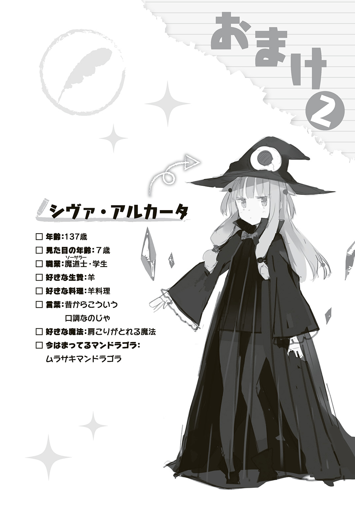
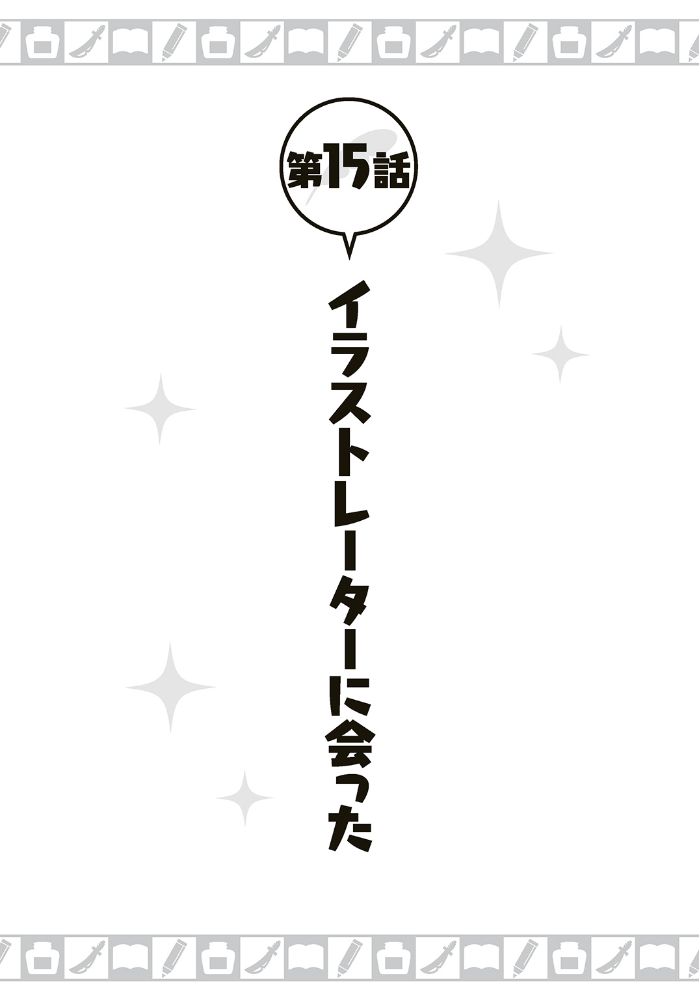
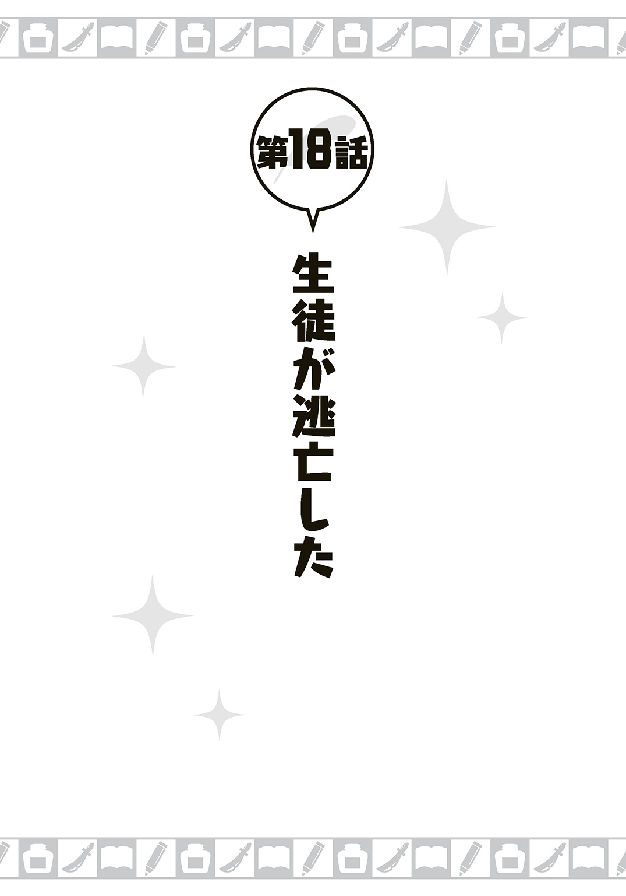

| 異世界作家生活 女騎士さんと始めるものかきスローライフ | |
| 森田季節 | |
この本は縦書きでレイアウトされています。
また、ご覧になる機種により、表示の差が認められることがあります。
 ダッシュエックス文庫DIGITAL
ダッシュエックス文庫DIGITAL
異世界作家生活
女騎士さんと始めるものかきスローライフ
森田季節
CONTENTS
「みんな、おはよう。講師の長谷部チカラだ。今日も文章の書き方をできるかぎり、やさしく、わかりやすく、教えていくのでよろしく」
「「よろしくお願いしまーす」」
すぐに生徒たちの元気な声が返ってくる。
ただし、いろんな声は一つになったりはしない。特徴はそのままに残して、混ざり合っている。よく聞くと、それがわかる。
なにせ、こちらの世界に住む普通の人間もいればコボルトやハーピー、サイクロプスもいる。サイクロプスの声は意外と小さい。
「今日は、二ページでショートショート、つまりすごく短い話を作ってもらう」
「「はーい！」」
今度はなかなか統一感のある声だった。統一しなくてもいいけどな。むしろ個性を伸ばすつもりでいる。
「テーマは自由だけど壮大な話は無理だから、笑える話やオチが意外な話を考えよう」
「「はいっ！」」
「じゃあ、早速やってみようか。制限時間は十分。詰まったら遠慮なく手を挙げろ」
教壇に立つことには慣れてきたのか、俺の声も教師らしく堂々としてきた。
とはいえ、教師一年目なので、この教え方が正しいかはわからんが。
ファンタジー世界とでも言うしかない異世界の国家、アルクス王国。
ここで俺の専門であるライトノベルの書き方について教えること。
これが現在の俺の仕事だ。
ちなみに本業のライトノベルは空き時間に書いている。兼業作家というやつだ。
現在、日本での新シリーズの仕事以外に、アルクス王国初の本格的オリジナルライトノベルを出版するべく、鋭意執筆を続けている。
どうしてこんなことになったのか。
――話は二カ月ほど前に遡る。
なお、もし、これがショートショートの課題なら、
「 ――話は二カ月ほど前に遡る。」なんて終わり方は絶対ダメである。
ちゃんと二ページでオチもつけろ。

その日、俺は東京の中心部にある、とある出版社のビルに来ていた。
目的はライトノベルのシリーズ最終巻（ちなみに三巻目）の打ち合わせだ。
ただし、最終巻のほうはすでに原稿も編集の上杉さんが目を通しているし、大きな修正は必要ないはずだ。
もっと大事な話も一緒にするつもりだった。
ずばり、次のシリーズをどうするかである。
「原稿を確認しましたが、とくに何も問題ないかと思います」
「ありがとうございます。三巻ともなるとキャラを動かす勝手もわかってますしね」
「こちらも仕事が少なくてすみます。さすがベテランですね」
「ベテランは言いすぎでしょ。俺、大学一年でデビューしたから......まだ七年目ですよ」
「業界的に言えば、もうベテランですよ。もちろん、二十年選手のレジェンドみたいな人もいますけど」
そっか......。せいぜい中堅どころだと思っていたが、栄枯盛衰の激しいこの業界では七年程度でも安定して仕事をしていればベテラン扱いされてしまうのかもしれない。
ただ、自分の場合、悪い意味でも安定しすぎているのだ。
七年やってアニメ化した作品もない（ドラマＣＤやコミカライズまではある）。
なので、できればアニメ化を狙えるようなものを作りたい。
次のシリーズは売れそうな要素をすべて注ぎこんでやろう。
デビュー当初のような無駄にグロくなったり鬱になる展開もやめよう。あの頃は、あれが尖っていてかっこいいと信じていたのだ。二十五歳、二十代もなかばの今となっては、なつかしい話だ。
編集の上杉さんとアニメ化までいくシリーズを作れるよう頑張ろう。
いや、絶対作ってやる。代表作にしてやる。「どういうの書いてるんですか？」と言われて作品名出して、きょとんとされるのはもう嫌なんだ！
「上杉さん、次のシリーズなんですが、アニメ化を狙ったものに――」
「そうそう、今日は長谷部さんに会いたいという方が来てるんですよ」
意外な言葉に俺の意気込みはいったん立ち消えた。
「えっ？ 誰です？ 違う部署の編集さんですか？」
同じ出版社でも漫画の編集さんや一般文芸の編集さんが別にコンタクトをとってくるということは稀にある。
「いえ、うちの会社じゃないです。別室で待ってもらっているので、お呼びしますね」
脳内に「もしや」という期待が芽生えた。
これは、アニメ制作会社の人かもしれない。
ライトノベルにしても漫画にしてもアニメ化されるものはヒットしているのが普通だ。
だが、普通があるということは例外も存在する。
監督が偶然目にして気に入ったとか、そこまで売れてないけどアニメの制作費が安そうだから採用されたなんてこともある（らしい）。
俺もデビューから七年、著書の数だけは増えてきたからな。名前がどこかで知られる可能性もゼロではない。
やっと自分もアニメ化か！ もう同期や後輩のアニメ化してる奴に気後れしないぞ！ 他社で同期の堀松ひら（♀）にもデカい顔されなくてすむ！
実際、サシ飲みした時にひらにおごってもらった時はラッキーと思った反面、どうも釈然としない気持ちになったものだった。まあ、ラッキーとも思ったけど。
同期の奴がごく自然に「ここは私が払うわよ。呼んだのは私だし」みたいなことを言うって、モロに自分のほうが売れてますアピールじゃねえか。そりゃ、お前の本は売れて、アニメもそれなりに成功して、年収も数倍あるかもしれないけど......。
やめろ。
これからアニメ化の話がはじまるのだ。昔の嫌な記憶は封印しろ。
だが――
部屋に入ってきたのは、帯剣した若い女性だった。
幼さが残る顔立ちで、まだ少女と言ってもいい年かもしれない。高校生ぐらいか。
服装――というか装備も大昔の異国の騎士がしているようなもの。
そういえば、髪の色はあざやかなゴールドで、顔つきもどちらかというと西洋系か。
北欧生まれの気品あふれるお嬢様といった雰囲気だ。
凜々しい口元は高貴なものを感じさせるし、碧い瞳も理知的な印象を与える。ファンタジー小説のメインヒロインに据えたいぐらいだ。
とはいえ、俺の心は少し暗くなった。
絶対にアニメ制作会社の人ではないからだ。
この世には二つの人間がいる。アニメ制作会社の人間とそうでない人間だ。騎士っぽいこの女性は後者である。
さよなら、アニメ化。
いや、さよならじゃない。
俺は諦めないぞ。アニメ化よ、また会おう。きっと会おう。アニメ化よ、俺がふさわしい男になったら、迎えに来てくれ。きっと、お前を幸せにしてやる。ついでに俺も幸せにしてくれ。俺の渾身の力をこめた小説を、最高のアニメにしてくれ！ 原作ファンにもアニメ初見にも感動の涙を流させてやろうぜ！
というか、この女の子、誰？
まったく話が読めず、編集の上杉さんの紹介を待っていた。
しかし、不思議なことに俺と目が合った瞬間、少女の表情が朝日を受けて開いた花びらのように、ぱっと明るくなったのだ。
ライトノベルの主人公だと諸般の都合で女性の好意に不自然なほどに気づかないものだが、現実では自分と目が合って笑ってくれたら、何かあるぞとは気づく。
どうも俺のことを知っているようなのだ。
だが、こんな子と会ったことなんて絶対にない。
俺は自慢じゃないが女子の知り合いなんてほとんどいない。
高校のクラスにいた女子は顔すら一人も覚えてない。
友人の作家（友人の数が少ないので、例の堀松ひらだけど）に話したら「なんで？ 女子と話すと呪われるの？ そういう家のしきたりなの？」とドン引きされたが、事実だからしょうがない。二次元のキャラの区別しかつかなかった。だって二次元だったら髪の毛がピンクやら青やらで記号的にも覚えやすいし。
だから、金髪碧眼の美少女との出会いなら忘れることはないはずである。
「長谷部チカラさんですね......？」
美少女は声も美しかった。透き通る声とでも言おうか。
「は、はい、そうです。本名は長谷部龍介です」
勢いに負けて、なぜか本名まで言ってしまった。
「会いたかったですっ！ 光栄ですっ！」
美少女は一歩前に踏み出すと、その手で俺の両手をぎゅっとつかんでぶんぶん振った。
俺はなされるがままだ。
俺、罠にかかった鶴を助けたりしたかな？
その鶴が転生して恩返しに来てくれたのかな。
「その方は、アルクス王国の二級騎士のシーナ・マスクリフさんです」
「それって、あの異世界に存在して、かつ、地球側とまともに国交のある、唯一の国か」
「はい！ そのアルクス王国から留学で日本に来ていましたシーナと申します！ 都内の書店で長谷部チカラ先生のご著書を拝読しまして、それでファンになったんです！ チカラ先生の本はすべて持っています！」
「マジで？ 同人で出してたやつとかも？」
「はい、委託してる書店で買いました」
俺の最初の感想は「やったー、数少ない女性ファンだー！」だった。シリーズにもよるが男女の読者比は九対一ぐらいだったりする。工業高校みたいな男社会である。
そのあとに、こんな驚きが来た。
「まさか異世界のファンがいるとは......」
アルクス王国というのは、十年前にこの世界と交流がはじまった、こちらの価値観で言うところのファンタジーっぽい世界にある国である。
王国以外にも、向こうにはいくつも国や部族があるらしいが、こちらの世界との交流はないので、省略する。俺もよく知らん。
七年ほど前、偶然、王国の魔法実験で日本とのトンネルができてしまったのだ。
そんなわけで出入り口のある日本とのつながりは他国より強い。
ただし、性急にこちらの違う文明に触れさせて、電気や車の社会にするのはよくないということで、両世界との大規模な交流は禁じられたままだ。
向こうに行った地球人も、各国の政府関係者や一部の研究者などに限られている。
王国側からも観光目的などでは来れないが、留学は認められていた。
その留学生の一人が彼女だったということだ。
二級騎士というのも、二流みたいに聞こえるが、一級騎士になるのは大臣などの高官クラスのはずだから、この歳で二級騎士ということは超エリートだ。
「シーナさんはこちらの世界の芸術を学ぶために、日本に留学されたのですが、そこでどっぷりオタク文化に染まってしまい、国費で漫画やらグッズやらを大量に購入されていました」
「それ、海外留学生でもたまにあるやつ！」
国が金を出して日本に行かせたのにオタクが一人増えただけというのは、本国からしたらやりきれないことこの上ないだろう。
「私、今期のアニメは二十八本見ています」
「一日四本か。見れない数じゃないですね......」
「録画して、ＣＭ、ＯＰ、ＥＤをカットして、少し声が聞き取りづらくなりますけど速度上げて再生すれば一話十七分ほどですみますから」
「ファッションオタクじゃなくてガチな人だ！」
「シーナさんはもうすぐ留学期間が終わって、王国で政務につかれるそうです」
小さく、首だけで彼女がこくっとうなずく。
なるほど、本国に戻る前に、記念に作者に会わせてやろうということか。
この人はつまり海外要人だ。多少の無茶もきくだろう。
こちらも美しい女性のファンがいることを知って、モチベーションも上がる。減るものじゃないし、サインぐらいなら何枚でも書くぞ。
「あの、チカラ先生、今日はお願いがあって参りました」
もう下の名前で呼ばれた。ずっと手を握られているし、フランクな国民性なのか。
まずはそのお願いを聞かなくては。
「サインだったら喜んで」
「王国で小説の授業をしていただけませんか？」
「................................................はっ？」
サインとまったく関係ない内容だったので混乱した。
「アルクス王国にお住みいただいて、そこで王国民のための小説学校を開いてほしいんです！ 給金は国家から支給いたします！ 王国でわからないことは私がお教えします！ 王国の出版文化の普及のためにご協力ください！」
「内容はわかったんだけど......。異世界で働くんだよな......ライトノベルの仕事はどうすれば......」
給料が年俸一億とかなら話は別だが、あくまでも文章を書くのが好きでこの職業をやっているのだ。作家から講師に転職というのは抵抗がある。
繰り返すけど、年俸一億とかなら作家を諦める。
年俸五億なら俺の著作が焚書されても許す。
「ご懸案の点ですが、原稿の輸送ぐらいはできます。パソコンを動かすバッテリーも一年分は日本から持ってこれます！ その他、必要なものは随時取り寄せ可能です！ 注文した翌日には届きます！」
つまり、仕事自体はできるということか。
授業もしないといけないから兼業にはなるが、兼業作家ぐらい腐るほどいるから、できないことはないだろう。授業だって小説に関することなわけだし。
「そういえば、出版文化っておっしゃってましたけど、書店とかあるんですか？」
「はい、王都には何店舗かありますよ」
その時、俺の中で素晴らしいアイディアがひらめいた。
もし、俺が王国に行って、ライトノベルを書けば――
それは王国史上最初の本格的ライトノベルとして長らく歴史に残るのでは？
日本ではライトノベル作家が多すぎる。
マジで多すぎる。
おかげで刊行点数も多すぎる。
こんなん、気合い入れて本書いたって埋もれるわ。
ただでさえ小説の面白さなんてがっつり読まないと判断つかんのだぞ。
漫画の何倍も読むのに時間がかかるから、月に何十冊も読めんのだぞ。
新人でも表紙のレベルが高ければベテランがあっさり売り上げで負けるんだぞ。
クソゲーじゃねえか
ならば、俺はアルクス王国のライトノベル作家になる。
唯一無二の、アルクス王国のライトノベル作家になる。
一人しかいないから、絶対に負けない。
俺が、ナンバーワン。
マジでオンリーワン。
かつて浮世絵がヨーロッパの絵画に影響を与えたのは、ヨーロッパにない独自のものだったからだ。ライトノベルもファンタジー世界ではきっと独自だろう。
勝機はある。
それだけで食っていけるかわからんが、日本用の仕事も続ければいいだろう。
「わかりました。行きます」
「長谷部さん、えらくあっさり決めましたね！」
編集の上杉さんのほうがびっくりしていた。
「だって、仕事にはそんなに影響しないんでしょ。だったら、稼げる仕事は受けますよ。それに、俺、東京が地元じゃないんで、よそで働くって意味だと一緒ですし」
あと、ファンタジー世界をリアルに見ることができるというのはライトノベルを書く者として貴重な体験だ。日本で出す小説にもフィードバックできる。
「ありがとうございます！ 尊敬する作家さんに来ていただけて本当にうれしいです！」
握られたままの手をまたぶんぶん振られた。振られすぎて、体も揺らされた。
「あっ、漫画とか小説とか資料とか持っていけますか？」
「はい！ すべて持ってきてください！ むしろ多いほうがいいです！ ほしい漫画やＤＶＤがあったらどんどん言ってください！ 国費で買います！」
喜色満面の笑みでシーナさんは言った。
いや、国費使ちゃいかんだろ。
荷造りは、友人の作家である堀松ひらに手伝ってもらった。
「あんた、本気で王国に行くの......？」と三回聞かれた。
「むしろ、どうして忌避するのかわからん。トンネルをくぐれば王国の言葉は全部日本語に聞こえるように変換されて、文字も日本語に見えるらしい。魔法ってすごいよな」
「言語の問題だけじゃないって。異世界よ、異世界」
「日本で空気の合わん場所よりは異世界のほうがマシだ。たとえば非モテの俺がいきなりキャバクラとか連れていかれたら、勝手がわからず、半泣きになって逃げ出したくなるだろう。それならファンタジー世界のほうが気楽だ。あと、本物のエルフとか見たい」
「はあ......これ以上言っても無駄か」
「うん、無駄だ。お前は俺の漫画コレクションをダンボールに入れる作業を手伝え」
「はいはい......。うわ、七〇年代初期に出た『金ゲバ』の００年復刻の愛蔵版持ってるの!? これ、ちょうだい！」
「ダメだ！ 本は一冊も捨てずに持ってこいってシーナさんに言われてるんだ！ お前、金はあるんだから買えるだろ」
人数が倍になるとペースは倍以上になる。一日で荷造りは終わった。
「ったく。手伝ってあげたんだから感謝しなさいよ」
「わかった。お礼にツイッターでお前の新刊、すごく面白かったって連投しとく」
「そういう実利的なお返しは求めてないの！」
その日の晩飯はさすがに俺がおごった。
ひらよ、今は売り上げで大差をつけられているが、いずれ文学史の上では俺のほうが著名になるのだ！
王国とのトンネルはとてつもなく厳重な警備をしている都内のビルにあった。
さらにその場所を口外しないという念書まで書かされた。
テロ組織などに狙われることを防ぐためなのだという。実際のところ、魔法でできているのでトンネルの封鎖はたやすいらしいが。
手続きを終えて、トンネルのある部屋に入った。
演出用のドライアイスでも使っているみたいな白い煙が漂っている中に、半円形の白い入り口が見えた。たしかに扉というよりはトンネルという表現が近かった。
「けっこう怖いですね......」
「なんてことはないですよ、チカラ先生」
引率はシーナさんがしてくれる。俺だけで行ってもどこで何をしていいのかわからず、おいてけぼりになるのでシーナさんのガイドは必須だ。
「学校の準備も部屋の用意もしていますからね。王国の文化発展のためによろしくお願いしますっ！ では参りましょうっ！」
俺の手をぐいっと引くと、シーナさんはずんずんトンネルのほうに進んでいって――俺も知らないうちにトンネルをくぐる。
そういえば気候を聞いてなかったな。Ｔシャツの上から一枚羽織ってるだけだけど、シベリアなみに寒いだなんてことはないよな？ 住みやすい気候でありますように。
そんなしょうもないことを危惧しながら、俺はアルクス王国に着くのを待つ。
ある意味、アニメ化よりレアな経験を俺はしに行くのだ。
でもアニメ化も経験したいけど。
アルクス王国の気候はちょうどよかった。ほどよくあったかい。
寒くもないし、暑くもない。砂埃が舞っているということもない。
神殿のようなところの中庭っぽい場所に俺は立っていた。ワープ完了だ。
足下には魔法陣らしきものが彫ってある。これがワープに関与しているのだろう。
「アルクス王国にようこそ！」
きょとんとしている俺に、シーナさんが美しい笑みを見せてくれた。
「ここは王都トーヤの中心、トーヤ城です」
「王城に汚い格好で来ちゃって、すいません」
こんなことならスーツを着てくるべきだったか？ でも、スーツがこっちの人にとって、正装と認識されなければあまり意味もないか。
「陛下への着任のあいさつなども必要ないですので、このまま城下町に出ましょう。主だったお荷物が届くのは明日ですし、今日はひととおり案内しますよ！」
「では、お言葉に甘えて......」
――と言う前からシーナさんに手を引かれていた。このシーナさん、なかなか押しが強いタイプらしい。
これだけの美少女が何か頼んだら「この場で爆発して夜空に輝く星になって」みたいなことでない限り、だいたいの言うことは聞いてもらえただろう。早起きは三文の徳、美少女は三千両ぐらいの徳である。
中世ヨーロッパの城をイメージしていたが、その城はだいたいそんな感じだった。少なくとも天守閣はない。
「立派なお城ですけど、これ、水堀を突破されたらモロそうかな......」
「あらら、物騒なことをおっしゃいますね」
「すいません、日本で城を攻略するゲームをやってたもので......」
「このお城はそんなに堅牢にする必要がなかったんですよ。西側と東側を大河川にはさまれていて、北に三キロも行くとホタ湖という巨大な湖があるんです」
「キロ......？ ああ、そうか、翻訳されて、キロに聞こえるんだな」
言葉や単位をいちいち覚えなくていいのは非常に助かる。
「それじゃ、早速街に出かけましょう！」
俺はシーナさんに手を引かれながらついていく。これが日本なら彼氏のふりをして、ちょっといい気分になれたかもしれないが、見るものすべてが初めてなので、むしろこの手が命綱みたいな気持ちである。
「......おっとっと。いったんストップです！」
急にシーナさんが止まったと思ったら、目の前を馬車が通り過ぎていった。この世界でも「車」には気をつけないといけない。
ただし「馬」車とわかりやすく表現してしまったが、引いていたのは馬ではなくて軽トラぐらいはある巨大な牛っぽい動物だった。
よく見ると、地面には鉄の線路が敷いてある。これは鉄道であるらしい。
「日本で言うところの市電ですね。郊外に出る時に使います」
平安時代の牛車の五倍ぐらいの速度で牛鉄道は走っていった。
気をつけよう。轢かれると死ぬ。
城から数分歩くと、シーナさんいわく、トーヤ一番の大通りに案内された。
たしかに道の両側に店舗がずらりと並んでいる。空き店舗は一つもない。お店からは店員の威勢のいい声も飛んでくる。
店を横目に見ていくと、
――パンとクッキーの間みたいなものを売っている店（ほこりが入らないようにガラスケースにしまわれている）。
――魚を焼いて売っている店。
――薬局のような、薬が並んでいる店。
――鳥が吊るしてあるのは、鶏肉の専門店みたいなものなのだろう。
――隣には兎や鹿、猪、豚といった獣の絵が描いてある店。
――あとはほかより間口の広い店は衣類を並べているのがわかる。ディスプレイされているのはエルフが着ていそうなファンタジーっぽい服だが、それ以外の部分だと日本の衣料品店に近いか。
そんなことを考えていたら、角の生えた巨大な兎に首輪をつけて散歩している人がいた。ぎょっとして、ちょっと身構えてしまった。
「あれはアルミラージですね。この国ではよくあるペットです」
「やっぱりファンタジー世界だ......」
「野生のものはなつきづらいのでペットショップで育てているものを買います。夜に外に出しておけば番犬代わりにもなりますし」
一人暮らしだし、ペットでも飼おうかな。でも、無茶苦茶エサ食べそうだな。そういうのは生活が慣れてきてからか。
まずは店に目がいったが、どちらかというと通行人のほうが面白い。大半は普通の人間だが、たまにエルフやゴブリンみたいなのも歩いている。
「人間以外の種族の方は、仕事で王都トーヤに住んでいたり、移住してきた方ですね。居住権を買えば誰でも王国では暮らせますから」
「その居住権というのが国籍みたいなものってことですね」
「おそらく、地球の国ほどかっちりしてないですけどね。国境があいまいで、両属状態の地域もありますし。それじゃ、ここから少し通りを変えましょう」
シーナさんは大通りから左の路地に入っていく。曲がる時に、シーナさんの手に少し力が入って、ちょっとどぎまぎしてしまった。恋人でもないのに、ずっと手をつながれているのだ。
この人のボディタッチの多さは卑怯だ。絶対に勘違いする奴いるぞ。
「あら、体調、悪いんですか？ 困ったような顔になってますが」
「いえ、いたって健康かつ、正常な反応をしたまでです」
住宅街になっている路地を突っ切ると、また広い道路にぶつかった。
道路をはさんだ向かいには会社の社屋や個人の事務所といった感じの石造りや木造の二階建て、三階建ての建物が並んでいる。
「あれを使っていただくことになります」
シーナさんが指差した先には、ひときわ立派な二階建てがある。
ごつごつした石の外壁が威厳を放っているし、入り口の扉もイギリスの伝統ある商館みたいだった。正直、これが地球なら俺の貯金を全額はたいても、購入は不可能だろう。というか、個人の邸宅の広さじゃない。
こんなところに住めるのか！ やはり、異世界行きを決めてよかった！
「中もご覧になります？」
シーナさんは肩にかけていた小さなカバンから真鍮製のカギを取り出した。
「もちろんです！」
内部はかなり広々としていた。以前に使っていたらしい椅子や机を隅に寄せてあるせいもあるのだが。
床や天井といった内部は木製らしい。おそらく、こちらの世界では高価な、魔法で点灯するライトも天井に備えつけてある。その天井だってかなり高くて開放感がある。
「もともとは銀行として使用されていた建物ですが、現在は国の所有物です。残ってる備品は明日には運び出す予定ですが、ご入り用のものがあれば、おっしゃってください」
俺の生活水準偏差値が二十ぐらい上がった。
これは本当に専属メイドや執事ぐらいついてくるのではないか。一生、王国で小説について教えてもいいぞ。
堀松ひら、お前が住んでる駅前高層マンションよりいいところに俺は住む！
つまり、俺は住居的な意味ではアニメ化作家のお前を超えたということだ！
「シーナさん、大変素晴らしいです！」
「ご満足いただけたようでなによりです！ 私もうれしいです！」
「これで満足できないようなら、森の中で仙人生活でもやったほうがいいですよ！」
「では、次に先生がお住まいになる建物に向かいますね」
「はへ？」
変な声が出た。
「ここは俺の住む家じゃないんですか......？」
「ここは小説書き方教室の校舎です」
シーナさんはにっこりと素敵な笑顔でおっしゃった。
異世界という電波の入らない環境でよかった。でないと、ひらにお前よりいいとこに住むぞとか謎の勝利宣言の電話をかけていた危険がある。勝利してないのに勝利宣言とか小物中の小物である。
いやいや、まだ校舎が豪華という情報しか俺は得ていない。講師である俺の住居がさらにリッチ＆ゴージャスな可能性だって残されているのだ。
――五分後。
「ここがチカラ先生のお住まい候補です」
平屋のくたびれた雰囲気の建物が前にあった。
一応、奥には庭があるようなのだが、手入れがされていないので雑草が生えているだけのスペースと化している。夏は虫が多そうだ。
ファンタジー世界だから屋根も煉瓦造りかなと思ったが板葺き。板が飛ばないように大きな石を載せているのが侘しさにとどめを刺している。
俺は小説家だから、こういう建物を示すよい熟語を知っている。
茅屋。これは茅屋だ。
「これまでマスクリフ家に仕えていた古株の使用人さんのおうちだったのですが、半年前にお孫さんに引き取られまして、空き家になっていたんですね」
「そうですか、死人が出た事故物件じゃなくてよかったです」
俺は半笑いだ。
絶望した時、人は笑うしかなくなるのだ。
「学校までゆっくり歩いて五分、商店街まで早歩きで六分、お城にも早歩きで六分、マスクリフ家の所有地でこれだけ好立地の場所はここしかありませんでした」
「ですよね。職住近接って大事ですもんね」
「見た目はボロっちいですが、水道もありますし、お湯も出ます」
「認めた！ 今、ボロいって認めた！」
「すいません......事前にチカラ先生のお住まいを確認したところ、ワンルームという、あまり広くも立派でもない形式のものだったため、それに近いものを選びました......。生活環境が激変すると執筆活動にさしつかえがあるかと思いまして......ぐす......」
えっ......もしや泣いてる!?
シーナさんは顔を覆って涙声を出している。
この家がボロいのも、彼女の厚意だとしたら、俺はその厚意を踏みにじったことになる。
「ぐすっ......ごめんなさい......」
どんな理由であれ、女の子を泣かせるというのは男として恥ずべきことだ。
「ここでいいですから！ よく見たら平屋でもかなり広いし！ だから、落ちこまないで！ 泣く必要ないですから！」
「まあ、泣いていませんけどね」
シーナさんが顔を上げた。ドヤ顔だった。
当然、涙など一滴もこぼれてはいなかった。
「泣き真似......。騙された......」
「マスクリフ家は武門の一族ですので、使える武器は何でも使うのが信条なのです。涙は女の武器と申しますからこんな泣いたふりも幼少の頃から学んでます」
「俺の純情はきっちり弄ばれたってわけですか」
いっそ、校舎に住めないのか？ いや、冷静になれ。職場と住居を同じにすると公私の別がつかなくなる。絶対に分けておいたほうがいい。
「あと、この建物にはちょうどいい設備があるんですよ。これです！」
平屋から庇で接続された先には、仮設住宅一棟ぐらいの小屋があった。
空っぽだし、水道設備もトイレもないので、本当にただの箱である。
「物置ですか？」
「夢の箱です」
「はい？」
「大事なことなので、説明しますね」
シーナさんは真面目なことを話す前置きなのか、こほんと咳払いした。
「ここに、チカラ先生が所有している漫画、小説、資料、ゲーム、同人誌、アニメＤＶＤ、とにかく一切合財を保管しておいてもらうんです。実家のものも全部移しちゃってください。もちろん、よく使う資料などはお住まいの建物のほうに置いといてもらえばけっこうです。アルクス王国には当然ながら、日本の文化に関するものが充実していませんので、ここを日本文化普及の拠点施設にしていただければと思います！ 言うまでもなく、重要な場所ですから盗難などの被害に遭わないように随時この私が見回りに来ます。過去のものだけでなく、日本で出た新作、新刊も遠慮なく国費で購入してください。むしろ、あまり興味ないなあと思う作品でもとりあえず購入してください。私からは以上です」
「つまり、本を読みに来るってことですね」
「できれば週四で来たいです」
来すぎだろ。
今の長ったらしい発言で何もかもわかった。
この人、自分の職場から近いところに遊び場がほしかったのだ。
それで、俺の住居をていよく利用しようとしているのだ。絶対そうだ。
「殿方の部屋にお邪魔するのは抵抗あっても、主屋から分離してる倉庫なら出入りしやすいですしね。我ながら完璧なアイディアです。名軍師ノトー四世のごとくです」
王国の人物なんだろうけど、何者かわからん。
「シーナさん、貴族階級なんだから自分で買えばいいんじゃないですかね」
「それだと、国費が使えないじゃないですか。私のお財布にも限度があります」
この貴族、すごいダメな人だ。
「それに、こういうのは自分の屋敷だと落ち着かないんですよ。ちょっと離れたところにあるほうが息抜きにはいいんです。チカラ先生もワンルームから徒歩五分のドトールで仕事してたじゃないですか」
「なんで俺の執筆スタイルまで知ってるの!?」
「編集の上杉さんから聞きました」
あの人、べらべらしゃべりすぎだろう......。
このままだと、シーナさんの大人の秘密基地の夢をかなえるためにボロ屋に住むことになってしまう。
もっと小さなことなら、美少女の頼みだからと安請け合いするところだが、住環境は年中無休でかかわってくるのであまり妥協したくはない。
いや、絶望するのは早い。俺は脳内で既読文章チェック機能を使った。
ギャルゲーをそれなりにやってきた人間は、少し前に交わされた会話内容を文字化、視覚化して脳内に出すことができるのだ。
たしか、シーナさんはこう言っていた。
「ここがチカラ先生のお住まい候補です」
つまり、ほかにも候補がある可能性は存在するのだ。一言も、ここしか空いてませんなどと言われてはいない。
「すいません、シーナさん。職場に近いとか、そういう利点をはずすとほかにどんな候補があるんでしょうか？」
「そうですね、ごく普通にマスクリフ家の屋敷にお住まいいただくことも考えています。メイド長などにも可能かどうか打診しておきました」
「それそれ！ そっちでいきましょう！」
しかも文脈上、複数のメイドさんがいらっしゃることは確実だ。中にはうら若きメイドさんもいるかもしれない。自分専用のというわけではないが、絶対にそちらのほうがいい。
「その場合、ちょうどいい空き部屋がないみたいで、私の部屋を半分に仕切って使っていただくことになります」
「え、シーナさんと同じ部屋......？」
「現時点で私の部屋は日本で言うと二十畳ほどありますし、大半のスペースは遊ばせているので、分割してもらう分には構わないです。先生のお仕事を身近で拝見するのも貴重な経験なので、私としてはそれでもいいですよ」
にこりと天使のような笑みをシーナさんは浮かべた。
シーナさんは嫌そうな顔一つ向けてこなかった。この調子だと俺がＯＫと言った途端に同じ部屋を使えることになる。
シチュエーションとしては最高ではある。が――
「俺、こっちのボロい物件でいいです」
「あれ、遠慮ならなさらなくてけっこうですよ......？ もし、抵抗があるなら最初から私は提案していませんし......」
なるほど、シーナさんとしては俺が遠慮しているように映るよな。しかし、そうではないのだ。これは俺の職業倫理の問題なのだ。
「美少女と同じ部屋で暮らすだなんてリア充な生活をしたら、ラノベが書けなくなります」
ライトノベルで、やたらとハーレム展開や俺ＴＵＥＥＥ的な展開が多いのはぶっちゃけ商業的な要請である点が一番大きい。ハーレム展開にしたらまったく売れなくなるなら誰もそんなものは書かない。
とはいえ、だ。
そういう作品が多く存在するということは、書き手なり読者なりにそういう欲求があるわけである。
欲求があるということは充たされてないということである。実際に彼女が五人いる生活をしている男は、多分ハーレムものを書かない。
もし、そんな奴がハーレムものを書いていたら、あらゆる手段を駆使してつぶす。
話がそれかけたので、元に戻そう。
一言で言えば、ルサンチマンをぶつけるという行為が、創作の根底にあるのだ。
おそらく、これはラノベに限らず、小説全般に言えることだろう。
俺が最初に小説を投稿した時、「復讐してやる」という熱意に突き動かされていた。
ちなみに、何に対する復讐なのかは具体的には自分でもわからない。
おそらく、高校時代のクラスに友達が誰もいなかった経験などに対する憎悪の念ではなかろうか。
休み時間はしゃべる相手もいないのでひたすら問題集を読んでいた（マジです）。
弁当を食べる時間もつらいので、トイレに座って食べたこともある（マジです）。
ライトノベルに限らず、多くの物語は人間同士の関係性を書く。
つまり、完全なる孤独は物語すらも誕生しない無の状態なのだ。
とにかく、鬱屈した気持ちの発散のために、小説を書いていた。
その小説自体は落選したものの最終選考まで残り、それで味を占めた俺は復讐心という負の感情をエネルギーにして、一年後にメディア工場という出版社からデビューした。
ライトノベル業界に入ると、過去にぼっちだったような人はたくさんいたため、高校時代ほど絶望的な気持ちにはならずに今に至っている。
友達いないのとコミュニケーションできないのは別なので、普通に仕事もできている。
しかし、俺の根底に負の感情があることまでは変わらないのだ。
なので、あまりにも欠けたところのない生活を送ると、原稿のレベルが落ちる。少なくとも俺はそう思っている。
原稿が下手になるのは素人にとっては悲しい出来事の範疇ですむが、プロにとっては死活問題だ。
聖人のような心持ちになる代わりに小説が書けなくなるなら、一生人間を憎悪する代わりに小説が書ける人生のほうがいい。
以上の理由から、俺はシーナさんと同棲するわけにはいかないっ！
俺は作家なんだ！
まだ生涯年収分も稼いでないから働くしかないじゃん！
誰かが俺に五億くれたら作家やめてもいいよ！
「なぜだか、チカラ先生からみなぎる気迫を感じました」
「それを感じ取っていただけたなら、光栄です」
「では、この物件ということで決まりですね。家具はすでに新しいものも入れていますし、寝具もありますので、本日からご利用ください」
「わかりました。まあ、元いた世界の部屋より広いぐらいだからどうとでもなりますよ」
「開校日は三日後です。何か疑問がありましたら、私は城か屋敷にいるので、聞きに来てください。携帯電話とかメールとか便利なものが使えませんので。それにしても――」
シーナさんは、「お前ならそう言うと思ってたぜ。ほんとにバカな奴だな。だけど、最高のバカだ」みたいな顔をした。
「――先生のライトノベル作家としての意地が早速見れてうれしかったです」
「作家っていうのは、ちょっと不幸なぐらいがちょうどいいんです」
シーナさんが帰ったあと、俺は早速布団を出した。
思いのほか、疲れてるし早く寝よう。
いよいよ、俺のアルクス王国での新生活がスタートだ。

――王国に引っ越してきてから四日目。
俺は「アルクス王国小説書き方教室」という看板がかかった校舎の前にいた。
ちなみに俺の目には看板は日本語で「アルクス王国小説書き方教室」と見える。
本当はアルクス語の文字で書かれてるはずなのだが、そのあたりはトンネルをくぐった時に翻訳魔法が自動でかかるようになっているのだ。この魔法、海外旅行などに便利すぎるのでぜひとも地球でも実用化してほしい。
新入生の一覧は昨日、シーナさんが紙を持ってきてくれた。
生徒数はちょうど二十人。
よくもまあ、怪しい学校に二十人も集まったものだ。
日本でも、こんなん駅前にできたら、ちょっと警戒するぞ。
教室に入ると立派な黒板が目に入った。日本から取り寄せたものだ。ものの取り寄せ自体はかなり容易にできる。トンネルの出入り口である王城からここまで数分だし。
「教壇の前にいて、生徒を一人ずつ出迎えるのも気まずいな......」
結局、二階にある講師控室に入る。銀行時代に支店長の部屋だったものだろう。
「ううむ、落ち着かん......。缶コーヒーでも買ってくるか......。ダメだ、コンビニも自販機もない」
言葉は魔法のおかげで通じるとはいえ、異国どころか異世界で初めての教師をやるのだ。
緊張しないわけがない。
檻の中のクマのように部屋の中をぐるぐるまわっていた。じっと座っていられないのだ。
こんなことならシーナさんに初日だけ見に来てと頼んでおくべきだったか。けどそれはみっともないだろ。それに向こうも王国の高官だ。あまり時間を取らせるのもまずい。
むしろ、今日は何を教えよう......。こんなことなら専門学校で教えてる同業者から話を聞いておくべきだった。いかん。二度目の「こんなことなら」だ。後悔しすぎ！
五十周はまわったあたりでゴーン、ゴ～ンと鐘が鳴った。
「さて、行くか......」
◇ ◇ ◇
「みんな、おはよう。講師の長谷部チカラだ。本日から文章の書き方を一緒に勉強していこう。最終的にはみんなが一冊分の小説を作れるまで指導していくつもりだ」
「「よろしくお願いしまーす」」
生徒たちがあいさつを返してくる。
人間、コボルト、ドワーフ、ハーピー、サイクロプスか......。名簿で知っていたとはいえ、なんとも新鮮だ。明らかに教育者ビギナーとしてはハードルが高い。
こほん。
小さく、空咳をする。
自分を盛り上げていけ。俺は教師だ、教師なんだ！
「まず、鉛筆という筆記具を一人五本ずつ配るからな」
鉛筆もシャーペンも日本からどっさり輸入してきていた。といっても、生徒数二十人だから、輸入というほどの量ではないが。
この国の筆記用具というと羽根ペンくらいしかないらしいのだが、これがかなり高価な代物で、日本円にして一本三万円ぐらいするのだ。庶民階級の子供も来たりするので、自前で用意させるのも悪いから、こちらで書くものは支給することにした。どうせ王国の税金だ。
ちなみに、学費も超格安である。国がバックにつくと強い。
生徒からは「すごく書きやすい！」「これは便利だ！」といった声が聞こえてくる。早速国費で配布してるノートにぐるぐる○を書いてる奴もいる。ファンタジー世界では鉛筆もレアアイテムなのだ。
シーナさんいわく、地球で見たパソコンの技術を応用して、文字をタッチパネルで打ちこめる石板も存在するようだが（魔法の技術ってすごいな......）、まだ数に限りがあるらしい。当分はノートでいいだろう。
さて、記念すべき第一回目の授業だが、
「まずはみんなに自己紹介をしてもらおうかな。動機や目標も聞いたうえで授業に活かしたいと思う」
こっちに洗練されたカリキュラムがあるわけでもないので、生徒側に合わせたい。
これで最初の授業は無事に終わるだろう。話の中から次の授業も決めていけば――
――ガシャーンッッッ！
窓が割れた。
えっ！ いきなり学級崩壊!?
「あっ、野良ドレイクが入ってきちゃったなー」
人間の男子生徒が呑気に言った。座席表に目をやる。ヌクイー・テンドールという生徒だ（年齢は十六）。
たしかに教室の中に小さなドラゴンみたいなのが入りこんでいた。
「そういえば、この季節は野良ドレイクが多いですものね。しょうがないですわ」
巨乳の、長い黒髪が似合う、巨乳の少女が言った。二度巨乳と言ってしまった。
あれ以上成長したらいろいろまずくないか。ああ、よくない、よくないぞ......。どうしても胸に意識がいってしまう......。
「あっ、先生、わたくし、ユサ・ミヤケルカですわ。法務官ハクサン・ミヤケルカの娘で今年で十五になりますわ」
指名とか無視してユサが自己紹介をした。法務官の娘ということは貴族令嬢か。
そしてわざわざ一番に自己紹介した理由がわかった。
ユサの目はクリスマスのイルミネーションぐらいキラキラ輝いている。
「日本からプロの作家先生に来ていただけるなんて光栄の至りですわ！ たくさん教えてくださいませ！ 立派な小説家になれるよう精進いたしますわ！」
出たな、プロの人間に過剰にあこがれる奴。
地方にサイン会に行った作家の話だけど、都内のサイン会より明らかにお客の喜び方が大きかったそうだ。特殊な職業の人間はその絶対数が少ない地方だとやけにありがたがられることがある。
この場合もそれに近い。王国にライトノベル作家なんていないからな。
「そうか、よろしくな、ユサ」
「先生の著作もたくさん読んでいますわ。デビュー作の『ハレルヤ・イン・ザ・スカイ』も素晴らしかったですわ！」
ありがとう。褒めてくれてありがとう。
でも、タイトル間違えてる！ 俺のデビュー作は『ハレルヤ・イン・ザ・スノー』だ。空じゃなくて雪だ。
「とくに『荒野聖人』のラストのシーンがよかったですわ！ あの雨の中で傘を差さずに走って追いかけるシーン、最高ですわ！ あれはライトノベル史上でも最も感動的なシーンの一つですわね！」
うん、褒めてもらえるのありがたい。承認欲求ゲージが満たされていく。
でも、何かほかの小説と間違えてる！ その本のラストは、夕方の教室でお互いに平手打ちするシーンだ。追いかけないし、雨降ってない！
「カナタの『さようならとは言わない』って台詞、最高にかっこよかったですわ！」
そんな名前のキャラ、いねえよ！ あの小説のヒロインはルカだぞ。ていうか、マジで何と間違えてるの？ 間違え元の小説が気になるぞ。
「そのカナタを雨の中、五キロ追いかけるユタカもいいですわよね」
「距離長いな......」
もっと早く追いつけよ。ユタカ、どんだけ足遅いんだよ。
「ああ、語ったらまた読み返したくなってきましたわ。家で読みますわ」
「むしろその本、貸してくれ！ かなり読みたい！」
やっと、俺が書いた本（ということになってる謎の本）のプレゼンが終わった。
そうそう、自己紹介どころじゃなかった。野良ドレイクがいたのだ。
ドレイクは命に別状はないようだが、動きがやけに緩慢だ。ケガをしたらしい。
「これ、ガラスが刺さってるかもな」とヌクイー。
「治療しないといけませんわね」とユサ。
「このわたしに任せるっピー！」
奥のほうでまた生徒が手を――というか翼を挙げた。
ハーピーのサッサー・サルサーラか。日本語にすると、やけに「サ」が多いな。
ハーピーは半鳥半人の種族なので、手が翼になっているらしい。
「わたしは簡単な回復魔法が使えるっピー！」
「それじゃ、早速お願いいたしますわ」
サッサーが歌と言ったほうがいいような美しい呪文を唱えた。
俺もつい、聞き惚れそうになるぐらいだ。
よし、これでドレイクが回復したら、授業の続きを――
――グアシャーンッッッ！
ほかのドレイクが窓を割って入ってきた。
「間違って、擬餌効果の魔法を唱えちゃったっピー！」
状況が悪化した......。
「さすがハーピーですわね。セイレーンのような見事な擬餌効果でしたわ」
ユサが感心してるが、それどころではない。魔法のせいか、何匹もドレイクが入ってきた。そんな東京の街中で見かけるカラスみたいな感じでカジュアルにドレイクに集まられても困るぞ。生態とか知らんぞ。
どうにかドレイクを回復させて割れた窓から出して、一段落ついた。
「ええと、いろいろアクシデントもあったが、自己紹介を再開しよ――」
「先生、すいません......」
生徒から手が挙がった。ユサのちょうど後ろだ。
この生徒はすぐに名前が覚えられそうだ。
なにせ巨漢で一つ目、クラスで唯一のサイクロプスの男子だったからだ。
「イタミルだな。これは姓なのか、名前なのか？」
「あの......サイクロプスは姓はなくて、名前だけなんです......すいません......」
なぜかイタミルは小声で謝った。体のサイズの割に気は小さいらしい。
「それで、いったい、何だ？」
「鉛筆がすべて折れました」
「早っ！ まだ書くことないだろ！」
「ノートに『講義第一回』と書こうとしたところまでで五本とも折れました......」
たしかに机にはへし折られた鉛筆の残骸が転がり、惨憺たるありさまだった。
人間なら鉛筆が短くても書けるだろうが、サイクロプスの手の大きさだと不可能だ。
「細くて、上手く握れなくて......力の入れ方が難しくて......すいません......」
イタミルが目を閉じて、申し訳なさそうに言った。
「盲点だった......。鉛筆って地球の人間が使いやすいサイズにできてるんだよな......。ちょっと、今後考える。今日はひとまず、誰か貸してやってくれ」
......しーん。
みんな、貸したくなさそうだった。だって授業開始前に全滅してるからな。今、貸したら生還不可能だよな。
しかし、もちろんこのまま放置するわけにはいかない。
「わかった......イタミルには俺のシャーペンを貸そう......」
折られそうなので、イオンで九十六円で買ったやつを渡した。五百円ぐらいするやつは貸したくなかった。
「折れたら言ってくれ」
「折れました」
五秒ともたなかった！
俺のミスチョイスだ。仮に本体が折れなくても、鉛筆をへし折るなら、シャーペンの細い芯など耐えられないに決まっている。さて、どうしたものか......。
「うん、イタミルには油性ペンを貸そう」
極太サイズの油性ペンをイタミルに渡した。
これならそうそう折れんだろうし、持つところも太いからサイクロプスでも握りやす――
――バシュッッッ！
油性ペンがはじけ飛んで、インクが飛び散った。俺の顔にも飛んだ。
「......タッチパネル型石板を用意してもらうので、次回からそれを使おう」
俺はすべてを諦めたような顔で言った。
それは一種の悟りであったかもしれない。
最初だし、いい授業にしようという迷いと執着から解き放たれたのだ。
もう、どうでもいい！
矢でも鉄砲でも持ってこい！
すべて、受け入れてやろう。用意周到な授業などクソ喰らえだ！ ありのままにやるぞ！ ライブ感を俺は大切にするぞ！
「よし、いろんなアクシデントがあったが、自己紹介に入ろう！ まずは列の前の――」
――ヒューン！
割れた窓から三匹目の野良ドレイクが入って――
「もう、入ってくんじゃねえ！」
俺はカウンターのようにドレイクに拳を突き出した。
授業の邪魔に来るなら、それもよかろう。すべて俺が追い返してやる！
右の拳がドレイクの腹に直撃する。
決まった。大ダメージだ。
俺の拳が。
「硬った！ ドレイク硬い！ 鱗が硬い！」
教室の中で俺はのたうちまわった。そこを怒ったドレイクが翼で叩いてくる。くそっ！ ドレイクは戦闘レベル１の小説家が倒せる敵じゃなかった！
治療のため、自己紹介のみで授業は終了した。
二日目以降は、かろうじて授業はまともに機能しだした。
（窓には格子をはめて、ドレイクその他が入ってこないように補強した）
ライトノベルを読んでいる生徒の数が多いので、授業内容をある程度具体的にしないといけないぐらいだ。
どうやら、もともと日本の出版物は図書館に入っていて、最近では書籍に関しては規制がゆるくなったらしく、購入も可能になったという。
なので異世界とはいえ、生徒は有名作品なら普通に受容しているのだ。
とくにファンタジー小説は世界観が近いのでわかりやすいらしい。とはいえ、「このエルフ、いくらなんでも耳とがりすぎｗｗｗ」とか「オーク、どう見ても豚そのもので涙目」とかこの世界ならではの意見や苦情もあるのだが、俺の責任ではないので知らん。
ということで、授業内容も漠然とした内容ではなく、けっこう細かい点を扱うことにした。
俺は黒板に一本の縦線を引く。
「――」のつもりである。
「今日は『――』について教える。これは絶対使わないといけないというわけではないんだけど、知らないよりは知ってるほうがいいので、簡単にレクチャーするぞ」
「「はーい！」」
生徒も専門的なことのほうが授業に集中してくれるようだし、ちょうどいい。
「じゃあ、例文を見てくれ」
黒板に、文字を書いていく。文字も自動で翻訳魔法にかけられるので、日本語でＯＫだ。
『帝国騎士団の動きは夜の野良猫よりも素早かった。』
「ここで帝国騎士団に情報を足したい場合、『――』ではさみこむように使うことがある。つまり」
その横にさっきより長い一文を書く。
『帝国騎士団――別名、地獄の執行者と呼ばれてるぐらいだからどんなにヤバいか想像はつくだろう――の動きは夜の野良猫よりも素早かった。』
「なんて感じにするわけだ。ほかにも文末につけて、なんとなく勢いよく次の一文につなげたりとか、逆に文の冒頭に使ったりもするが、あまり規則性はないな」
生徒の目が真剣なのがよくわかる。よし、今日はいい調子だ。
「では、内容を修飾するタイプの『――』を使って例文を書いてみよう」
生徒たちは早速、黙々とノートに向き合っていく――わけではなかった。
教室中から、わいわいがやがや声が聞こえてくる。もう、慣れたけどな。
ただし、私語をしているわけではない。
アルクス王国では、黙読という概念が浸透してないのだ。
これはそんなにおかしなことでもない。日本でも戦前は声に出して読んじゃうおっちゃんとか多かったと聞く。現代人は黙って読むのが当たり前だからよくわからないが、声を出すのが自然である地域が存在する可能性はありうる。実際、みんな声に出している。
でも、騒がしい以外の問題はないからいいか......と思ったら、一人やたらとよく通る子供っぽい声があって、ほかの生徒に影響を与えていた。
小学校低学年での音楽の授業などで、大声で叫ぶように歌う生徒がいるが、あれに似ている。
一番左の列の一番後ろ。
「ええとっ......ルトナス地方の猟師――顔に獣の刺青を入れているのですぐにそれとわかる――は、ええと、ウサギの肝が滋養強壮に効くと信じて、ええとっ、これを大切に干して残しておくっ！」
あそこの席はシヴァ・アルカータだな。
離れたところからだと、黒いとんがった帽子しか見えないが、極端に背が低いせいだ。
だいたい見た目の年齢だと七歳ぐらいに見える。
見た目の年齢ということは実際とは違うということだ。
その証拠に名簿に経歴が書いてある。
本名：シヴァ・アルカータ
職業：魔道士
性別：女
年齢：百三十七歳
入学動機：後世に残して恥ずかしくない、名文の魔道書を作成したいため。
備考：若返りの魔法を使っているため、実年齢より幼く見える。
ぶっちゃけ、クラス最年長である。
ううむ、小学校や中学校とは違うので、自分より年上の生徒がいる可能性はありうるとわかっていたが、ここまで年長者だと接し方がわからんぞ。
「あの、シヴァおばあちゃん......？ いいですか？」
「シヴァでよいぞ。こちらは生徒じゃからの。それにおばあちゃんではない。ぴちぴちのムチムチじゃ」
見た目が七歳ぐらいなのでムチムチではないが、呼び捨てでよいと許可を得たのでそれに従う。
「シ、シヴァ、よくできてるな。正しい『――』の用法になってる」
「この程度、呪文の詠唱と比べれば、余裕のよっちゃんなのじゃ」
表現に年齢が感じられるが。日本語に翻訳されて聞こえるけど、アルクス語だと、余裕のよっちゃんの部分、どういう表現になってんだ？
「よくできてるんだけど、声のトーン下げられないかな......。ほかの奴の気が散る......」
「それはすまなんだ。まだ黙読というものに慣れておらぬのでな......。魔道士は詠唱によって魔法を発動させるゆえ......」
シヴァが頭を下げた。
完全に顔が黒い帽子に隠れた。そもそも授業中は帽子とれよ。けど、すごいこだわりとかありそうだしな。平安貴族も烏帽子をとられるのが侮辱だったはずだし。
「どうしても、魔道士はよく通る声で詠唱するように訓練されておるので......抑制が難しいのじゃ......ごめんちゃいなのじゃ」
「わかった。まあ、ちょっとずつお願いする......」
「では詠唱しないように練習するので横で見ておいてほしいのじゃ」
「それって、意味あるの......？」
文章読んで感想言うようなことならできるが、黙読の訓練なんてできんぞ。
「そばにいてもらえるだけでも、黙読が意識できるのじゃ。頼む」
「わかった。立ってるだけならできるしな」
「では、まんをじしてやるのじゃ。『サルトラ地方の山岳僧侶――噂では邪神を信じているともいうが――は、ふもとの村を襲い、生贄用の子供を誘拐した』」
「声出てる」
あと、例文が怖い。
「しまったのじゃ......。心で読む、心で読む......」
シヴァは頭を抱えている。というか、とんがった帽子を抱えていた。
魔法を使うことのほうが何百倍も難しいと思うのだが、どうしても黙読できないらしい。
かといって、今後、ずっと声を張りあげられても困るので対応は必要である。
「よし、テイク２じゃ。マ、マスラト地方の山岳僧侶......」
「声出てる。それと、固有名詞がサルトラから変わってるぞ」
「マスラトの山岳僧侶は気はやさしくて力持ちで、善良で接しやすいのじゃよ」
「そうなんだ......。異世界の宗教についてのことはよくわからん......」
「『マスラト地方の山岳僧侶――噂では邪神を信じているともいうが――は、ふもとの村を襲い、生贄用の子供を誘拐した』」
「その僧侶も邪神信じてるだろ！」
善良っぽさゼロじゃねえか。
「『生贄は儀式のあとでおいしくいただきました』」
「ずっと声出てるし怖い！ 異世界の邪教、怖い！」
ただ、声よりも、もっと気になるものが出ていた。
シヴァの黒いとんがり帽子にぎょろりと大きな目玉が現れていたのだ。
その目玉がこちらを興味深そうに見つめている。すごく怖い。
「次の例文じゃ......。マ、マ、マトラス地方の山岳僧侶......またじゃ！ どうしても詠唱のくせが出てしまうのじゃ!!」
「マスラト地方がマトラス地方になってるぞ」
「マスラト地方はダイヴァーン山脈の南側で、マトラス地方はトーキ高原のふもとじゃ。全然別の場所じゃよ」
「似た名前の地方、多いな......」
「ちなみに、マトラス地方の山岳僧侶は信心深く、誠実なことで有名じゃ」
「今度は邪神信仰してなさそうだな」
「『マ、マトラス地方の山岳僧侶――邪神を信仰してないと公言しているが――は、ふもとの村を襲い、生贄用の子供を誘拐した』」
「そいつらも絶対、邪神信仰してるだろ！」
「ええい、若造は黙っておれ！ 集中できん！」
怒られた。
「............わかりました、シヴァさん」
相手は百三十七歳なので、黙って従わざるをえない。
「あ、すまぬ......。教師殿はシヴァと呼び捨てでよろしいのじゃ。敬語もいらん」
向こうもやっちゃった感があるらしい。
やはり生徒が年上なの、やりづらいな......。
あと、帽子の目玉がなんか涙目になっていた。精神状態を反映するのだろうか。
「あのさ、この目玉、無害なんだよね？」
怖くなってきたので、先に聞いておこう。
「ああ、年中かぶっておいても問題ない。防水性なので風呂場でも持ちこめるのじゃ」
風呂でも帽子かぶってるのかよ。とにかく無害ならそれで――
「それと、見つめた者の魔力を吸収するという効果があるのじゃ」
「お前以外には有害じゃねえか！ 即刻はずせ！」
帽子に手をかける。やたらと見つめられてるし、確実にロックオンされてる！
「この帽子は魔道士のアイデンティティじゃ！ 汚い手で触れるな、若造！」
素直に手を離した。
「............すいません、シヴァさん」
「あっ......タメ口でかまわぬのじゃ......」
やっぱり年上の生徒はやりづらい。専門学校の講師をしていた作家が、四十代の生徒は距離感が難しいとか言ってたが、百三十代とかどうしたらいいのか。
「とにかく、暗唱を習得するのじゃ......。文章は諦めて単語だけでも黙読を......。スマラト地方、ラマトス地方、ストラマ地方、トマラス地方、マラトス地方......」
「この世界の固有名詞、ややこし過ぎるな......」
シヴァが努力しているのはわかる。わかるのだが、やはり詠唱に長年慣れ親しんでいる（多分百年以上）だけあって、黙読にてこずっている。
「スラトマ、ラスマト......トラマス！」
――ヒュン！
何かが至近距離で体にぶつかった気がした。
服が燃えていた。
「うおああああっっっ！ なんぞ、これ！」
よもやテロか？ 異世界人が小説を教えようとしてるのが気に入らないのか？
「申し訳ないのじゃ！ 偶然、低級火炎魔法トラマスを唱えてしまったのじゃ！」
よかった。
テロじゃなくて、生徒の過失だ。
「よくねえよ！ 燃えてんだよ！」
勢いで、脳内のモノローグに声を出してツッコミを入れてしまった。
現代人ですら、パニックになると黙読を守れなくなるらしい！ いや、ほんと、どうするんだ、これ!?
「火事だ！」「どうしますの？」「ピー、ピー！ 怖いピー！」「机の下に隠れよう！」
いかん、生徒たちがパニックになっている！
――ヴュウウゥンッ！
今度は体がやけに冷たくなった。
体が氷のかたまりに覆われている。当然、炎も消えていた。
「氷の魔法なのじゃ！ わらわは炎も出せれば氷も出せるのじゃ！」
「シヴァ、グッジョブ！ どうにか死なずにすんだ！」
けれど、すぐに次の問題に気づいた。
全身が氷で閉ざされたような状態になっていて、動けない。
「はわわわっ！ 威力が大きすぎたのじゃ......！」
シヴァがあわてていた。この魔道士、力加減は苦手だな......。
「よし、誰かこの氷を割るのじゃ！」
「やめろ！ 俺ごと割れるとか、そういう展開になりそうだからマジでやめろ！」
そのあと氷は溶けたものの、教室が水浸しになった。

小説書き方教室の授業時間は朝八時四十五分スタート、途中十五分の休憩をはさんで、十二時に終わる。都合三時間が一日のカリキュラムである。大学の講義だと二コマ分に相当する。土日は休み。
じゃあ、昼は何をしてるのかと言われそうだが、次回以降にやる授業の用意などをしていたりする。
黒板に文字を実際に書いてみて感じたが、あれはけっこう面倒だし時間もかかるので、事前に紙に書いて貼りつける方式をとろうと思う。どうせ授業をするのなら、生徒に高密度なものを提供したい。
さらに余った時間は本業の小説執筆の時間に充てている。
これまでも午前はだらだらしていたので、今のところ、原稿が遅れるような気配はなかったのでよかった。
それと、日本用の小説執筆の合間に、王国初の本格的ライトノベルを書いている。
ライトノベル自体は王国に入ってきているので存在は子供世代に知られつつあるし、それっぽい作品を出している人間もいないこともないらしい。
だが、ライトノベルに習熟しているわけではないから、商品価値は高くないのが現状だ。
そこで、今、俺が真剣にライトノベルを書いて、それを上梓すれば、アルクス王国史上初の文句なしに完璧なライトノベルになる。歴史に燦然とその名前が輝くのである。
発売後一週間しか平積みにされなくて、あとは棚差しで見向きもされないことはないのだ。
正直、日本では発刊のサイクルが早すぎるのが、作家にも読者にもマイナスになってると思う。お前の本が百年後も読まれてるぞと言われるのと、一週間で忘れられるよと言われるのとどっちがやる気になるかと言えば前者に決まっている。クオリティも無意識のうちに上がるのが人情だ。読者もいい読書体験が得られやすい。
もちろん売り上げとか関係なしにいいもの作れって話だが、とはいえ、たとえば売れ行きが芳しくないから打ち切りですということになれば、大長編なんてそもそも作るチャンスが消える。やはり売り上げが下がれば創作の可能性は作者の意欲に関係なく減る。
そんな中で、いわゆるＷＥＢ小説は作者のやる気さえあればどんな大長編でも完結まで書けるところに魅力があったと思う。これは読者を裏切らないシステムなのだ（エタらない限り）。
が、最近ではそんなＷＥＢ小説ですら、書籍化のためにまずスタートダッシュで人気を集めることが至上命題になってしまっているらしい。それじゃ、発売一週間の売り上げで結果が決まる市場の本とほぼ同じである。いわばＷＥＢ小説が市場の病気に感染したようなもんだ。
小説を書いてお金をもらうのが小説家だから実践は極めて難しいが、商業主義から一定の距離をおくことが結果的によい小説を発表することにつながるのだと俺は思っている。
最高のライトノベルを、長谷部チカラの最高傑作を書いてやる。
堀松ひら、お前がどれだけ日本のラノべ業界で頑張ってもせいぜい十番手や二十番手だ。なぜなら、二十年前とか、無茶苦茶本が売れてた時代の先人をセールスで抜くのは能力とか以前にほぼ無理だからだ！
だが、俺は王国の一番手になるのだ！
たしかに、お前が最近出した『サイトル帝国の酒場を旅する』もアニメ化ぐらいはしそうな売れ行きだけど......悔しいけど......悔しくない！
――などということを考えながらも、話すのは授業のことだが。
休日、俺はシーナさんの邸宅で一緒に食事をしていた。
「へえ！ それでは授業と執筆は並行して進められているわけですね！ さすがです！」
シーナさんは両手を合わせて「いただきます」みたいな格好で俺を褒めてくれた。
夕食は原則、商店街で適当なものを買ってきて、ボロい自宅で食べているが、たまにシーナさんがマスクリフ家での食事に呼んでくれる。
今、並んでいるのは専属の料理人が作ってくれたものである。
俺は豆と肉を煮込んだ料理（料理名は知らん）から一口大になってる肉を口に運んだ。少し臭みはあるが、肉の味が口に広がって、なかなか美味い。
「そうだ、最近はシーナさんは何かライトノベル読んでいますか？」
参考までに聞いておこう。この人はガチなオタクだし。
「やっぱり、『サイトル帝国の酒場を旅する』ですね」
「ぶほあっ！」
「まだ二巻までしか出てないけど、斬新ですごく面白いです。この重版のペースだとアニメ化企画進行中じゃないですかね」
「ごほっ、けほっ、ごほっ！」
「どうしました？ 葡萄酒がお口に合いませんでしたか......？」
「いえ......ちょっと作者に心当たりがありまして......」
それ、同期にして宿敵、堀松ひらの新作だ。
一応内容紹介をしておくと、『サイトル帝国の酒場を旅する』は居酒屋ライターがサイトル帝国という異世界の大国家に入りこんでしまい、そこで居酒屋ライター業を続けるというグルメ系ライトノベルである。
きっちり今、流行の食事要素を入れて、売ってきたあたり、抜け目がない。なんとも小憎らしい。何割かは本気で憎い。
デビュー直後は、俺とひらはどちらも期待の若手として評価もされたのだ。
しかし、俺のほうはマニア的評価で終わってしまった。編集さんに「こんなんじゃ売れませんから、もっとわかりやすくしましょう。長谷部さんの小説はグロすぎるし、鬱すぎます」と言われて、少し作風を変えて、今に至る。
なかには魔改造という読者もいたが、それは言いすぎだと思う。
だって、実際に初期作品は売れてなかったからな。「魔改造」後の作品のほうが、俺の小説の中でも売り上げがいいのが答えになっている。改造自体に意味はあったのだ。もうちょっとたくさん売れてくれればもっとありがたいのだけど。
一方、ひらは「女性ラノベ作家の時点で珍しいのだから、自分が特殊なのは当然である」という謎理論を貫き通して、ちょっとずれた方向性のまま、三作目でブレイクして、アニメ化した。
近著も売れていて、いまや業界を代表する作家と言っても過言じゃない。
自分はこれでよかったとは思うものの、あいつを見てるとこう考えることもある。
俺も独自の方向性のまま進んだほうがよかったかもなと。
でも、歴史にＩＦはないし、同人誌ではない以上、売り上げは無視できなかった。
俺は俺の選んだ道の中で、ベストを尽くしていくしかないのだ。
「正直、堀松ひら先生と、チカラ先生と、どちらの方を招聘するか迷っていたぐらいです」
うっわ、その話は聞きたくなかった！
「ただ、ひら先生の出版社にはあっさり追い返されてしまって......」
えっ......それ、俺のほうが後回しってこと......？
「あっ、もちろんチカラ先生が二番手だなんてことはないですよ！ 同列一位です！」
そこはトップタイじゃないほうがよかったな！
「あ、私からも一つ質問してよいですか？」
「ええ、なんでもどうぞ」
どんな質問が来るんだろうと、俺はちょっと胸がむずむずした。
「今期のアニメ、何が一番いいですか？」
かなりどうでもいい質問来たな！
質問には「女子高生がバイク乗るやつです」と答えた。
「はい、え～、本日は本の筆写をしてもらおうと思う」
文章のリズムを生理的につかむのが今回の目的である。
生徒は基本的に真面目なので、サボったりせずにちゃんとやってくれるだろう。
こういうのはすぐに効果は出ないが、長い目で見て確実に有益である。
プロの作家が言ってるんだから間違いないはず。
しかし、一言に真面目といっても、いろんな種類がある。
「あの、いいですかあ」
ちょっと語尾の伸びた口調で手が挙がった。
しかし、言葉が伸びてる割にはその目つきはケンカ売るぞとばかりにどぎつい。
ドワーフの生徒、ミクニ・トーディンボーンだ。
どうも種族的にドワーフというとヒゲの生えた男のイメージが強いが、女性ドワーフのミクニは民族衣装に身を包んだ村娘という印象である。肌が少し褐色なのは、おそらく種族的な特性によるものなのだろう。
ある意味、唯一のプチ問題児と言っていいかもしれない。
「ミクニ、いったい何だ？」
「そんなことして何の意味があるんですう？ プロになるのにつながるんですかあ？」
挑発的な台詞だ。

うん、ユサみたいにプロである教師にやたらとあこがれる奴がいる一方で、こういう奴も一人ぐらいいるんだよな。
専門学校に行くと、講師より自分はビッグになるからこんなつまんない授業聞く必要ないっスよ（半笑い）という異様に偉そうな態度の奴がいることがある。そして、中には授業は聞く代わりに、教師を試してくるタイプもいる。それがミクニみたいな奴だ。
生意気な奴めとは思う。事実、生意気である。
しかし、わざわざ質問するほど熱心なところは買う。
同調圧力にすぐ負けて発言できないような奴は文筆業に向いてないのだ。
豆腐のようなメンタルだと、まな板のようなメンタルの編集と仕事をすることになった場合、確実に心が粉砕されて、やっていけなくなる。
別に編集がみんな問題なのではない。
作家にも、おかしなのは無数にいる。
ただ、作り手の心が折れて作れなくなったらどうしようもないということだ。
なので、ふてぶてしいぐらいのほうが頼もしいこともある。
そして、俺もプロだ。売られたケンカは（自分に害がおよばない範囲で）買う。
「ミクニさん、先生に無礼千万ですわよ！」
ユサが胸を揺らしながら立ち上がる。俺の味方になってくれるらしい。
「まあ、待て。熱くなるな、ユサ」
俺はユサをなだめて座らせつつ、ミクニのほうを向く。
「あのな、人間というのはとてつもない天才でない限り、独自の文体を無から作り上げることは不可能だ。たいてい、すでに読んだもの、とくに感銘を受けたものの影響を受ける。逆に言うと、武術と一緒で、文章も最初はすぐれた作家の型を覚えるところからはじまる」
異論もあるかもしれないが、俺は割とそう信じているのでこのまま押し通す。
「というわけで、本を読んでかっこいいと思ったページを手で書き写していってもらう。そうすることで、プロの言葉の使い方、句読点の使用法、音楽のような抑揚がわかってくる」
俺がひるまずに堂々と答えたせいか、ミクニが口をへの字にしていた。
反撃を受けて気に入らないのだろう。
「で、でも......文体の真似なんてやったら誰かのパクリって言われるですう！」
お、不利な状況になってもまだ攻めてくるか。その意気やよし。
「文章の剽窃は最低だが、文体に著作権はないっ！」
「はうぅ......！」
ちょっと大きい声で言ったら、ミクニをびびらせてしまったようだ。
「では、ミクニよ。思考実験をしてやろう。小説というものをまったく読んだことのないドワーフがいるとしよう。そのドワーフに小説を書かせようとして、まともな小説が書けると思うか？」
「いちいち、たとえをドワーフにするなですう！」
「じゃあ、ゴブリンでもいい。どうだ、そのゴブリンは小説が書けるか？」
ミクニは負けを認めたようにうつむいた。
「か、書けないですう......」
「そう！ 我々は過去の経験を前提にして小説を作るしかない。なので、似てしまわざるをえない。似ることを恐れて、小説は書けない！」
だいたい俺がデビューした頃の新人作家なんて七割ぐらいが、東尾メイジという作家の影響を受けているとネットで言われてた気がする。一冊もその作者の本を読んだことない作家までそう言われてる例さえあった。あんなん言わせておけばよいのだ。
「わかったですう......筋は通ってるから従ってやるですう......」
「ああ、お前が頑張れば俺のキャリアなんてすぐに抜けるさ」
「ほ、本当に抜いて赤っ恥かかせてやるですう！」
基本的にかわいいから許す。
ドワーフはもともと抗道や洞窟で生活していただけあって背が低い。ミクニも低い。
そういうちびっ子が偉そうにしているのは、そんなにムカつかん。
逆に言うと、サイクロプスのイタミルとかが「殺すぞ、バカ教師」とか言ってきたら、本気で怖い。やっぱり体格って印象に強い影響を与える。人は見た目が十割である。
「では、スタート！」
今回の授業、俺は何もしてないようなものだけど、かなり実践的だと自負している。
座学でどれだけ小説とは何かということを聞いたところで、よい小説が書けるかどうかはまったく別だ。でなきゃ、小説書き方ガイドを買った人間は全員作家になってる。
授業とは知識を与える場だ。だが、知識は活用できないと意味がない。
俺は頭でっかちの軍事オタクではなく歴戦の傭兵を育てるつもりだ。
だから、いい文章、いい小説がどういうものか、感覚で知ってもらう。
あと、生徒たちはまだ黙読ができない割合が高い。
それなら、いっそ自分がいいと思う文章を書き写す際、朗読してしまえばいい。
声に出して読むこと自体は迷惑になりさえしなければかなり意味がある。
プロの小説家でも、原稿の最終チェックの時は音読している人もいる。声に出すことで、どうしてもリズムを無視することができなくなる→結果、文章のぎこちない部分がわかるというわけだ。
なお、本は教壇の上に大量に載っているし、生徒の多くは読みかけの本を持ってきて、授業に来ているので、とくに問題はない。
極論、どれだって出版されている以上、一定のレベルには達してるはずだ。
せっかくだから教壇の椅子に座って、生徒の声に耳でも傾けてみようか。
「............つかる......倒れ......うわぁ！」
お、これはミクニの声だな。あいつも真面目にやってるようでなによりだ。
「いったたたた......きゃっ！ どこ、触ってるの！」
あれ？
なんかいかがわしい内容になったような......。
「あっ......やめて。む、胸触ってるから......。ひゃうっ！ 違うって！ そっちは胸じゃないけど......も、もっと、まずいから......ああぁっ！ あああああぁぁあぁぁぁっ！」
これは気のせいとかではなく、確実にエロいやつ！
内容が内容なので、周囲の生徒も、筆写と朗読を中断していた。
おかげでミクニの声がよく聞こえる。
「ダメ、ダメだよ......私、兄さんの手であふれちゃうよぉ......！」
「ストップ、ストップ、ストップ！ そこ、何してる！」
「ま、真面目に課題をしたまでですぅ......何を興奮してるんですか、この変態教師！」
きっ！ とミクニに涙目でにらまれた。
ていうか、俺のほうが変態なのか!?
表紙のタイトルを見たら、アニメ化までされたかなり有名なライトノベルだ。
「感動したシーンを対象にしろとお前が言うから、言われたとおり恥ずかしいのも我慢して筆写してたんですう！」
抗議するようにミクニが言った。
「マジで!? そのシーンで感動するか？」
主人公がヒロインを闇の中で押し倒してしまい、もがいてるうちに胸やいろんなところに触りまくるという箇所である。
「私はこのライトノベルを図書館で借りてきて読んだ時、ぶっちゃけ戦闘シーンなんかよりこのシーンのほうが心の動揺は大きかったのですう。心の動揺とはつまり心が揺さぶられることですぅ。それって、すなわち感動の一種なのですう。だから、感動させる文章を自分で作るために、ここを書き写しているんですう！」
「そんな論理展開、想定してねえよ！」
「私だって穴に入りたいぐらいに恥ずかしいんですう......。でも、黙読の技術がないから、声に出すしかないんですう......。それに、この小説はえっちいシーンを売りにしてるから、そこが心に響くのはやむをえないですう！」
「た、たしかにエロコメだもんな！ エロに力入れてるよな！」
「『お、お兄ちゃんのえっちな指で、わ、私、覚醒しちゃう！』」
これはいかん。ただの羞恥プレイではないか。
ちびっ子キャラがこういう台詞を口にしているので、さらに背徳的である。
しかし、中止させるべき論理的根拠がぱっと出てこなかった。
エロシーンで感動しちゃダメだなんて決まりはないのだ。エロい文章を書いて、お金を稼いでる人もたくさんいるし、一概に否定してはいけない。
「『か、体がびくん、びくぅんって止まらないよう......』」
だいたい官能小説というジャンルがあるぐらいだし、文学的な小説にも性描写が出てくるものなんて無数にある。官能小説と純文学の双方で活躍した作家だって多いのだ。
「『お兄ちゃん、わたぁし......変になっちゃうよ......！ 止めてよぅ......ううん、むしろ止めないでぇ！』」
あと、俺も小説家のはしくれだから、表現を規制されたら困る側である。
そんな立場の人間が内容がエロいから中止しろというのは職業倫理として許されないのではなかろうか。
「『あうぅ......違うよ。これはおしっこじゃないよ、お兄ちゃん......。手を止めないと、止まらない......で、でもそのままにして......』――――おいっ！ いいかげんに止めるです！ 変態淫乱教師！」
生徒の側から中断しろって文句言われた。
「恥ずかしいんだったら、自主的に止めろよ！」
「恥ずかしくはあるですう......。けど、ミクニはこのシーンを興味津々に読んでしまったのは事実なんですう......自分の読書体験にウソをつくのは断じて否なのですう......だから、だから、お前が教師の権力にものを言わせて止めてくれるなら、ミクニも素直に従えたのに......お前は変態淫乱色魔教師だから、こんな授業を続行しやがったですね！」
なんか逆恨みされてるぞ！
「じゃあ、ほかの本に変えろよ！ もっと泣けるやつとかあるだろ？」
「そういう安易な発想が一番嫌いなんですう！」
ミクニが声を荒らげた。
なんか譲れない一線があったらしい......。
「感動的な泣けるところがいいシーンっていうのは、たんなる固定観念ですう！ それが無難だからそういうことにしてるだけですう！ でも、心が動くという意味なら思春期の人間はえっちいシーンのほうが動いたっておかしくないはずですう！ 大人は都合が悪いから、それにふたをしてるだけですう！ 小説家を目指す人間がそんな世間に迎合するような価値観でどうするというのですう！」
俺は、しばらく呆然としていた。
論破された。
ミクニの言うとおりではないのか。泣けるシーンがいいシーンって、映画のＣＭで頭空っぽそうな奴が「感動しました～」とか言ってるのと完全に同じではないか。
そんなん、通俗的なだけだ。
「けど、けど......声が出ちゃって、いろんな人に見られて恥ずかしいのは事実ですう......。顔から火が出そうですう......」
うぇ～んうぇ～ん。
ついにミクニが泣きだしてしまった。
このまま、クラスの注目を集めたままにしてしまうのはあまりに可哀想だ。
だが、普通の学校なら保健室があるのだが、そんなんないぞ......。
ならば――
「わかった、ミクニ、こっちに来い！」
俺はミクニの身体を抱きかかえた。軽いので手を引くよりこっちのほうが早い。
「ひゃぁっ！ 何をするですう！」
「この問題に対処する！」
俺は廊下に出ると、階段を上がって二階に移動した。腕の中でかなり抵抗されているが、ここはこのままいく。そのほうが長い目で見て、正解なのだ。
講師控え室に入る。
「よいしょっと。降ろすぞ」
ミクニは泣きながら、むくれている。
「こんな個室に連れこんで、どうするつもりですう！」
「ここだったら聞こえないから、好きなだけ声に出して書き写せ。それなら、恥ずかしくないだろ。穴に入れるわけにはいかんが、ここにいてもらうことならできる」
「はぅ、そういうことですかあ......」
やっと俺の意図がわかってもらえたらしい。
教室で説明する時間も惜しかったので、先に連れてきたのだ。
「お前の言葉は真実の一面を衝いている。俺も啓蒙されたぐらいだ」
「生徒に教わるだなんて、やっぱりお前ごときが教師をするのは無理があるですう」
「口が減らんな......」
でも、生意気な生徒に教えられたのは事実だ。
どんなシーンに感動しようと、そんなのは読む側の自由だ。
「ミクニ、俺はお前の感性を尊重する。お前の感性を否定する奴がいたら、俺がぶん殴ってやる。それが教師の仕事だ」
「お前もちょっとは気がきくですね......」
俺から顔を背けて、ミクニが言った。
褒められたということにしておこう。
「じゃあ、授業を続けてくれ。俺は教室に戻る」
官能シーンの朗読に授業妨害の側面があるのは事実だし、これが一番いい落としどころだろう。
「お前が教師として真剣なことだけはわかったですう」
問題児との距離がちょっとは縮まった気がした。
さて、あとはのんびり教室の巡回でもしよう。
みんな真剣な顔で口に出しながら書いている。
「な、なんであなたがお風呂に入ってるのよ！」「先輩、なんて水着着てるんですか！」「見えてしまった......特殊な光はアニメみたいに入らなかった......」「お兄様、私と赤ちゃん作りましょう！」
「えっちいシーンを書き写す授業じゃねえぞ！」
教室に戻ったら、趣旨が変わっていたので元に戻させた。
「よし、今日はここまで」
夜の九時頃、俺は机を離れて、部屋に置いてある座布団に横になった。
座布団は王国製ではなく、日本の部屋から持ってきたものである。
こっちはやわらかいクッションのものがあまりないのだ。
ちなみに地震で本棚が倒れてきても下敷きにならない場所で寝ている。
ダンボールが三箱積んである隣だ。これならさすがにすぐに倒れてはこないだろう。
大河川にはさまれてる街なので、水害のほうが怖い気もするけど。
俺は今、幸せな疑問と向き合っていた。
なぜか、兼業になってからのほうが執筆ペースが上がっているのだ。
ペースだけではなく、実際の生産量も専業時代より伸びている。王国用のライトノベルだけでなく、編集の上杉さんとの新作も書いているのだが、まったく問題なく両立できていた。
兼業作家のほうが時間をマメに管理しないといけないから、効率的に生活する――これは間違いないだろう。しかし、それだけではない気がする。
というか、原因はだいたいわかっている。
ネット環境がないからだな......。
ツイッターやＬＩＮＥ、他愛ないメールのやり取りなどをすべて排除すると夜の時間が異様に長くなったのだ。
これが酒飲みなら居酒屋などに繰り出しているかもしれないが、俺はほとんど飲まない上に家飲み派だった（同業者に誘われた時とかは除く）。
結果、夜は本を読むか、本を書くか、の二択になっている。
「ネット断ちって本当に意味があったんだな」
しかし、このネット断ちも多少の問題はあった。
「............」
俺はおもむろに立ち上がると、ダンボールを一つずつどけた。
そして、底のダンボールを開封する。
新書や専門書など比較的小難しい系統の資料が出てくるが、それを床に出す。
すると、肌色率が極端に高くて、だいたい定価千円ほどの本が出てきた。
いわゆるエロ漫画である。
あと、エロ同人誌もさらに奥にはある。
おそらく法的にまずい。
日本人の俺が日本のものを輸入するのは問題ないが、ガチでエロいものを王国の税関のような場所が見つけた場合は持ち込み不可になるらしいのだ。つまり、これはご禁制の品だ。
だが、二十五歳の男にとって、これは必須アイテムである。
これがネット環境のある場所なら、いくらでもエロい情報にアクセスできる。性的なことに関してなら、ネットの海は広くて深いのだ。
まったく健全なワードでイメージ検索したらなぜか卑猥な画像が出てきた、そんな経験をした人はおそらく多いと思う。あんな感じでネット世界にはその手の情報があふれているのだ。
それが使えない以上、このダンボールの底は絶対に崩されてはいけない牙城である。
底だけに建造物の基礎に当たる部分とすら言っていい。
教師の俺にとっては、とくに重要だ。なぜか？
生徒に変な気持ちを抱いてしまうわけにはいかないからだ。
恋愛感情だけでもダメだ。それさえ公平な授業を行う妨げになる。
教師として、えこひいきはいけない。すべての生徒に平等に接するべきだ。
それに問題を起こしたら、今後の王国と日本の文化交流にまで悪影響が出る。
なので感情が昂ぶる前に適切な処理を行う必要があるのだ。
いわば、俺は異国の異なる文化を教える賢者である。
真の賢者はいつだって賢者モードであるべきなのだ！
誰にも言えないけど、俺は間違ったこと言ってないと思う。
俺は立派な教師であり続けるために、ここで違法行為も続けるっっっ！
――とんとん、とんとん。
ドアが叩かれている。
いったい何だ？ この王都だと果物売りなどが訪問販売をしていたりするのだが、夜九時に来ることはないだろう。
予想はついていたが、声ですぐにわかった。
「チカラ先生、いらっしゃいますか？ シーナです」
シーナさん、どうしてこんな時間に......。しかも、男の一人暮らしだぞ......。
「ずっと倉庫で漫画を読んでるだけというのもアレなんで、こっちにもお邪魔しようかなーと。いませんかー？」
ああ、倉庫のほうには通ってたんだな......。とはいえだ。
ごくりと生唾を飲んだ。
夜に年頃の女性が訪ねてくる――俺の人生において初めての事態が起こっている。
落ち着け。こ、ここは紳士的な態度で応対するのだ。
これまでどおりの、なごやかな空気を演出するのだ。
幸い、部屋はそんなに散らかっていない。物件はボロいけど、それはシーナさんも知ってることだから問題はない。が――
エロ漫画が出ている。
これは論外っ！
こんなものが散らかってたら血のついたナイフを握り締めて俺は犯人じゃないと言ってるぐらい、説得力がない。
「チカラ先生、チカラさーん？ いないんですか？」
「うああっ！ すいません、洗い物中なんです！ 三十秒だけ待ってください！」
言いながら、俺はすぐさまエロ漫画を箱に押し込んだ。
これは時間との戦いであると同時に自分との戦いでもある。
さらにそのダンボールを部屋の隅にどけて、その上にほかのダンボールをどんどん載せていく。
いかにも〝引っ越しで一応持ってきてはみたものの、まったく使う気がないものが入ってる感〟をアピール。
ここまでわずか二十七秒。王国新記録かもしれない。
しかし、まだ油断は禁物だ。
ここでやたらと楽しげにドアを開けに行ったり、妙に焦ってドアを開けに行ったりしたら、不自然だ。これまで仕事をしてましたという雰囲気で。
ドアをゆっくり開いた。
当たり前だがシーナさんがいた。
「こんばんは～、夜にいきなり押しかけちゃってごめんなさいね」
にこやかにシーナさんが答える。服装は勤務明けなのか、騎士装束に近いもの。
向こうも普通の印象だ。俺のほうも普通を装っていて、よかった。
「ちょっと、チカラ先生の部屋のほうにも来たくなっちゃいまして」
これは脈アリの予感だ。
「もしかして、ご迷惑でしたか？」
「ウェルカムです。どうぞ、どうぞ」
どうせ、書斎（兼本置き場）と食事用のテーブルがある部屋ぐらいしかないので、テーブルの部屋の側に案内する。
酒でも出したほうがいいのだろうか。むしろ、酔わせようとしてるぞと警戒されるかな。
タツ山というところから流れてきてる伏流水を出した。王都に水道はあるが、飲み水にはならない。ビンに入っているものを買ってくるしかない。
「多分、普段はもっといい水を飲んでらっしゃるかもしれませんが」
「ああ、お気づかいなく、今日は新刊が気になっただけなんで」
と言って、シーナさんはすぐに書斎のほうに移動する。
「あれ？ 新刊？」
「はい、チカラ先生なら確実に日本の新刊漫画を輸入してると思いまして。倉庫は性質上、新刊がなかなか置かれませんからね。ああ、この積んでるところがそうですね。あっ、あのコミカライズ、一巻出たんですね！ こっちにはコミックＴＯＲＡの新刊ですね。コミックＴＯＲＡの漫画はハズレがないですからね。コミックアキタの新刊もありますね。コミックレーザーのこの漫画も気になってたんですよ。この四コマサイズはくるるの新刊ですね！ あっ、くるるっぽい表紙だと思ったら松書房のほうか。てへっ☆」
「ほんとに詳しいな！」
明らかににわかの会話じゃないぞ。日本留学中に何があったんだ？
「では、読ませていただきますね。政府高官として、日本文化について私はよく知っておかないといけない立場ですから！」
言い訳みたいなことを言って、黙々とシーナさんは読みはじめた。
そのペースも速い。いくら日本語が母国語に翻訳されて見えるはずとはいえ、尋常なペースではなかった。
「あの、俺、どうしてたらいいですか？」
「お仕事があるならしておいてください」
風呂でも入ろうかと思ったが、シーナさんがいるのに、それもまずいのでもうちょっと仕事を続けることにした。
「あっ、そうだ。この漫画もあったんだ」
少し前に出た本のコーナーにもシーナさんは興味を示したらしい。過去の本なら全部読んでるってわけじゃないから、まあ、自然だろう。
「そうそう、これ！ 十八禁漫画雑誌の後ろにあるエロくない漫画が一冊分にまとまったやつですよね」
「あ、あぁ、そうですね......」
素で十八禁って単語が出てきて、少しうろたえた。
それにしても、本当にいろんなところを押さえてるな......。
エロ漫画の後ろには、何かの伝統なのか、エロ要素のない、ギャグや四コマの短い漫画が載っていることが多い。
「エロ漫画雑誌の後ろって、なぜかクオリティが高い漫画が多いですよね！ あれ、なんでなんですかね？」
「自由度が高いから、いろんな表現を試みることができるんじゃないですかね......」
話題として危ういな......。どうにか方向性を変えよう......。うん、ギャグ漫画だし、ほかの不条理世界観の漫画に......。『セキツイホーム』とか家が脊椎でできているという、相当シュールな漫画だ。あのあたりの話に......。
「シーナさん、ギャグ漫画と言えば『セキツイホーム』って漫画が――」
「持ってます」
漫画を読みながら、シーナさんが答える。
「ほかにも、ギャグだと『赤津』っていう変な父親とまともな息子の――」
「持ってます」
なんでも持ってんな、この人！
ちょっと気持ちを落ち着けるために水でも飲もう。
どうせシーナさん、水を飲む気一切ないみたいだし、隣の部屋からコップをとってきた。
「あ～、そういえば、この漫画を読んでてふと気にかかったんですけど」
「はい、なんでしょう？」
「チカラ先生はエロ漫画雑誌だとどこ派なんですか？」
「......ぅえほっ！ けほっ！ うぐっ......！」
ちょうど水を飲んでたところだったので、猛烈にむせた。
「何ですか、その質問！」
「いや、この部屋って本棚含めても成年コミックが一冊もないんですよ。だけど、一方で成年コミック出身で一般でも描いてる漫画家さんの本はまあまあ見るんです。チカラ先生ほどの年齢の健全な男性なら、えっちい本がないのは不自然ですし、もしかして隠してるんじゃないかなって」
読みが鋭すぎる！
いかん、これでまったく知りませんと答えるのはかえって変に映る。
「あ～、日本の部屋に置いてきちゃいました～。ははは～」
「チカラ先生、このダンボールの中身は何なんですか？」
「それは過去の原稿とか資料とかですね」
「じゃあ、一番底のダンボール開けていいですか？」
「なんで!?」
絶対ダメだけど、こうもピンポイントで指定されるとダメと言いづらい。
「いや、なに、簡単な推理ですよ」
不敵な笑みをシーナさんは浮かべる。なんか本当に探偵っぽい。
「この部屋にはまだまだ空きスペースがあるから、ダンボールを片すことはできるはずなんです。というか、物置がこの物件にはついているから、当分使わないならそっちに置いてしまうのが普通です。
なのに、ずっとダンボールが部屋に数箱積まれている。どうも怪しい。ということは表に出しづらいものが入ってる可能性が疑われるわけです。
しかし、一番上のダンボールはガムテープもはがれてないし、まったく開封した形跡がない。
一方で、一番下のダンボールは側面から見ても、開封していることがわかります。しかも上部が全体的に傷んでいる。これは何度も開け閉めした証拠です。
では、どうして開け閉めを繰り返すのか？ それは参照頻度の高いものだからです。
しかし、よく使う資料ならダンボールの上や本棚に入れます。底に押しこむ人はいません。
となると、使用頻度が高く、なおかつ、隠蔽の必要があるものとしか考えられない。
使用頻度と隠蔽の必要性、その両方の要素を満たすものは十八禁のアイテムぐらいしか思いつかないんですよ。
――私の推理は以上です。さて、先生、この箱を見せてもらえませんか？」
俺はがくりと床に膝を落とした。
「し、仕方なかったんだ！」
こんな名探偵がやってくるだなんて......！
「俺は生徒の前では賢者でいたかったんだ！ 魔法使いの魔法も僧侶の魔法も使えるような、そんな賢者的存在で教育者をしたかったんだ！」
ぽんぽんとシーナさんが俺の肩を叩いた。
「いいんですよ。誰も先生を責めたりしません。たしかに王国の法では未成年者に見せてはいけないものの輸入を取り締まっていますが、この漫画は個人使用ですから。つまり王国に被害者はいません。先生は無罪です」
「シーナさん......天使のような言葉だ......」
「それに私の役目は先生を糾弾することではありません。成年コミックを読むことです」
「えっ!? 読むの!?」
「私、そういうのもいけますから。とくに上手な成年コミックは人体や骨格の描き方が秀逸ですからね。というわけで、このダンボールどけますね～」
そのあと、シーナさんは俺の目の前で平然と、
「これ、無茶苦茶売れた成年コミックですね。やっぱり先生も持ってたんですね～」
「この作者さん、有名なライトノベルのコミカライズ描くようになりましたよね～」
「店舗特典小冊子もちゃんと入ってますね。先生って物持ちがいいタイプですね～」
そんなことを言いながら、エロ漫画を物色していった。
これがそれこそエロ漫画の世界だったら、こういう本を読んだシーナさんがむらむらして――などという展開になるのかもしれんが、まったくならなかった。
俺のほうが消え入りたい気持ちでいっぱいだった。
辱めを受けるってこういうことなのか......。
――そして夜十一時頃。
「そろそろ私は帰りますね～。やっぱり、ここに来ると漫画がたくさんあって癒されます」
「それはよかったです......」
軽く死んだマグロの目だった。
「しかも、チカラ先生はチョイスも素敵です。本棚を見れば、漫画愛がよくわかりますからね」
「はい、光栄です......」
「あっ、成年コミックサイズの漫画用の本棚がないなら国費で用意しますから」
「頼むから、そこに血税を使うのだけは勘弁してください！」
翌日、エロ漫画は本棚に並ぶことになりました。
「よーし、では今日から小説を書いていってもらう」
教室から「え、もう!?」などという声も聞こえる。
その驚きもある意味、当然かもしれない。
感覚的には自転車の補助輪をはずす行為に近い。
「いきなり本一冊分のものを書けだなんて無茶なことは言わないから心配するな。最初はせいぜい十ページから三十ページぐらいの短編だ」
一同からほっとした安堵の息が聞こえてきた。
「それと、ここが大事な点なんだけど、面白くなくてもいい。みんなが読者だったらふざけんな、金返せ！ って投げたくなるレベルでもいい」
ここを勘違いされそうなので、声を大きめにして言う。
「なぜなら、これは短編小説を書く授業だからだ。面白い小説を作る授業ではない」
むしろ、あえてつまらないものを作ってもらうのが目的とすら言える。
小説に限らないが、完璧主義者すぎて何も作れない人間というのは多い。
理由は簡単だ。完璧なものなんてすぐに作れたら苦労しないからだ。
そもそも、完璧なものなんてこの世に存在するのかという気さえする。
目標が高いこと自体はいい。というか目標が低すぎると悲惨なことになる。
六十点のものを作ろうとすると、たいてい四十五点ぐらいのものになるのだ。当初の目標より二割程度、点数の低いものになると覚悟したほうがいい。現実は理想より必ず劣化する。いいものを作りたかったら、百点や九十点を目指すしかない。
しかし百点を追い求めて、百点にできないから何も発表しないのでは意味がない。
そこで、まずは短いもので、かつくだらんものでいいから、何かを完成させる。
作品を完成させるという行為に慣れさせてやる。
それは間違いなく、何かを作ったという自信になる。
開始五分で眠るほどつまらなかろうと、いくつもの文章をつなげてストーリーを矛盾なく終わらせることは、一つの技術なのだ。世の中にはそれすらできない人のほうが圧倒的に多いのだから。
三十ページの短編を書ければ、九十ページの中編に挑戦する糸口が見える。
九十ページの中編が書ければ、二百六十ページの本への糸口だって見える。
「それじゃ、はじめてくれ。ジャンルは完全不問。ラノベっぽくても私小説みたいでも紀行文でもいい。詰まったら、俺を呼べ。そのための教師だからな」
「「はいっ！」」
生徒のその声もいつもより気合が入っている。
うん、今日の俺はなかなか立派な教師をやれているのではなかろうか。
教壇からの眺めもいい。
みんなが悩みながらも鉛筆をとって、文章を紡いでいく姿も初々しいではないか。
そうそう、自分もこういう時期があった。
自分のことだからボロカスに言うけど、処女作（初めて書いた長編であって、デビュー作という意味ではない）はゴミみたいな話だった。
たしかヒロインが吸血鬼の血を引いていて、それで吸血鬼狩りを行う退魔機関に命を狙われてしまい、それを主人公が命懸けで救出する――そんな話だった。
よくある王道系の話だが、王道だからこそレベルが低い状態でやると悲惨だ。
応募する気すら起こらずにお蔵入りにした。
今思えば、落選するという痛みを味わうのが嫌だったのかもしれない。
そんな話でも、数年後、吸血鬼の設定だけ使ってラブコメのシリーズの元になったのだから、まったくの無駄ではなかったが、まあ、それはどうでもいい。
とにかく、処女作はテンプレ要素だけで個性も存在しないレベルだった。
だけど、その一本目を書き上げたことで、原稿を書くのがぐっと楽になった。
こういうふうに書けば一本で収まるな、ここにこういうシーンを入れたほうが盛り上がるな、感覚的にそういうことがわかる。
デビュー作は結果的に暗い話になったが、テンプレ寄りの話を一本作ったことがすべての土台になっている。いきなり、デビュー作みたいなのを作ろうとしても空中分解していただろう。
大変だけど頑張れよ。
これで短編を作れるようになったら、かなりの成長だ。
――十分後。
みんな黙りこくって、真剣に取り組んでいる――わけでは厳密にはない。真剣ではあるが、「あ、違うな......」とか「あっ、いい感じ」とかいった声は飛んでくるのだ。
ずっと教壇にいたら質問もしづらいだろうし、巡回するかな。
「どうだ？ みんな書いてるか？ ――うっ......」
俺の目が留まった。
女子生徒のユサ・ミヤケルカの席だ。
ライトノベル作家である俺を過大に信奉してくれている生徒だ。その割には事実誤認がはなはだしいのだが。先日も「さすが十五年のキャリアですわ！」と褒められた。俺、プロやって七年目だぞ。
ただ、目がいったのはユサの文章じゃなかった。
ユサは胸を机に載せて文章を書いているのだ。
えっ、胸が大きいとこんなことになるの......？
たんにユサのオリジナルな執筆スタイルなのか？ わからん!?
「あっ、先生、質問がありますの」
ユサが手を挙げる。
いかんな、胸に気をとられすぎてはいかん。教師たるもの、公平性を......。
しかし、ユサは胸元の開いたドレスを着ていた。
真上に近いところから見下ろすと――谷間がすごくくっきり見える。
「うわっぷ......これは犯罪だろ......」
「犯罪？ ミステリのことでも考えてるんですの？」
ユサのほうに自覚症状はないらしく、きょとんとした顔をしている。
「いや、な、何でもない......。と、ところで質問は何かな......」
「このケルエント第三呪歌を、咒歌と表記するかどうか迷っておりますの」
初心者あるある来た！ 用語とか細部にばかり気がいっちゃうやつだ！
だが、そんな言い方したら生徒とはいえ失礼である。
ここは懇切丁寧に教えねば。
「そうだな。そこはぶっちゃけ作者のこだわりがどれだけ強いかによるな」
「と言いますと？」
「たとえば、目を引いてもらいたいから難しいほうの『咒』を使うのもアリだし、逆に読者が読む時にひっかからないように簡単な『呪』を使うっていう手もある。ユサはどうしたい？」
「......う～ん、わかりましたわ、ここは断腸の思いで呪歌にしますわ」
「まあ、今回は授業用の短編だから、そこまで気にしなくてもいいけどな」
「いいえ、これはサイラス帝国サーガの記念すべき最初の短編になりますの！ 妥協はできませんわ！」
なんかすごい大長編を構想してる！
「サイラス帝国五百年の興亡を描くことがわたくしに課された使命なのですわ！ 第一部は差別を受けていた魔法使いがついには皇帝の妃にまで立身し、そこで恐怖政治を行う『ノルファ帝の妻』という話です」
よほど自信があるのか、ユサは胸を張った。
その胸を張るのは危ういのでやめるべき。
「あと、設定の描写が長くなりすぎるんですが、どうすればよいですの？」
これもよくある問題点だった。
地の文が説明のためだけの文章になってしまうのだ。
そんなものをずっと読まされると、読者はだいたい飽きる。
これ、いかにも設定詰め込み小説くさいしな......。
こういう時に設定が多すぎるから減らせと言うのは簡単だ。
もっとも、それは教師としては赤点と言っていい。
今の俺なら、教師がそんなことを言い出したら、こいつザコだなと認識する。
それは設定過多が読みづらいという固定観念の段階で思考停止しているからだ。
設定が多くても面白い小説などいくらでもある。
ボリューム感を売りにしている小説だってある。
すぐに可能性を狭める発言は厳禁だ。
そもそも小説に唯一の正解などない。
無難な完成品にするためには設定は減らすべきだが、「無難な完成品」が目的じゃないならそれだけを目指してはいけないのだ。
「そういう時はな、強引に会話文に入れていくという手法がある。そうすると地の文で長々と書くより読者が理解しやすくなる」
「なるほど！ やっぱり先生は偉大ですわ！ さすがアニメ化作家ですわ！」
「俺はまだアニメ化できてない！ あ......すまん、ちょっと声が大きかった......」
そこ、コンプレックスの一つなので触れないでほしかった。
「先生の手法、しかと胸に刻みましたわ」
「いや、その胸には刻んだりなんてしちゃダメ......」
「あれ、変な比喩でしたかしら？」
「......いや、なんでもない！」
机の上の二つの丸いかたまりにどうしても意識を奪われる。
なぜ、人間はただ胸がふくらんでいるというだけでこうも心乱れないといけないのか。
「つまり、ここは『くそっ！ ケルエント第三呪歌の黒死断章をどうしてサイラス帝国の近衛魔法騎士が知っているんだ！ これはノルエリア法国の大司祭クラスしか知りえない情報のはずなのに！ 雨の中、傘も差さずに五キロも走った俺の労苦は報われないのか！』とすればいいのですわね！」
説明くさすぎるし、固有名詞まったく頭に入ってこねえ！
しかも雨の中、五キロ走るくだり、どっかで聞いたぞ！
とはいえ、気持ちはわかる。
書きはじめた頃は、自分が作った固有名詞を口にすること自体が楽しいからな。
「一回ごとの文は短くしたほうがいい。ここは『なっ！ これはケルト第三呪歌の魔法か!?』ぐらいにまず切る」
「ケルトではなくケルエントですわ」
「あ、そうだな......。すまん......。そのあとに相手が『帝国の魔法騎士が知りえない魔法だとでも思いましたか？』とか返せば上手くつながるだろ」
俺は定石を教えたつもりだった。
しかし、そこに落とし穴があった。
定石が正しいという思考停止を俺もしていた。
ガタッ！
ユサがむっとした顔で立ち上がった。
「ど、どうした、ユサ......？」
「魔法ではなくケルエント第三呪歌の黒死断章ですわ！ 魔法とは異なりますわ！」
むきになったようにそうユサは主張した。
しまった！ 生徒の設定を正確に理解していなかった！
もう一度、ユサの修正前の文章を確認する。
そうだよ！ 「ケルエント第三呪歌の黒死断章」は「ノルエリア法国の大司祭クラスしか知りえない」はずって書いてある！ 文脈からこれは魔法とは別の概念って判断できるようになっていた！
うかつだった。
生徒はオリジナルの設定を必死に考えているのだ。ユサはユサなりに黒死断章という言葉を考えた。それを安易に「魔法」の一言で包括してはいけない。
「先生が悪かった。黒死断章は黒死断章だったな」
「そうですわ。白雷断章ではないんですわよ」
出てきてない用語までは知らん。
「本来、魔法とは異なる黒死断章を帝国の魔法近衛騎士が知っていることが問題なのですから、それを魔法といっしょくたにしたらおかしなことになりますわ」
紛らわしくはあるが、あくまでも間違えた俺が悪い。
「よし、玉稿を拝読できることを楽しみにしてるぞ」
ユサがぎゅっと鉛筆を握った。
「二千年読み継がれる超大作を目指しますわ！」
聖書かよ！ 夢が壮大すぎる！
しかし、その高すぎる理想で力んでしまったのか、鉛筆が手からこぼれて――
胸の谷間にすぽっと入った。
「ひゃあっ！ あうぅ......落としてしまいましたわ......」
ユサが顔をゆがませる。
その表情が悩ましいので、俺は少し視線をそらした。
出ていけ、妄念......。お前は教育の邪魔だ......。
それに、エロいということだけ考えていてはいけない。
先の丸いものならいいが、とがった鉛筆だと体に刺さってケガをすることもないとは言えないのだ。
「ユサ、ゆっくり拾え」
「そ、そうですわね......」
ユサが胸の上から手を入れる。
さっき以上に胸元が開いた！
「ぶふっ！ 見てないぞ、見てないぞ！ 見てないぞっ！」
俺はケルエント第三呪歌の黒死断章のように、見てないと繰り返した。
ダメだ。これ以上見たら、今後ユサを「おっぱいの生徒」としか認識できなくなる。
「はうっ......。と、取れそうで取れませんわ............自分の胸ってうまく見えませんから......」
そっか、胸が大きいとそんな弊害があるんだな。
これ、男が横にいていいことじゃない気もするが、問題が解決してないのに立ち去るわけにもいかない。
「あっ......さらに鉛筆が落ちちゃいましたわ......」
「わかった。ゆっくり立ち上がれ。そのうちドレスの下から落ちてくるだろ」
けれど、さらにユサの顔は艶かしくなってくる。おい、これはまさか......。
「下着の中にまで入ってしまいましたわ......」
もぞもぞとユサはドレスをたくしあげて、手を外側から入れようとする。
俺は即座に横を向いて、徳川将軍を十五代目まで順番に脳内で並べた。
すぐに数え終わったので、足利将軍も同じように並べた。
「はぁ......とれましたわ......」
よし、無事にサルベージはすんだな。
「ユサ、こういうこともあるから、胸元は閉じた服のほうがいいかもな......」
「ぴっちりしたドレスはボタンが飛びますの」
「ごめん、先生、男だからそういう苦労はわからんかった」
そして、一息ついたユサが着席した。
俺の目の前で。
「ぶっっっ」
「先生、ど、どうしましたの......？」
「大丈夫だ......なんでもないからな......」
見下ろす構図から、しっかりと見えてしまった。
俺は小説家なので、何を見たのか具体的に描写することも可能なのであるが、これに関しては口をつぐませてもらいたい。
授業のあと、なんか個人的にたくさん反省した。
世の中には様々なトレーニングがある。
そのなかにイメージ・トレーニング、略してイメトレというものもある。
「いやあ、まあ、五百万部売れたのは運の要素が強いんで威張れることでもないとは思うんですけどね～、ただ、どうせこの仕事をしてるんだったら、オンリーワンだけじゃなくてナンバーワンも狙いたいと思うじゃないですか。そのナンバーワンに今回なれたってことはすごく光栄だと思いますけどね」
インタビューという設定で、俺は風呂につかりながら一人、しゃべっている。
奇行ではない。イメトレである。
リラックスできる入浴時ですら、仕事のことを考えている熱心さのほうをフィーチャーしてほしい。
「アニメも無事に五期が決まったみたいでほっとしてます。けど、アニメも俺一人で作ってるものじゃないし、俺が威張ることでもないんで。ただ、ただ、スタッフに感謝してます。本当に、スタッフ全員が原作者だっていう気持ちでいますよ」
なお、アニメ化されたことなどないので、五期などありえない。
あくまでもイメージである。多少の誇張があるのは当然だ。イメージとは「なりたい自分」でもあるのだから。その時点で下方修正する奴はただのバカである。
「次回作ですか。今回、自分なりの王道を狙って、それが成功したんで、次は同時並行で実験作も出していこうかなと。やっぱ、挑戦していかないとどんどん狭くなっちゃいますからね。この立場になった者しかできない挑戦っていうのも、あるわけじゃないですか。それをやっていきたいですね。明日から台湾でサイン会なんで、ちょっと準備でばたばたしてるんですけど、ははは」
なお、異世界でも毎日入浴している。お湯は蛇口をひねると出るのだ。
火をおこす魔法は、魔法の中でもかなり初歩的なものらしい。そのため、王都近辺では水道からお湯を出すぐらいに水をあっためられるのだという。
休日の入浴終了。ちなみに午前九時である。
俺は風呂が大好きで、日本にいた時はスーパー銭湯にもよく行っていた。
自宅でなら朝風呂が至高だ。普段は授業があるのでなかなか難しいが、休日ならその心配もない。
なお、風呂はリラックスする以外にも重要な効果がある。
入浴中にいいアイディアがひらめくことが珍しくないのだ。
実のところ、仕事中は仕事だけに意識がいくので、アイディアは湧いてきづらい。
だから、アイディアはトイレ、歯みがき、入浴中などに出ることが多いのだ。
今日の場合はイメトレに終始したので、何も浮かばなかったのだが......。
まっ、そんな日もある。
せこせこする必要はない。俺はアルクス王国唯一のライトノベル作家なのだ。
つまりオンリーワンかつナンバーワンである。
湯上がりに街でも散歩するか。王国ではたまに馬車が走るぐらいで、通りの中央を堂々と歩けるのがよい。
徒歩五分ほどのところに、これまで気づかなかったが、豪邸が建っていた。
白亜というのは、こういう建物を言うのだろうか。白漆喰でなんとも優美だ。
「どこの国にも金持ちはいるもんだな」
むしろ、ファンタジー世界のほうが貧富の差って激しいのかな。そんなことを思いながら、通り過ぎようとした。
建物の前のポストに書かれてる名前が目に入った。
ＡＳＡＫＵＲＡ
え、朝倉？ 完全に日本人の名前だぞ。政府の役人か？
役人ならそれはそれでよかった。俺はすごく嫌な予感がしたのだ。
なぜかというと、朝倉というのは俺の知ってる作家の本名なのだ。
ドアがちょうど、がちゃ、と開いた。
「いや～、ファンタジー世界って静かでいいわね」
パジャマであくびをしながら、同期作家の堀松ひらが出てきた。
「やっぱ、お前かよっっっ！」
「うわあぁっ！ なんで家の前にあんたがいるのよ！ 何なの？ 監視!?」
「するか！ お前が王国にいることなんて今知ったばっかりだ！ 何しに来た！」
「あ～、ファンタジーの国での生活も面白いかなと思って、申請したら通ったのよね」
さらりと、ひらは言った。
「そんなバカな！ 気軽に引っ越す感覚で来れるところじゃないぞ！ 政府関係者以外が住むことはほぼありえないはずだ。知り合いが偶然来たなんていくらなんでも――」
「文化振興のために、アニメ化までしてる人はぜひにって、担当者のシーナ・マスクリフさんから許可が出たわ」
「そのルートかぁぁぁぁぁぁ！」
少し回想しよう。
シーナさん、こんなことを言ってたな。
「正直、堀松ひら先生と、チカラ先生と、どちらの方を招聘するか迷っていたぐらいです」
あの人、結局、両方呼ぶことにしたんだ。
いかにもあの人ならやりそう。買うか迷うんだったら、とりあえず買ってから後悔しろって言うタイプだし。
いや、起こってしまったことはしょうがない。
問題は、自分よりはるかに売れている作家がいると、俺がナンバーワンでもオンリーワンでもなくなってしまうことである。
これは至急、確認が必要である。
「なあ、ひらよ。お前、この王国用にライトノベルを書く予定はあるのか？」
ある、と言われたら割と終わりなのだが。くそ！ アニメ化作家だけ感染して死ぬウイルスとか流行しないかな。
「そういや、パジャマだった......。ねえ、恥ずかしいから着替えてきていい？」
「お前の服なんてマジでどうでもいい。質問にまず答えろ！」
「あんたね......女子に向かって、服どうでもいいとか、おかしいでしょ......」
「敵のファッションを気にして戦争する兵士がどこにいる。さあ、答えろ。王国に向けた小説を出すのか、出さないのか」
「ないよ。あくまでも引っ越しただけ。授業する予定もない」
首を横に振って気楽にひらは言った。
よかった。首の皮一枚つながった。
「だって、王国のほうが部数少なくて入る印税もしれてるし」
「お前、ぶっちゃけすぎだろ！」
「日本でずっと本を書いてた日本人がアルクス王国で小説を出版する必然性なんてないでしょ。そのほうがおかしいわ」
「う、それは......そうかも......」
「もしかして、チカラ、あんた、ここで本を出せば、王国トップのラノベ作家になれるとでも考えてるんじゃないでしょうね？」
「お前、俺を疑ってるな。ふざけるな。そうに決まってるだろ！」
「潔すぎるっ！」
すぐばれそうだし、「ああ、こいつ、痛いこと考えてるな」とずっと思われるのも癪だ。
「同期に痛い人扱いされるのはつらいからな。そうさ、俺はな、ここならオンリーワンもナンバーワンも狙えると考えたさ！ 鶏口牛後ってやつだ！ プロチームの補欠よりも、草野球の四番を選ぶ！ それが俺の生き方だ！」
「堂々と言っても痛いことに変わりないわよ？」
俺はその場で力なく崩れ――かけた。さすがに本当にへたれこんだりはしない。
「くそ......小説の世界で異世界無双ができると思ったのに、俺より売れている奴が来てしまった......アニメ化作家だけ殺せるマジックアイテムないかな......」
「あんたは思ってること、もうちょっと心で留めておいたほうがいいわよ......」
「つーか、なんでこんな豪華な家なんだ......。居住環境ですでに負けてる......」
豪奢な二階建てと築何十年かもわからんボロボロの平屋では比較するのもおこがましい。
「ああ、これ、自分のお金で借りたの。家賃は月に日本円で十五万円ぐらい」
自分の日本在住時の家賃と倍以上違っていた。
深く考えるのはやめる。
「でもさ、お前、ファンタジー世界行きには難色示してなかったか？」
こいつ、引っ越しの手伝いをしてくれてた時、信じられないという顔をしていたはずだ。
あれから、二カ月ぐらいしか経ってないのに自分が移住するってどういうことだ。
「それは、その......つまり......そういうことよ......」
「何一つ伝わらんぞ」
聞かれたらまずいことだったのか、ひらの態度がぎこちなくなっている。
「同期の作家がどんな生活してるか気になったっていうか......あなたが一人で異郷の地に住んでて心細くなってないかなというか......」
「ウソをつくな。俺への妨害のためだろう。すべてわかっているぞ」
あっ。かなりイラっとした顔に変わった。
「イラッ」
わざわざ口でも言った。
「あんた、他人が人生かけて邪魔しようとするぐらい偉い存在だって思ってるの？」
俺はよろけて郵便受けにもたれかかった。
本当にダウンするぐらい心に傷を負ったのだ。
「お前、これで小説書けなくなったら化けて出るからな......。辛辣すぎる......」
「ごめん、売れてない作家のメンタリティがよくわからなくて」
売れてない作家。
売れてない作家ね。
うん。
ポストの前に膝から崩れ落ちた。
「あれ、なんかごめん！ よくわからないけど、傷つけた流れ!?」
「レベル五十の勇者がスライムに会心の一撃喰らわせたみたいなことになった。あのさ、本当にそれ、人権問題だよ。俺なんてレベルにまでなると、『このキウイ、まだ熟れてない』って言葉にすら、誰が売れてないだ！ って反応しそうになるからな」
「心に闇、抱えすぎでしょ！」
言葉で金を稼ぐ職業なんだから、もうちょっと言葉の使い方、気をつけてくれ。
通行人の目もあるので、どうにか立ち上がる。
「まあ、真に残念だがお前が残念ながら引っ越してきたことは残念なことにわかった」
「どんだけ残念なのよ！」
事実なのだから、仕方あるまい。
「さて、俺も散歩の続きをするか。パジャマのまま話に付き合わせるのも悪いしな」
「あっ、多少は気づかってくれるんだ。このまま、大通りに出ようぜとか言うのかと思った」
俺の評価が低すぎる。
「ねえ......せっかく家も近いことだし、今度、またうちに遊びに、き、来たら？」
わざわざ顔を横に向けて、ひらは言った。人を呼ぶなら、ちゃんと正面向いて言えよ。
とはいえ、それは置いておくとしても――
「まずくないか？ だって腐っても、女の一人暮らしだぞ......」
ひらとは、たしかに長年の付き合いだが、家に行ったことまではない。
これはごく普通のことだ。同業者と友達は違うので、男同士でも相手の作家宅に実際に行くということはほぼない。
「でも、この国に数少ない日本人の、しかも、同業者なんだしさ......」
「ううむ......。ひらが気にしてないなら俺はかまわんが......」
「じゃあ、た、たとえば、今晩あたりは......」
たしかに今日は休日だし、徒歩圏内だし、女子の家といってもこいつだしな。
「わかった。それじゃ、今日行く。何時だ？」
「ほんと？ ちゃんと来てね！ 部屋、掃除しとくからね！」
こいつ、妙にうれしそうだな。実は異世界で心細かったのだろうか。
「ご近所さんみたいなもんだしな。言われた時間に行くぞ」
ひらと会うのは居酒屋が多かったが、こうも家が近ければ、家飲みもありか。
「そうね、じゃあ、夜の八時頃――あっ、ダメだ」
ひらがきまりの悪い顔になる。
これは先約でも思い出したな。
「ごめん、今夜はばたばたしてたんだ」
「いい、いい。別に近所だし、日ぐらいいくらでも改めれば――」
「明日から台湾でサイン会あるから、少し早目に起きなきゃ......」
「イラッ！」
俺はあえて口に出して言った。マジでイライラしたのだ。
他国に呼ばれるというのは、作家ステータスの一つなのだ。有名じゃなきゃ絶対に呼ばれることなどないからな。俺は無論ない。台湾は自費で個人的に旅行したことしかない。
「ふん！ 勝ち組アピールしおって！ ああ、気のすむまで楷書でも隷書でも甲骨文字でも好きな書体でサインしたらいいわい！ 俺は異世界の地でのんびり一人酒でもしとるわ！」
「えっ!? なんでひがんでんの？」
「俺だってな、いつの日か、台湾でサイン会してやるからなっ！ 見てろよ！ 男子三日会わざれば括目して見よだ！」
「いや、それ、志高いようで、かなり低めの設定よ！ せめて最高に面白い本を書いてやるとかにしなさいよ！」
「お前の家には、俺が外国のイベントに呼ばれるまで行かん！」
「ちょっ！ そんなの一生ないかもしれないじゃない！ 変な目標やめてよ！」
「俺は負けんからな！ 覚えてろよ！ 次に会った時には俺はビッグになってるからな！」
その日は酒量が増えて、悪酔いした。
土曜日、朝からドアがノックされた。
「来たわよ。四秒で支度しなさーい」
さすがに無理だろ。
外で待っていたのは堀松ひら。
最近、（迷惑なことに）日本から引っ越してきたライトノベル作家である。
「それじゃ、行くわよ。――って、あんた、王国の服は着ないのね」
「すでに持ってる服を着ればいいだろ。むしろ、お前のほうこそ順応が早すぎる」
ひらはサブカル女子が着ていそうな、布をぐるぐる巻いたような赤い服を着ていた。中東系っぽい雰囲気も少しある。王国ではこういう服を着ている女性が多い。
「ほら、どうせならこういうファッションも試したいし、あと......チカラにも見てもらって感想聞きたかったっていうか......」
なんで、こいつ、ここで顔赤らめてるんだ。風邪か。
「お前、風邪だったら無理して来なくていいぞ。風邪薬、やろうか」
「風邪じゃないわよ！ ほら、チカラ......こういう服って似合う、かな......？」
「その服っていくらしたんだ？」
「値段から聞かないでよ！ 似合うかどうか聞いてるのに、値段に興味持つな！ 『ＹＥＳ』か『はい』で答えろ！」
「似合うとしか言わせないのかよ......。いや、お前の年収だったら高い服、買ったのかなとか」
「だから金銭面以外に興味持ちなさいよ！」
「赤い色をしてるな」
「小学生未満の感想か！」
「俺がファッションなんてわかるわけないだろ......。似合うか似合わないかで言えば、似合うんじゃないか？」
「じゃあ......チカラ、かわいいと思う？」
「業界で俺の数倍稼いでる奴なんてかわいく映るわけないだろうが。敵だ、敵」
「死ねっ！！！！！ 初版部数下がれ！！！！！」
マジで足を蹴られた！
「お前、木靴履いてんじゃねえか！ それで蹴るの痛いからやめろ！」
「王国仕様にちゃんと合わせてるのよ！」
「まあ、お前は顔はいいから、そういう意味ではかわいいんじゃないか」
「なら......許す」
どうにか許された。女子だからって男をいきなり蹴るとかやっちゃダメだと思う。
「それじゃ、とっととお祭りに行きましょ」
そう、今日はお祭りの日なのだ。
といっても、祭礼という意味ではない。もっと気楽なフェスティバルである。
王都の大通りに行くと、なかなかにぎわっていた。
その中央の噴水のあたりには特設会場ができていて、看板もかかっている。
第一回アルクス王国 日本文化の会
日本文化と書いてあるが、和食を食べるコーナーも、歌舞伎を見るコーナーも、盆栽の展示もなく、あくまでも漫画やアニメ中心のイベントである。
「あっ、チカラ先生とひら先生ですね！ お越しくださいましてありがとうございます！」
シーナさんの声だ。
「うわ、またすごい格好してますね......」
シーナさんはメイド服姿で、なぜか垂れたウサ耳までつけていた。
本来の英国メイドではなく、日本で謎の変貌を遂げたメイドのほうである。
その格好でチラシみたいなものを配っていた。
チラシには「もっと漫画に予算を！」と書いてある。こんなの、政府の人間が活動していいのか。
「こういうのは楽しんだもの勝ちですから！」
「そうね、楽しまないともったいないわ。その精神は尊重する。自分が楽しくない小説なんて一行だって書いてもしょうがないもの」
偉そうなことをひらが言った。
こういう発言は売れてる人間が言ってこそ説得力がある（なので説得力がある）。
ぶっちゃけ、言葉って誰が言うかなんだよなあ......。俺が言っても、「じゃあ、他社でやってください」って言われたら頭下げるしかないもんなあ......。
「チカラ先生には黙っていましたが、生徒さんにもコスプレなどで参加してもらっています！」
「あ～、あんまり生徒に変なことさせないでくださいよ......」
シーナさんはオタクとして訓練されているので大丈夫だが、すべての人間がそうではない。無理矢理変なコスプレさせて、オタクにネガティブイメージを持たれても困る。
「その点なら問題ありません。私が厳選しました」
厳選ってどういうことだ？
「まずユサさんには女騎士の格好をしてもらいました！」
シーナさんの視線の先には、胸を強調したプレートに身を包んでいるユサがいた。
いや、あんまり包めてなかった。とくに胸がけっこうぎりぎりなことに......。
「うぅ......恥ずかしいですわ......」
ユサは顔を赤く染めながら、剣を持っていた。物騒だがどうせ模造の剣だろう。
「なお、ファンタジー世界の衣装と言われてますが、こんな戦闘服はどこの大陸にも存在しません！」
なぜかシーナさんが胸を張って言った。
どう考えても守備力低そうだもんな、こういうの......。
「地球の価値観にはびっくりしましたよ！ これぞ、地球の神秘です！ すごいです！」
「地球が褒められてるのかどうかよくわからないわね......」
ひらがあきれていた。これは正当な反応だと思う。
と、俺たちがぽかんとしているところに、☆や○や▽みたいな形をしたものが飛んできた。
手で触ると、ぱちん！ と☆が割れた。とくに害はない。
「何、これ？ シャボン玉みたいなもの？」
「なんだろうな......。そんなものがあるって聞いたことはないんだけど......」
「ああ、それもコスプレしてくれてる生徒さんの作品ですよ」
シーナさんがまた気味の悪いことを言った。
「みんなのあくとくをたくさんあつめて、せかいせいふく！ まじかるさばと！」
教育的に問題のある発言が聞こえてきた......。
そこに魔法少女（にコスプレした生徒）がいた。
魔道士のシヴァがその役をやらされていた。
「シヴァ、正直似合ってるぞ！ ちょっと、あほっぽいけど」
「なんじゃ、この格好と呪文詠唱は......。知性というものが一向に感じられんのじゃ......。だいたい☆や▽の形を生み出して何になるのか？ 地球人の考えることはよくわからぬぞ......」
シヴァはレオタードみたいな服の上からひらひらをつけたような格好をしていた。具体的な作品名は出ないが、こういうの魔法少女モノでよくある。
ただ、これもコスプレ中の本人は困惑しているようで、「はぁ」とため息をついた。
「地球人は魔法に関する文明はずいぶん劣っておるようじゃの。子供だましじゃ！」
「ちょっと、シーナさん！ 結果的に地球人がバカにされてるんだけど！」
ひらが地球人を代表して文句を言った。
「え～、本職の魔道士が魔法少女のコスプレをするだなんて胸熱展開じゃないですか！ 世界一本格的なコスプレですよ！」
「それ、コスじゃなくて、ただの本業でしょ！ ていうか、こういうコスプレって無理にさせると嫌な思いをさせちゃ――」
「――はい、ご意見は次回に活かしたいと思います」
あ、華麗に流したな、シーナさん。
「ご意見いただいた方の中から抽選で三名様にＫＵＯカードをプレゼントします」
「それ、この国じゃ使えないでしょ！ シーナさん、あなた、ふざけす――」
「あっ、そうそう、まだコスプレの服ありますからね、せっかくだからひら先生もどうぞ。コスしましょう、オタサーの姫のコスしましょう」
「私はするなんて言ってないわよ！ しかも、それ、キャラじゃないでしょ！」
「たいした違いはないですよ。はいはい、お祭り期間中は無礼講ですからねー」
そのままひらはシーナさんに連れていかれた。
俺の前には、恥ずかしいコスプレをさせられているユサとシヴァだけが残された。
「うぅ......くっ、殺せ、ですわぁ......」
「すうぃーと・まじかる・すたー、なのじゃ......」
「お前らも無理してやらなくていいぞ」
俺は思った。
シーナさんを敵にまわすの、絶対にやめておこう。
コスプレしている生徒と話すのも気まずいし、行く当てもないんだよな......。よし、先生らしいことをするか。
「お前ら、よかったら、屋台で何かおごるぞ」
お祭りだけあって、近くには屋台も並んでいる。
「女騎士は食いしん坊キャラ設定なので、ごちそうになりますわ」
「うむ、せっかくだしいただこうかの」
二人とも乗り気でよかった。これで少しは二人の祭りの印象もよくなるだろ。
クラーケン焼きというたこ焼きっぽい屋台が出ているので、あそこにしよう。
「あ、すいません、クラーケン焼き、ひとつ――あっ、お前か」
「はい、おいしいメイドさんのクラーケン焼き――あっ、お前かですう」
ドワーフのミクニが店番をしていた。なお、メイド姿でクラーケン焼きをくるくるひっくり返していた。
「コスプレで人前に出たくないと言ったら、店員をやらされたですう......。学校創設に金を出したか知らないですが、横暴ですう......」
「シーナさんはああいう人間なんだ......。じゃあ、十個入りのやつ、一つ頼む」
なぜかミクニは羞恥に耐えられないといった調子で、うつむいてしまった。
「......どうしても買うですか？」
「そりゃ、買うだろ。お前だから買うのやめるとか、むしろ失礼だし」
「わかったですう。お買い上げ毎度ありですう......」
ひょいひょいとミクニはクラーケン焼きを容器に入れていく。その手つきはなかなかサマになっている。
だが、その直後、ここが「メイドさんのクラーケン焼き」である理由がわかった。
「......おいしくな～れ！ おいしくな～れ！ おいしくな～れ！ おいしくな～れ！ おいしくな～れ！ よし、あと五回ですう......。おいしくな～れ！ おいしくな～れ！ おいしくな～れ！ おいしくな～れ！ おいしくな～れ！ ああ、これ、面倒くさいですう......」
あ、メイド喫茶でオムライスとかにするやつだ。でも、こんな個数多い料理で個数分律儀にせんでも......。
「この店の売りだそうですう......。五箱注文を受けた時は、理不尽にも客に殺意が湧いてしまったですう......。まったく地球人はカスで意味不明な習俗を持っているですう......」
「地球でも局所的な風習だからな、それ」
「この辱めは授業で必ず晴らしてやるですう......。絶対に大作家になってお前なんて木っ端作家、あごで使ってやるですう！」
買い物しただけで生徒に恨まれてしまった。世の中上手くいかないものだ。
クラーケン焼き自体はおいしくて、ユサとシヴァにも好評でした。
さて、シーナさんが勢いで企画したと思われるこのお祭りだが、俺が関わっている催し物もあるのだ。
「はーい、では、日本のライトノベル作家、長谷部チカラ先生をお呼びしての、質問教室を開始しまーす！」
シーナさんがウサ耳メイドのまま、特設ステージで司会をしている。
俺も呼ばれて、ステージの椅子に座った。
聴衆は五十人から六十人ぐらい。一部に生徒も交じっているが、まずまずの数だ。
このイベントが計画された要因の一つに、現役のライトノベル作家が王都に住んでいるということもあったのだ。
なお、ひらは引っ越しが割と最近だったので、イベント自体には関与していない。
「ライトノベルや小説の質問だったらなんでも受け付けますので、どうぞ」
こういうの、だいたい、「どうしたら小説家になれるんですか？」とかそういう牧歌的な質問が来ると相場が決まっているのだ。それを無難に答えるだけでいいのだから、どうとでもなる。
早速、いくつか手が挙がった。では、そこの無邪気そうな少年からいこうか。
いかにも「どうしたら小説家になれるんですか？」とか聞きそうだ。
「初版部数って今だとどれぐらいなんですか？」
「答えられません！」
いきなり答えられない質問するな！
じゃあ、次はあの村娘っぽい子。
「過去にやっていたフラッシュ文庫の作品は打ち切りなんですか？」
「答えられないけど、本が出てないってことで察してくれ！」
シーナさんほどじゃないけど、王国民、割と訓練されてるぞ......。
「さすが王都の皆さんですね～。業界に造詣が深い質問ですね～」
司会のシーナさんがほがらかに言った。いや、これ、昼のステージでやる内容じゃないです。
夜にするような話。それもロフトプラスワンとかでやるタイプの。
そのあとも、俺と聴衆のガチバトルみたいな様相を呈していた。
「殴りたい歴代編集者ベスト５とその理由を教えてください」
「俺の仕事が減るから無理！」
「同業者がアニメ化したら素直に祝福できるものなんですか？」
「ぶっちゃけ、無理だね！ 先を越された感があるしね！」
「ライトノベル作家は同業者の本を読んでなさすぎると思う」
「こんなに出てるんだから読めるわけないだろ！ 自分が書く時間なくなるわ！」
はあ、はあ......。
心に的確に毒針を刺してくるような質問の数々だった......。
みんな擦れすぎだ。もうちょっと夢見ろよ。ある種、夢を売る仕事なんだからさ！
――と、空いている椅子に変な客が座った。
ドラゴンだ。
なお、着ぐるみである（この世界には本物もいるらしい）。
これもコスプレの一環なのだろう。
そのドラゴンが手を挙げた。可動域のせいでちょっと挙げづらそうだが。
「はい、そこのドラゴンさん」
「こほん、こほん。あ～、え～」
やたら咳払いしたりして、もったいぶってから、ドラゴンは言った。
「同期の作家さんでこの人はライバルだという人はいますか？」
やっと、答えやすい質問が来た。
正直、「小説で一番好きなドラゴンはどれですか」ぐらい聞かれると思っていた。
「そうですね......堀松ひらかな。ほら、『泣き虫うさぎ年代記』って小説の作者。アニメ化したから、知ってる人もいるんじゃないかな」
ちょくちょくうなずいてる人もいた。
「ひらは、デビュー作を読んだ時に衝撃を受けたんですよ。とてつもなく文章が上手い。上手いというか、文章に色気があるっていうか、艶があるっていうか。とにかく、文字が並んでいるだけっていうのと、まったく意味合いが違ったんです」
なつかしいな、デビューの頃を思い出すなんて。
「同期にすごい才能ある作家がいるっていうのは怖いことですよ。読んだあとは打ちのめされるんですから。でも、だからこそ、こいつをライバルだと思っておかないとなって感じたのかな。ああ、こいつと近いところにいたら、多分自分もやってけるなっていうのは、なんとなくわかってた」
今日やっと、まともに質問に答えられている気がする。
「それで初めて作家の飲み会でひらに会った時に、向こうも俺の本を読んでくれてて、気に入ってくれてたみたいで、それは素直にうれしかったな」
ドラゴンもいい話だと思ったのか、こくこくとうなずいてくれていた。
「あと、境遇も似てたんですよね。お互い、変な話でデビューしたから、ろくに売れなくて、飲み屋で愚痴ったりとかね。けど、結局、ひらは自分の書きたいものだけ書きましたね。それしかできなかったっていうのもあるんだけど。それで、三作目の『泣き虫うさぎ年代記』で売れましたね。あの時は素直に、正しい努力は人を裏切らないんだって感じました」
うん、なつかしい。今でもあいつの本が即座に重版した日のことを思い出せる。
「まあ、くそ、お前だけ売れやがって！ って心の底から呪いましたけど」
さて。
ここからは呪いをぶつけるターンだ。
「やっぱり、自分と同じようなポジションの作家が抜け出して売れると、祝福なんてできないんですよ。なんで、あいつだけ......って思う。それは俺の心が狭いからじゃなく、人間が生まれながらに持っている原罪みたいなもんです。それに、あいつはいい小説書きますけど、はっきり言って、売れたのは運ですよ。売れ線とかとは関係ない小説でしたからね。売れたことはいいことなんだけど、一番面白いのはあいつ、売れたことと偉いことを同一視してたってことですよ。途中から明らかに俺への態度デカくなってきましたもん。金を持つと人間って変わるんだなーってよく理解しましたよ。それまであいつ、売れるかどうかとか関係なしに自分の書きたいもの、書けるものを書くだけだって考え方してたんですよ。けど、途中から、自分はアニメ化作家としてどうこうとか、自分の才能のほうが五ランクぐらい俺より上だと思ってるような言い方しはじめたんですよね。なんだ、そりゃって。ずっと自分の書きたいこと書いてきて、そこに優劣なんてないって考えだったはずなのに、この変化って何なの？ アニメ化すると小説も偉いことになるの？ つまり、目がね、曇っちゃったわけですよ。アニメ化するとみんな不幸になるんですけども、あいつの場合、目が曇るという弊害が来たわけです。特権意識がね、知らないうちに入ってきて、ありのままに小説が見られなくなってるんです。あれはそのうち痛い目見ますよ。結局、ライバルというのは『好敵手』と書くってことです。敵なんです。今じゃ、ただの敵ですね。俺の可能性の邪魔をする存在でしかないですね」
ドラゴンの客が立ち上がった。
ステージにつかつかやってくる。
あれ、なんでこのドラゴン、近づいてくるの？
ドラゴンが頭の部分を外した。
ひらの顔が出てきた。
「あんたが、どう思ってるかよくわかったわ」
目が据わっている。これは人を殺してきた目だ。
「かつての日本では、祭りの日には無礼講になるなどという習俗もあり――」
「残念。ここは日本じゃないわ」
「このトークはフィクションであり、実在の人物・団体とは一切関係ない」
「そんなわけがあるか！ ちゃんと陰ながら応援してあげてたのに！ ライバルだと思ってあげてたのに！ チカラの本なんて全部絶版になって、電子書籍も配信停止しろっ！ 読者は全員古本で買うようになれ！ 面倒くさいレビュアーにアマゾンで★ひとつ評価されろ！」
ひらが着ぐるみから飛び出て、殴りかかってきた。
ちなみに痴話ゲンカ的猫パンチではなく、顔に直撃したら失神するような、暴行罪になるレベルのパンチである。
「私、空手を習ってたことあるのよ！ 覚悟しなさい！」
「武道を人を傷つけるために使うなっ！」
「おおっと、ここで作家同士の乱闘ですっ！ 拳はペンよりも強し！ 文壇バーでもかつては殴り合いが日常茶飯事だったそうですが、ライトノベル作家でもその血は受け継がれているのでしょうか！」
「シーナさん、実況せずに止めてくれっ！」
ドラゴンが暴れたため、トークイベントはそこで中止になりました。
「ミクニ、お前、文章を書くこと自体はできてるけど、リズムが悪い。全部、過去形で揃えすぎだ。たまに現在形を入れたりしろ」
「そ、それぐらいわかってるですう......。お前ごときに言われるまでもないですう......」
「わかりました」の代わりに文句が返ってくる。
が、それでもちゃんと言われたところをミクニは修正する。
作家志望者の中にはひとりよがりの世界で完結してしまって、他人の意見にまったく耳を傾けない奴もいるが、ミクニはそういうタイプではない。ちゃんと成長可能性を持っている。
「あと、一文が長い傾向がある。一行で収まらないような文章は基本的に長すぎ。もちろん、わざと全然改行しない作家もいるし、文体次第だけどな」
「それも今からやろうと思っていました......。よ、余計なお世話ですう！」
また、鉛筆で「みじかく！」と書きこむミクニ。
「そっか。悪いな。余計なお世話もしないと授業料がもらえんのでな」
「ふん！ どうせお前に教えてもらえることぐらいはすでに知ってるですう！」
だんだんとミクニの扱いにも慣れてきた。あと、ミクニも成長してきた。最初のうちは、書く能力が表現したいことに追いついてなかったが、徐々にその差が埋まってきた。
ミクニだけじゃなく、クラス全体のレベルも高くなってきている。この調子だと、プロットの授業をしたうえで百ページの中編を書く授業に入らせてもいいか。授業時間だけを使って百ページ書かせるわけにはいかないから宿題になりそうだけど。
野良ドレイクもそんなに校舎の窓に当たらない季節になったらしく、比較的平穏だ。
――ぐい、ぐいぐい。
「なあ、お前、聞きたいことがあるですう」
ミクニが俺の裾を引っ張ってきた。
「最近、授業のあと、講師控室に残ってるのはなんでですう？」
そうやって残って一人で作業しているのは事実だった。
「放課後も仕事があるのが教師なんだよ」
「一丁前に教師ぶるなですう。今日も残るつもりですかあ？」
「そうだな、小一時間はな。なんだ、マンツーマンで専門的に教えてほしいのか？」
「ザコが図に乗るなですう」
こいつ、罵倒語の語彙ばかり豊富になってきてるな......。
そのまま無事に授業は終了した。
授業のあと、俺は二階の講師用の部屋に入った。
プロットの説明用にポイントを箇条書きした紙を作成するためだ。
黒板に貼り付ければ、直接文字を書く時間が短縮できる。
自宅で作ると持ってくるのを忘れる危険もあるので、ここで用意できるものはすませてしまったほうがよい。まあ、急いで戻れば間に合うほどの近距離なのだが。
プロットの教え方は、はっきり言って、難しい。
というか正解など多分ない。
ベタベタな二時間のアクション映画みたいなものの作り方は教えられるが、それだけが正解だと誤解されても困る。かといってハードＳＦやミステリのプロットなんて俺が教えてほしいぐらいだし。
そもそもプロットは小説を書くための設計図でしかない。設計図があることとビルが建つことが別であるように、プロットだけ完璧になっても意味がないのだ。
なかにはテキトーな設計図で書ける奴も、設計図なしで書ける奴もいる。そういう奴には、もしかするとプロットの授業自体が不要である可能性もある。
なので、最終的には個々人にあった設計図の作り方を習得してもらうしかないが、とはいえ、一般論を教えることにも意味はあるだろう。
なにせ、ここは学校なのだから。
「そのあたりは授業中に話せばいいか......」
正確に、完璧に教えるなんて、小説ってジャンルの時点で無理だしな。
四十分ほど作業をしていると、ぐぅ～と腹が鳴った。
昼食を食べてないから当然か。
もうちょっと時間が経てば街の食堂がすいてくるし、あと十五分ほど頑張――
――とんとん、とんとん。
ドアがノックされている。いったい誰だといぶかしみながらドアを開けた。
そこにはミクニが立っていた。
「お前、何しに来たんだ？ もしかして居残りして書いてたのか？」
自分のプライドに見合うところまで自主的にやってたなら、かなり偉いぞ。
「違いますう。授業が終わるなりすぐに家に帰ったですう」
そういえば、ミクニはなにやら大きなリュックのようなものを背負っている。
こんなの、小説書き方教室には絶対にいらんだろう。
「お前、食事はまだのはずですう」
「うん、もうちょっとやったら食べに行くつもりだった」
「......なら、よかったですう」
ミクニはリュックを下ろすと――
中からたこ焼きを焼く機械と、魔法で炎が出るコンロを取り出した。
「ここでクラーケン焼きを作ってやるですう......。昼食代わりにでもすればいいですう」
「あぁ、前のイベントでやってたやつだな。うん......ありがとう......」
生徒に料理？を作ってもらうという、妙な展開になった。
「お前、そのたこ焼きプレート、もしかして自前なのか？ イベントで機材借りてただけだと思ってたけど......」
「シーナという女騎士の私物ですう」
あの人、何でも持ってんな！
「けど、どういう風の吹き回しなんだ？」
「無粋なことを聞く男ですう」
何を聞いてもだいたいバカにされる。
「クラーケン焼きを自主的に練習中なのですう。これなら両親にもふるまえるのですう。練習といっても、食べさせる相手がいないと張り合いがないですからね。以上、非の打ち所のない説明ですう」
「非の打ち所がないから、逆に説明くさいな......」
「......っち。黙って死にやがれですう。それ以外の他意はないですう。あんな程度の低い授業なら感謝する必要はありませんし。今日指摘されたところも、すでに把握してたところですし～」
「へいへい」
誤読の恐れもあるが、これは感謝されてると解釈していいのかな？
いや、いいようにとりすぎか。こんな小説家ごときに教えられてしまったから、天秤を戻すために飯でも作ろうとしているのかもしれん。
どちらにしろ、食べに行く手間が省けるならありがたい。
ミクニは小麦粉を溶くと、たこ焼きプレートに投下していく。
「お前、こういうの上手いな」
「我が家は両親揃って王都から三十キロほど離れた鉱山で働いてるですう。ミクニと弟のごはんは、自分で作るのですう」
こいつ、けっこう苦労してたんだな。
「鉱山作業は若いうちはいいですが、年をとってくると大変ですう。だから、小説で一山当てて両親を楽にしてやりたいのですう。小説なら十代でデビューしてお金を稼いでる者もいるはずですう。体が小さくて肉体労働に向いてないミクニにはちょうどいいですう」
うわ、なんか、すごくいい話になってる。
そうか、カルチャースクールの気分じゃなくて、本気でお金稼ぎたい奴もいるんだな。
「ああ、そうそう、教師のお前の小説も読んでやったですう」
ミクニが焼きながら言う。
「ありがとな、お前は絶対に教師の本を読まないタイプだと思ってた」
「デビュー作は正直暗いばっかりで、読者を楽しませるという気持ちに欠けているですう。あれではヒットなどしないですう。けど、新人なりのやる気は感じなくもなかったですう」
「言いたいこと言いやがって......」
「次の作品は、とにかく設定を詰めこみすぎて何のことかわからなかったですう。前作同様、読者のことを考えていない小説ですう。でも、普通の枠にとどまりたくないって気持ちは伝わったですう。
その次は売りに走った姿勢が、逆に気持ち悪かったのでパスするですう。
違う会社から出した次の本は、のびのびしているというか、悪くはなかったですう。相変わらず、鬱々とした展開で売れなさそうでしたけど。
その次は気持ち悪さ自体に商品価値をつけるという発想からすれば正解だったんじゃないですか。ＳＦなのかファンタジーなのかはっきりしたほうがよかったですけど。
あと、昔の投稿作をリライトしたやつ。売りやすいように毒を抜いたんでしょうけど、逆効果だったかもしれないですう。お前のよさは気持ち悪さぐらいですう。
その次の『お前の胞子は繁殖力が足りない』はまあまあ続いたから、そこそこ売れたんですかね。小器用にはなってるけど、おかげで何でも屋感が出ちゃってますう。
社会人が主人公の小説はやりたいことを一巻で出し尽くしちゃって、続きが大変そうでしたですう。
温泉街を立て直す小説は地味ですう。題材のチョイスが謎ですう。
大学生のサークルを書いた小説は、お前の中では上手くまとまってるほうですね。
ヒロインがエロネタを言いまくる小説は、エロネタは別としても、俺はこんなのも書けるぜって雑に書いたのが伝わってしまうですう。ちゃんと完成はしてるけど、鼻につくですね。
同性愛小説のやつは、多分編集者が編集者らしいことしなかったんでしょうけど、その分、お前らしさは結果的に出てるですう。ジャンルがジャンルだから人を選ぶでしょうが、よくやってるんじゃないですか？
短歌小説は同時期のお前の本ではマシですね。ギリギリ合格にしてやるですう。
あと、去年出たシリーズ――」
「ちょっと待て」
「何ですう？ 話の途中でぶった切るとは万死に値するですよ」
「お前、俺の本、全部読んでるのか？」
七年や八年やってる作家の本を全部読むって、相当な分量だぞ。
「う、うるさいですね......。ミクニは何も知らない相手を愚弄するほど世間知らずではないですう。お前の実力を作品から知ったうえで、この程度かって愚弄してるんですう」
じゃあ、正真正銘の愚弄かよ。
とはいえ。
「たくさん読んでくれて、ありがとう」
ここまで追いかけてくれるだけで、すごく貴重な読者さんだ。
「ま、まあ、暇つぶしぐらいには貢献したですう......」
ありがとうと言われて不意を衝かれたのか、ミクニは顔を背けて言った。
「それと、読んできてわかったですが、お前のデビュー作が結局一番マシだったですよ」
「一番よかったのか」
「一番マシと言ったですう。耳鼻科行きやがれですう」
ほかの作家はわからないが、デビュー作を褒めてもらえるのは本当に光栄だ。
マシとしか言われてないけど。
「今日はこの感想が言いたかったですう。やるべきことはほぼ終わったですう」
そして、無事にクラーケン焼きが焼きあがった。
さささっと、ミクニはクラーケン焼きを皿に並べていく。
「ソースはかけるですう？」
「いや、お前の手間になりそうだからやめとく」
容器に入ったソースをかけるだけってレベルならいいけど、ここは異世界だからな。イチからソースを作るなんてことになりかねん。
「そしたら、これで完成ですう」
皿の上には球形のコナモン料理の代表格が並ぶ。
「助かった。一食浮いた」
ただ、皿にはつまようじがない。ああ、つまようじは日本にしかないのか。となると、フォークのような――
ミクニはフォークを取り出すと、それで、どすん！ と一個に突き立てた。
その刺し方がちょっと怖いが、ミクニの態度も挙動不審だ。
くちびるのあたりがふるえている。何か思うところがあるらしい。
「ほら、あ～ん、するのですう......」
「えっ......？」
ミクニの顔が真っ赤になっている。
この調子だと王国ではごく普通の食事時の習慣ってこともないみたいだ......。
「せっかく作ったのですし、食べさせてやるのですう......遠慮せずに口開けろですう......」
「いや、俺の国だと、それって教師と生徒の間でするようなことじゃないぞ......」
「お、お前のことなんて教師だと思ってないから、も、問題ないですう！」
「それはそれで問題だろっ！」
「早く口開けろですう！ こっちもそれなりに恥ずかしいのに提案してやってるですう！ でないと、刺し貫くですよ......！」
「わかった......お前がそう言うなら......」
徹底して拒否するのも変に意識しているみたいなので、そこで口を開けた。
がたがたフォークが揺れていて、これ、ノドにでも刺さるんじゃないかと不安になったが、無事にクラーケン焼きだけが口に入った。
祭りで食べたことがあるので、味は知っているのだが、あつあつでおいしい。ちょっと、熱すぎるぐらいだが。
「はふはふ......うん、うまい」
一瞬、ミクニの表情が明るく輝いたように見えた。
こいつ、笑うとすごくかわいくなるな。けど、一瞬だから、見間違いかもしれない。もう、元のふてくされたような顔に戻っている。
「うまいのは当たり前ですう。せいぜい感謝しろですう。それじゃ、もう一個行くですう。まだまだありますからね。人様が作ってやった料理を残す奴は、将来餓死するですよ」
そのあとも少し恥ずかしい昼食が続いたが、無事に十個食べ終えた。
正直、ちょっとうれしかった。
教え子にこんなふうに料理を作ってもらえることなんて、教師をしていても滅多にないだろう。家庭科の教師とかなら別かもしれんけど。
「ありがとな。たまにはこういうのもいいな」
「もっと感謝するがいいのですう。じゃあ、また作ってやるですう。お前は庶民の舌だから、この程度の単純な料理でも喜ぶようですう」

ミクニもありがとうと言われてまんざらでもないらしい。
月に一回ぐらい来てもらえたら、俺も元気になれそうだ。
さて、腹もふくれたし、もう一仕事――
だが、ミクニはまた油を引いて、火をつけだした。
「じゃあ、次はチーズ入りとハム入りのやつを作ってやるですう」
「え、今から？」
「材料が余ってもったいないですう。もちろん、残すことは許さないですう！」
そのあと、ミクニがはりきって俺の分だけで五十個ぐらい作ったので、当分コナモンは食いたくないと思った。
「ごちそうさま......。しばらく球形の食べ物はいらんぞ......吐きそう......」
「ちゃんと食べきりましたですね。何か料理を覚えたら、試しに来るですう」
まあ、ミクニが満足しているようだからいいか。
最後、部屋を出る時に、ミクニが恥ずかしそうにこちらを振り返った。
「それと、今日、作ってやったことは誰にも言うなですう！ お前なんかのためにミクニが頑張ったと思われるのは末代までの恥辱ですからね！」
その夜、食べ過ぎのせいで、本当に吐きました。
昼間、俺は城下町を歩いていた。
王国で出版する小説もなかなか快調に進んでいるので気晴らしだ。
やはり職業柄、一番気になるのは書店である。王都にもいくつか書店がある。
中でも、デカいのがこの「アルクス・オーク書房」である。
店舗は二階建てで、王国の古典から最新作まで置いてある。
規模の大きさだけでなく、ほかの縁もあって、俺はこの店をよく使っている。
今の時代、メインの刊行物は日本など、地球の国や文化、自然などについて書かれたものだ。そりゃ、王国側にとっても異世界だから興味も湧くだろう。
あと、最近は輸入も緩和されてきていて、ライトノベルも平積みになっていたりする。文化の流入って本当に早いなと感心する。
それと、王国で出版されたとおぼしきライトノベルっぽい表紙のものもあった。紙やサイズが日本からの輸入品と違うのですぐにわかる。
内容はとくに表紙ほどラノベラノベはしてなかった。とはいえ、先にこういうのを出されると、俺が最初の本格的ライトノベルを出すというインパクトが薄まるな......。
そんななか、ふと、あるライトノベル系の本が目に入った。
俺が過去に出した小説、『お前の胞子は繁殖力が足りない』の表紙によく似ていたのだ。真っ白な背景の前でヒロインが笑って立っている構図だ。
『お前の胞子は繁殖力が足りない』は、ヒロインがすべて菌類であり、胞子生殖で主人公の体にヒロインが生えてくるという、けっこうシュールなラブコメだったが、俺の中では比較的よいセールスを記録した本である。あの時期、寄生虫がヒロインとか異形の神がヒロインとかそもそもヒロインが死体だとか、そういうのがたくさん出ていた。
まあ、ライトノベルなんて数え方によっては月に百冊以上出てる計算になるしな。タイトルロゴを人気作に平然と寄せてる不届き者すら普通にある世界だから、表紙が偶然似るぐらいしょうがな――
『お前の胞子はその程度か？』
あれ？ タイトルまで似てるぞ、これ！
ぱらぱらと本をめくってみた。王国の本は紙質が悪いからめくりづらいが、キャラ紹介みたいなのもある。
キャラの名前まで俺のと一緒だった。
キャラデザも、明らかに一緒だった。
パクリというより、内容を見るに、俺の作った世界観で続編を書いているらしい。
まさか俺の本が海賊版になって出回るとは......。感無量だ――って違う、違う。これは怒らないといけないことだろ。権利が侵害されている。
後ろの版元をチェックする。
アルクス・オーク書房ブックス
「ここで出してる本じゃねえか！」
なんで書店が出版をしているのかと思われるかもしれないが、実はこういう形態は江戸時代の日本などでも行われていた。
書店経営者が編集も出版もやっていた時代があったのだ。
すぐに俺は三階の書店事務所にずかずか入っていった。
「ジンボーさん、いますか？ 多分、いるから入りますよ！」
俺は社長室に乗り込む。
奥のデスクではオークが座っている。オークって上半身裸なイメージがあるが、ちゃんと王国の正装をしている。
「いったい、何があったブヒか？ 今、来月刊の作業中で忙しいブヒよ」
この語尾がブヒというオークがこの書店の社長兼俺が出す予定の王国ライトノベルの編集者、ジンボー・トヤムルクさんだ。
この国では集英社のような立派で偉大な大手出版社が存在しない。
そこで王都で一番デカい書店に出版と編集作業を頼んだのだ。
なかにはＤＴＰとかに詳しい作家もいるが、俺は書くことしかできない。パソコンでの作業もデビュー以来一貫してメモ帳である。編集者は必須なのだ。
「原稿できたブヒか？ でも、前の進捗状況だとそれはないブヒよね」
「ここから出てる本が明らかに俺の本のパクリというか、無許可の続編になってる。取り締まってくれ！」
「ああ、長谷川無力先生の『お前の胞子はその程度か？』ブヒね」
「長谷部チカラって名前までかぶせてきやがった！」
戦後、美空ひばりの偽物の美空こひばりなんて歌手が出没するといったことがあったようだが、それに近いものがある。モノマネ芸人とは意味が違うぞ。
「海賊版が生まれるほど、ファンがいるということブヒ。きっと王国に移住したことが利いているブヒ。よかったブヒね」
「うん、ピクシブでイラスト発見した時みたいにうれし――なわけないだろ！ これ、俺の権利が侵害されてんですよ！ 出版停止と回収をお願いします！ まあ、回収とか面倒だろうけど、せめて原作者印税を俺に！」
「著作権法がこの国にはないブヒ」
しまった。
そうだ。日本文化の将来的な普及のためだとか、そもそも近代法とちょっと価値観が違うからとか、そんなもろもろの理由で著作権法が王国内部では機能してないのだ。
「その本が日本で出版されたらいくらでも訴訟したらいいブヒが、王国内では同人誌みたいなものブヒ。というか、同人誌と商業出版の垣根自体が王国にはないブヒ」
ぐぬぬ。
さすが、やり手の書店経営者だ。
法的に問題がないのだから、対処させようがない。
だが、こちらにも手はまだある。
法で訴えられないなら、情に訴える。
「でも、道義的におかしいでしょ、これ......」
ぶっちゃけ、同人誌と考えればうれしくはあるが、原作者に金が入るシステムにはしてほしい。
「道義的ってどういうことブヒ？」
「いや、だって、小説家は頭の中からいろんな設定を考え出して、それでお金を稼いでるわけです。文字という誰でも書けるもので商売する以上、オリジナルの設定にしかお金が発生するところってないはずなんです。だけど、その設定を考える部分をこの海賊版は省略してるでしょ。じゃあ、設定のアイディア代が俺に入るべきです」
「別に長谷部さんのこの小説だって、そんなにオリジナル要素はないブヒ」
おい、今、なんて言った、編集者？
「豚だからって、好き勝手言っていいと思うなよ」
「僕は豚じゃなくてオークという人類の一種族ブヒ。長谷部さんの国で女性を雌豚呼ばわりしたら、超怒られるはずブヒ。それと同じブヒ」
「そっちが先に、俺の小説にオリジナル要素がないなんて言ったんだろ！」
ジンボー（敬称はずす）は、ぶふーと大きく鼻息を吐いた。
「わかったブヒ。あまり気乗りしないブヒが、オリジナルと言えないところを列挙してみるブヒ」
「よし、のぞむところだ」
「じゃあ、いくブヒよ......。
・メインヒロインのツンデレ口調が類型的ブヒ。
・冒頭がお風呂のぞいちゃうシーンではじまるのもよくあるやつブヒ。
・なし崩し的にハーレム展開で、それに気づかない主人公ブヒ。
・途中で入るバトルが、最弱と見せかけて最強の設定ブヒ。
・特殊な社会を書いてるのに現代日本の価値観の人間しか結局出てこないブヒ。
・はいはいチョロイン、チョロインブヒ。
・妹が主人公を溺愛してるブヒね、妹出てきた時から知ってたよブヒ。
・けっこう激しいバトルがあるはずなのになぜか死者の出ない戦闘ブヒ。
・ヒロインの中にすごい金持ちがいるブヒ。
・そのすごい金持ちが南の島を持っててそこで合宿をやるブヒ。
・はい、文化祭でメイド喫茶やってるクラス出たーブヒ」
「やめろ！ 頼むからやめてくれ！」
だいたい事実だから言い返せない！
だからやめてくれと言うしかない！
「別に僕もオリジナリティがないことを嗤うほど愚かでも世間知らずでもないブヒ。ライトノベルというのはオリジナリティを競うジャンルではなくて、これまで積み重ねられてきたテンプレートをいかに上手に楽しく読ませるかというジャンルになってきているというだけのことブヒ。そういう文化はいくらでもあるブヒ。だから、長谷部さんも素晴らしいテンプレートを作ることを考えて仕事をすればいいブヒ。もちろん、自分だけが書けるものを目指してもいいブヒが、今回目指してる王国初の本格的ライトノベルはそういう方向性ではないブヒよね。
これまで積み重ねられてきたテンプレートをいかに上手に楽しく読ませるかというジャンルになっていることに不快感を持つ人もいるかもしれないし、もっとオリジナリティを競う世界になってほしいと願う気持ちも理解できるブヒが、現実としてその数は多数派とはいえないのが現状ブヒ。でなければ、もっとライトノベルの展開は変わっていたかと思うブヒ」
俺は普通に論破された。
正論というか、俺がまさに言いたいようなことを代わりに言われた。
「ジンボーさん、クレバーですね」
「地球のファンタジー小説のせいで、オークがあほそうというイメージがついて悲しいブヒ。しかも女騎士を陵辱しそうってものすごく名誉毀損ブヒ」
「わかりました。海賊版、どうぞ、作ってください」
「了承したブヒ。こちらももっと早く伝えておくべきだったブヒ。今度の打ち合わせで献本するつもりだったブヒよ」
だが、まだ俺の反撃は終わってはいないのだ。
「じゃあ、このシリーズの次の巻から、原作者として解説を書かせてください」
「えっブヒ!?」
「なお、原稿料はもらう。こっちの落としどころはそこです」
「ちゃっかりしてるブヒ......。まあ、いいブヒよ」
このあと、監修もすることになって、そのお金ももらえることになりました。
夜八時頃、俺は部屋のパソコンで王国用の小説を書いていた。
なお、パソコンといっても、文字を打つぐらいしかできない低スペックである。
異世界なのでどのみちウェブに接続はできないのだが、日本でも同じだった。
もしウェブが使えると、確実にツイッターを見たり、何か調べるついでにソシャゲのまとめウィキを見たり、ついでにエゴサーチしたりして、時間を無駄にするからだ。
小説を書く以外に何もできないストイックな環境が効率性を高める、冷静に考えたらなんとも因果な話である。不便にしたほうが仕事環境としてよくなっているのだから。
――どんどん、どんどん！
「このノック音はシーナさんじゃないな」
シーナさんよりもっと雑だ。シーナさんは女性的なやさしさがある。
押し売りか？ 怪しい奴が来ると怖いし、スルーしようかな。
――どんどんっ、どんっ！
「さっきより激しい。気味悪いな......」
しょうがないので、俺は鍋を頭にかぶって、右手に辞書（投げると武器になるし防御力も高い）を持って、書斎横の窓から回りこんだ。
これなら遠距離から不審者に気づけるからだ。
窓を狙って侵入されたら終わりだが。最近はシーナさんなど、窓から直接やってくる。
さて、ドアをどんどんする奴は誰だ？
「あっ、チカラ～、早く出なさいよぅ......」
堀松ひらだった。
顔の表情がゆるんでいるので、これはあれだな。
酔ってるな。
ちょっと離れたところからでも顔が赤らんでいるのがわかる。
辞書と鍋を置いて、玄関に回りこんで、鍵を開けた。
「お前、酒飲みすぎたな」
「大丈夫だお～、二杯しか飲んでないお～」
たしかにいつものひらなら耐えられる量だが――
「王国の酒は度数がきついんだよ。日本のノリで飲んだだろ」
「そうだったんだ～。はははぁ～」
「あっ、おい、土足であがるな！ 王国は靴脱ぐ文化なんだよ！」
いきなりあがりこんでこられて迷惑だが、追い返したら路上で倒れかねんし、やむをえない。数少ない日本人が問題を起こすと、俺の立場も悪くなる。
「酔いつぶれるのはいいけど、ゲロするなよ」
「はぁぁぁ～い！」
ひとまず、コップに水を用意する。少しは酔いを醒まさせないとうるさい。
多少、ひらの扱いには慣れていた。
こいつ、最初のうちは淡々と飲んでいて理性的なのだが、あるラインを超えると突然酔いだすのだ。
ビールだと三杯目までは平気で四杯目を飲んでる途中でこんな感じになる。
ひらは俺の書斎で倒れこんでいる。本人は終始楽しそうだが、こっちは迷惑だ。
「ほれ、水だ。ちゃんと受け取れよ」
――びしゃあっ！
飲もうとして、思いっきり自分の服にこぼした。
「あ～、こぼれたった～♪」
「ああ、バカ！ もう一杯持ってくる！」
――びしゃあっ！
また、やらかした。
「胸から足下まで全滅だな......」
酔っ払いにキレてもしょうがないので、冷静に三杯目の水を用意して、飲ませた。
「もう、お前、まともに歩けなそうだから、今日は泊まれ」
「ありがと～、チカラってやさし～」
いきなり、ひらは俺のほうに倒れかかってきた。酔っ払いの行動は予測不能だ。
「ふふ、チカラ好き～、キスして～♪」
「酒臭いんだよ。素面で同じこと言えるんだったら言ってみろ」
ほかの作家の前で酔ってるのをあまり見たことがないのでわからないが、酔うとやたらと浮かれる人間もキス魔になる人間もいるようだから、ひらもそのタイプなのだろう。
紳士的にというか、単純に酔っ払いが鬱陶しいので、ひらを押し返した。
「チカラ、ほんとに好き～」
「お前、酔うと誰にでも好きって言うだろ」
「違うお～。チカラだけが好きだお～」
また寄りかかってきたので、しょうがなく、俺は背中を向けた。
背中にひっつかれるぐらいならいいだろと思ったが、こいつ、服濡れてんだな......。
一応、胸を押し当てられてる体勢だが、服が濡れてることのほうが気になる！ 地味なイヤガラセかよ！
「もう、いい。勝手にしろ。俺は仕事に戻る。ノルマが終わってない」
背中にのしかかられたまま、パソコン前の椅子に座る。
ホラー映画のシーンみたいだが、幽霊でも妖怪でもなく、同期の作家である。
「書いてたの、ちょうど酒場のシーンだな。ある意味、リアリティある」
「ふふふ～、この私が手伝ってあげる～。任せて～♪」
右後ろから、ひらが手を伸ばしてきた。
「おい、邪魔す――」
「私の美文をどうぞ～」
ひらの指がバックスペースキーに伸びた。
猛烈な勢いで、原稿が消えていった。
「うあああああ！ 押しっぱにすんなああああああああ！」
俺は心の底から絶叫した。
「おい、離せ！ お前がやってるのは創作活動に対するおおいなる冒瀆だ！」
手をどけることはできたが、まだまだ文章は消え続けている。バックスペースキーは押しっぱになるとしばらくその効力が続くのだ。
「だいじょぶ～、上書き保存を押せば～」
ひらはタッチパネルに指を当てて、左上の「ファイル（Ｆ）」にカーソルを持っていった。
そこで「上書き保存（Ｓ）」を押されたら、俺の文章が殺される！
即座に割り込んで右上の×を押して、「保存しない（Ｎ）」を選択した。
「本日の労働を無にされるところだった......」
俺はこまめに上書き保存をして書いているから、おそらく被害はゼロか最小限に押さえられているはずだ......。
ファイルを開きなおすと、よし、ほぼ消えてない。
「ったく、この酒場は、いつも街のどうしようもない奴らが
ここまで書けていた。そのまま仕事続行だ。
「私にかかれば、もっとかっこよくなるお～♪」
また、キーボードにひらが横から手を伸ばしてきた。
――カタカタ、カタカタッ！
「ったく、この酒場は、いつも街のどうしようもない奴らがおｊｋｂじょｄにおｈ８おいごｌｍんぶいｆｈｂぎゅ、もｈん」
「マジでやめろ！ そろそろ殺意芽生えてきたわ！」
「うぇ～？ チカラ、怒っちゃいや～。ほら、いい子、いい子～」
今度は頭を撫でてきた。幼児退行してるのはお前のほうだろ......。
「チカラ、今度、結婚しお～。今の貯金だったら、家、三つぐらい買えるし～」
「結婚から先の発言部分が微妙にイラっとする！」
こいつと結婚したら収入的に死ぬまで頭上がらんではないか。絶対嫌だ。
「もう、ウザいから寝てくれ......」
「じゃあ、チカラ、一緒に寝お～♪」
「寝れるか。布団は出すから一人で寝落ちしろ」
「でも、服、びしょびしょだし～」
たしかに王国の民族衣装みたいなのから、リアルに水がしたたっていた。何度も水ぶっかけたからな。
「わかった......。着替え出すから自分で着替えてくれ」
俺は衣類棚からカッターシャツを取り出して渡した。これなら、直接肌に触れるものじゃないし、礼服着る時ぐらいにしか使ってないし、こいつも納得するだろう。文句があるなら帰れ。
「その他、自分で使えそうな服出して着てくれ。どこまで濡れてるのか知らんけど」
「ありがと～、チカラ大好き～」
「お前、好きって言葉、もうちょっとセーブしないと、どんどん下落するぞ」
「チカラ、百年後にはきっと評価される小説家になるお～」
「百年かかんのかよ！」
もっと早く評価してくれ。あと三年以内ぐらいに評価されたい。
ひらが服を脱ぎだしたので、俺は隣の食事用テーブルのある部屋に移動した。
風呂わかそうかな......。いや、酔っ払ったあいつがはまって溺死する危険もある。今日はやめよう......。
「ぬぎぬぎ～♪」
これはもう書斎に入れんな。
ノルマが終わらないまま、俺も隣の部屋でごろ寝することにした。
おのれ、ひらめ、俺の仕事の邪魔をしおって......！
――翌朝。
「えぇぇぇっ！ ど、どういうことなのっ！」
隣の部屋から悲鳴に近い叫びがあって、目を覚ました。
スルーして二度寝するわけにもいかないので、あくびしながら隣の部屋に入る。
「なんだ、虫でも出たか――――うっ......」
俺は思わず絶句した。
その、ひらの服装にいろいろと問題があったのだ。
裸の上から俺のカッターシャツを着ている。
というかそれしか着てない。下に何もつけてない。
いわゆる裸ワイシャツというやつだ......。
とりあえず、緊急措置として首を横に向けた。見てたら絶対キレるだろうしな......。
「......お、起きたか、ひら？」
「ちょっと！ 明らかに凝視したらまずいから顔を横にしてるでしょ！ つまり、最低一度は見たでしょ！」
「しょうがないだろ。そんな格好で寝てたとか俺も予想してない」
「あ、あのさ......。ど、どうして私がチカラの部屋で寝てたの......？」
この反応だと見事に記憶が残ってないな。
ここでうかつな対応をすると半狂乱になって攻撃してくるおそれがある。空手をやってた奴を怒らせるのはまずい。
「ひら、冷静になれ。何も問題はない。昨日、酔っ払って、勝手に転がりこんできただろ」
「あれ、そうなの......？」
「でなきゃ、お前が覚えてない理由が説明できん」
「けどさ、なんで、私、服脱いでるの......？」
「それはお前が自分で脱いだんだから、俺は知らん......」
おおかた酔っていたから、脱いで途中で寝たんだろう。
ちらっと、ひらのほうを見ると、どうもわなわなふるえていた。
これは武者ぶるいっぽいぞ！
まずいな。変な誤解を受けて、殴られたんじゃふんだりけったりだぞ。
「私、酔って記憶がない間に......と、取り返しがつかないことしちゃった......」
涙声？
ひらのやつ、泣いてるのか......？
「こ、こういうことはちゃんと手順を踏むべきだと思ってたのに......。そりゃ、酔ってた私も悪かったとは思うけど......」
「おい、声を大にして言うが、昨日の晩は何もなかったからな！」
「けど、うっすらと記憶があるの。たしか、あなたに大好きとか結婚しよとか言ったような......」
「ピンポイントでそこだけ覚えてるのかよ！」
「あっ、やっぱり酔って言っちゃったんだ......。それで、そのままの流れで......。あわわわわわわわわわわ......」
「だから、違うからな！ 俺は潔白だからなっ！」
ひらは何も言わなかった。
代わりに部屋の隅に目をやっていた。
丸めたティッシュが転がっていた。
「違うぞ！ それもお前が水で濡れた～とか言って、使ってたとか多分そういうやつだ！」
「うあぁ～ん！ 状況証拠的に何かあった気しかしないよ～！ ものすごい事後感だよ～！」
――こんこん、こんこん。
不吉なノックの音が聞こえてきた。
ドアにしては、やけに近くからノック音がする。
「チカラ先生、私の家においしいお菓子が届いたので、おすそわけですよー！」
書斎の窓を開けて、シーナさんが入ってきた。
うわ、今日だけは無断で入るのやめてくれ！
「ちょうど朝食中ですか――――うわわわわわっ！ タイミング最悪でしたっ！」
「うん、俺もそう思いますよ！」
「なんという圧倒的事後感！」
「その事後感って言葉、はやってるの!?」
「しかも泣いてるっ！ ジャパニーズ修羅場ですっ！」
「それ、別に日本関係ないでしょ！ 普遍的に修羅場でしょ！」
「ああ、やっぱり修羅場なんですね！」
「違います！ 本当に関係ないです！ ひらが酔って俺の部屋に来ただけで――」
「いえ、もう何も言わなくていいです。すべてわかりました」
広げた右手のひらを前に突き出して、シーナさんは俺の言葉をさえぎる。
「つまり、このようなことがあったんですね。夜に酔っ払ったひら先生が部屋にやってきた。で、心やさしいチカラ先生はちゃんと介抱してあげるわけです」
うんうん、そのとおり。俺はやたらとうなずいた。
「だが、そこでチカラ先生に一筋の情念の火が灯ったわけです。自分より売れてる作家を食ったら、自分はもっと売れるんじゃないか、そんな謎のマウンティング理論が頭をもたげた。そして、酔って動けないひら先生に襲いかかり、『お前が何百万部売れようと、お前は俺が支配するんだ』と――」
「待て待て待て！ 何、勝手に妄想ふくらませてるんですか！」
しかもかなり失礼じゃねえか！
「『俺の特殊能力は【部数簒奪】、関係を持った相手の部数を吸収する力を持っているのだ』などと言いだし――」
「もはや化け物の域だぞ！」
「ほ、本当なの、チカラ......？」
「本当がどの部分を差すのか確認したいぐらいだわ！」
なんで、証拠も何もないのに普通に問題あったような流れになってるのか......。冤罪ってこうやって生まれるのだな......。
「赤ちゃんできちゃったりしない？ 私そっくりのかわいい女の子が生まれたりしない？」
「できるわけないし、こんな状況でも自分を持ち上げようとするな！」
「こほん、すいません。生の裸ワイシャツを見て、騒ぎすぎてしまいました」
シーナさんが落ち着いてくれたのはいいが、この人、本当に王国の人間なのか。
「チカラ先生がそうまでおっしゃるなら、何もなかったのでしょう。そうでしょう」
「やっとわかってくれた......」
「ただ、一つだけ言わせてください」
ぽんとシーナさんは俺の両肩に手を置いた。
すごく真剣な顔だった。
「生徒には手を出さないでください。先生を招いた私の責任問題になります」
「やっぱり、信用されてなくない!?」

俺は、カフェのテラス席で本を読んで待っていた。
何を待っているかというと、お茶ではない。お茶はすでに来て湯気を立てている。
ずばり、今度出版する本のイラストレーターを待っているのだ。王国初出版の本格的ライトノベルなので、イラストも王国民に頼むことにした。
画廊でその絵を見たのだが淡い雰囲気のタッチながら、描かれている少女は美麗でかわいさもあり、ライトノベルにもう少し寄せれば充分に通用すると判断した。
だが、編集者のジンボーさんはこの打ち合わせに来ない。
書店の仕事が忙しくて手が離せないらしい。
作者とイラストレーターだけで打ち合わせをしろだなんて日本のシステムだとありえないのだが。たとえば、お金の交渉がもし起こったとしても、出版社の人間でないと何も言えんからな。まあ、王国には王国のやり方があるのだ。
たまにちらっちらっと通りのほうに目をやる。
イラストレーターは女性のエルフらしいので、それっぽい人間を探しているのだ。
と、待ち合わせから五分遅れで、つかつかと店のほうに歩いてくる少女がいた。
その子が帽子をとると、とがった耳と長い金色の髪が目につく。まさしく、エルフだ。
これだけエルフらしいエルフを正面から見たことは、こちらに来てからもなかったので「うおぉっ」と情けない声をあげてしまった。若々しい女エルフだ。

服装は緑主体で腕も足もかなり露出したものだが、森を自在に動き回るにはこういうのがいいのかもしれない。王都はけっこうあったかいしな。
こっちの声で、向こうも俺が作者だとわかったようだ。視線が合った。
しかし、気になることがある。
ファーストコンタクトにしては仏頂面なのだ。
いきなりエルフの禁忌に触れるようなことをしたかな......？
「はじめまして、イラストをつとめます画家のナナオン・ハタキヤムです。何か、注文してきますのでお待ちください」
「あっ、俺が払います。あとで編集に経費で請求できますんで」
ナナオンは桑の葉を煎じたお茶を注文したが、その間も険しい顔は変わらなかった。
デフォルトがいかめしい人はたまにいるが、そういうことなのだろうか？
正直言って、仕事を進めるうえでハードル高くなってるぞ......。
不安を抱えながら、とにかく席につく。
「え～と、今回、イラストをぜひナナオンさんにお願いしたいと思いまして......。必要なキャラの数と、シーンについては編集から連絡もあったかなと」
「はい、すでにいただいています」
まだ、この女エルフはむすっとしている。
やはり、イラストレーターとサシで会うべきではなかった。
「ええとですね、王都の画廊でナナオンさんの絵を見て、素晴らしい絵を描くなと思って、今回お仕事をお願いしました」
「はい。私もお話を聞いて光栄なことだと思っていました――最初は」
おい、なんか、意味深な「最初は」が来たぞ。
「あ、あの～、納得いかない点がありましたか？」
ジンボーさんがカラー口絵を二十枚描けとか無茶な要求をした可能性もありうる。
「すごくありました」
マジかよ！ もう帰りたい！ これ、絶対に上手くいかない！
「こういう指定が来たので、驚いています」
ナナオンさんは書類をごそごそと出した。どうやら、ジンボーさんが届けたものらしい。
「これです、これ！」
指で書類の一行を指し示す。俺もおそるおそる、目で追っていくと、
カラー口絵
主人公がヒロインのお風呂のぞいちゃったシーン。
胸と股間は湯気で隠す。
「あ～、そういうことか」
「こんなの恥ずかしくて描けるわけないじゃないですか！ 私は人物画も描きますけど、春画は担当してません！」
ばんばんばんと、ナナオンさんはテーブルを叩く。よほど、腹に据えかねているらしい。
「ほかにも、ほかにも！ 『倒れて誤っておっぱいをもんじゃうシーン』とか『きわどい水着を恥ずかしげに着ているシーン』とか『なまめかしげに指についたクリームを舐めているシーン』とか、どんな小説なんですか！ あなた、こんな、いかがわしい話を作る仕事をしていたんですか！ こんなひどい小説だとは伺っていませんでしたよ！ ライトノベルって子供に夢を与える小説って聞いていたのにっ！」
十一月中旬のもみじみたいにナナオンさんの顔が赤くなっている。
この仕事を依頼したことが、一種の辱めになっていたらしい。
いかがわしい、か。そりゃ、いかがわしくもあるが。
「俺の中では、これぐらい許容範囲なんだよなあ。どうせフィクションだし」
「えっ！ あなた、正気なんですか！」
「正気まで疑わなくてもいいだろ」
「だって、倒れたはずみにおっぱいつかんでそのままもむって異常ですよ。そんなこと、現実に起こりえないでしょう！」
「ナナオンさん、あなたにライトノベルを理解するのに必要な言葉を教えましょう」
「いったい、何です？」
「現実から目を背けろ」
「そこは普通『目を背けるな』って言うところじゃないんですか!?」
ストレートなツッコミが来た。
だが、違うのだ。
「ライトノベルに必要なのはリアリズムではない。いや、まあ、リアリズムを上手く入れてる作家もいるし、現に俺のデビュー作もアンチヒロイズムの精神で、味方が敵の幼女をコンクリートブロックで撲殺するシーン入れたりしたけども、基本的にはファンタジーなんだ。もっと楽しく、都合よくあるべきなんだ。主人公は最強で女にもてるべきだし、おっぱいがあれば偶然にももんでしまうべきなんだ」
「真面目な顔で語ってるけど、けっこう人間のクズなこと言ってますよ！」
「クズか。まあ、小説なんて反道徳的でナンボじゃないのか？ それで自由の国に亡命して、創作を続けるぐらいのほうがかっこいいだろう？」
「いや、おっぱいもむことやお風呂のぞくことに思想なんてないですよ！」
久しぶりにまっとうな精神の人間に会った気がする。
「それと、このシーンもおかしいですよ！」
またナナオンが本を開いて見せてきた。
主人公がヒロインに抱きついてしまって、いい香りがするというシーンだった。
「別に女の子にひっついたからってとくにいい香りなんてしないでしょう！ 香りがするなら、それは香水がきついだけじゃ......」
また、女性読者からの真摯な批判が来た！
「......それもファンタジーなんだよ......。近づきすぎた女の子からはいい香りがしなくてはならないんだ。五感のうちの嗅覚を表現に動員することでより女の子の魅力を高めているんだ。だって、女の子に近づいたことない人間は、どんな香りがするかどうかなんてわからんじゃないか！ 想像で書くしかないだろ！」
「ライトノベルってとことんリアルからかけ離れた表現形式なんですね」
「リアルが満ち足りていたら、ライトノベルなど書かんし読まん」
いくらなんでも暴論すぎたかもしれない。
だが、価値観の違いですね、ははは～では仕事にならない。説得せねば。
「どうやら、君は裸を描くことが恥ずかしいらしいね？」
腕組みしながら、言った。
「なんで、微妙に上から目線なんですか？ 別にいいですけど」
「だが、この王国でも古代の女神像は服着てないだろ。王城のコレクション室や神殿で見たぞ」
「あれは崇高な神だからいいんです！ あなただって自分の世界の神話読んで劣情催したりしないでしょう！」
「............ほぼ正しいが、一部の人は『古事記』読んで、近親相姦来たとか異種姦来たとか思っているおそれはある」
「変態の国かっ！」
変態が褒め言葉に聞こえる俺は、この業界にどっぷりつかりすぎたのだろうか。
「それに、こういうものは男が描くべきです！ 女子に頼むだなんて非常識です！」
「え、なんで？」
「だって、指定内容がいかにも女体に悶々としている男の視点じゃないですか！」
「いや、女性イラストレーターはたくさんいるぞ。普通にエロ同人描いてる人も珍しくない。なので、ライトノベルの仕事を依頼したのも自然だ」
「やっぱり、あなたの国、変態の集まりですよ！」
いかんな。どんどん日本の評価が下落している気がするぞ。いや、一個人に対する日本の印象がどうなろうといいんだけど、これでは仕事自体を断られてしまう。
イラストレーターが変更になると発売が延期される。
その間に、たとえば、堀松ひらが、余ってた原稿を王国で発表するわ～なんてことを言いだしたら、俺の計画に支障が出る。
それだけは、俺のために、なんとしても阻止しなければならない。
「ナナオン」
「ついに呼び捨てですか。私、若く見られるから、いいですけど......」
「俺は君に惚れたんだ」
「えっ......!? 急に何を言いだすんですか......」
「君じゃなきゃダメなんだ」
名づけて、褒め褒め作戦。
ネーミングセンスないな......。
異世界のイラストレーターとはいえ、クリエイターはクリエイター、つまり同じ穴のムジナのはず。
そしてクリエイターは褒められると弱いのだ。
自分も弱いからよくわかる。
絶賛されてるツイートなど見たら、それだけで一日中楽しかったりする。
「王国初のオリジナルのまっとうなライトノベルを発表する時、君のイラストは不可欠なんだ。誰でも代わりが務まるものじゃない。やってくれ」
ナナオンはほうけたような顔で、俺の言葉を聞いていた。
いい感じだ。あとは五感で誠意を伝える。
しっかりと、ナナオンの碧い瞳を見つめる。
それから、その手に俺の右手を重ねる。
「俺はふざけているわけじゃない。君の画家としての技巧と、人物画のかわいさに懸けている」
「二言はないですね......？ エルフは言葉の軽い者を蔑みますよ」
「君と一緒にこの仕事を続けていきたい。ライトノベルはイラストがあってはじめて命を宿す。俺が父親なら君は母親だ。俺と君とで二人三脚でやっていこう」
ナナオンが感極まったように口を押さえた。
「突然のことでびっくりしましたが、なかなか男らしいですね」
「これでも男だからな。男らしいのは当然だ」
意を決したようにナナオンはうなずいた。
「そうですね......恥ずかしい仕事とはいえ、人生のパ、パートナーの手伝いと考えれば、そうおかしなことでも......ないかもしれませんね......」
「ありがとう、ナナオン」
人生のパートナーっていうのは言いすぎな気もするけど、アニメ化作品を狙うならそれぐらいの親しい関係がいいのかもしれない。
「わかりました、やりましょう！」
ナナオンが席から立ち上がる。
それに釣られるように俺も立ち上がる。自分だけ座っているのは失礼な気がするし、握手ぐらいしたほうがいい流れだろう。
「よし、これから、このシリーズを一緒に――」
ナナオンが胸に飛びこんできた。
気づいた時には、両腕で思いきり抱きつかれていた。
痛いぐらいの抱擁だ。
そうか、王国だと結束の表現は握手よりもハグなんだな。海外でもハグをする国ってあるし、原初的な感情表現って似てくるのかな。
エルフはお香のようなものを使うのか、抱きしめられたせいで、高貴な香りがした。
「俺もこの気持ちにこたえられるように立派な小説を作――」
「私、求婚されたことなんてなかったんです......。しかも、こんな熱烈に......」
ん？ 球根？
違うな、いくら植物に詳しそうなエルフでもこの文脈で球根はないな。
あとは辞書的に求婚ぐらいしか思いつかない。
「最初は虚言を弄するだけのうさんくさい男かなと思っていましたが、あんなにはっきりと強い言葉で求婚するだなんて......。あなたはエルフではないですが、それに負けないぐらい強い信念を持った男ですね！」
ああ、俺、さっきこう言っちゃったな......。
――俺は君に惚れたんだ。
言うまでもなく君（の描いた作品）に惚れたということなのだが。
これは確実に勘違いが起こっている......。
「今度、ナギの大木が祀られているエルフの神殿に行きましょうね！ そこは二人に降りかかる苦難をすべて追い払うというご利益があるんです！」
「あの、すいません......解釈の面で大きな問題がありましてね......」
「両親からも、女のエルフが画家なんてやってどうするんだと言われたりして、王都に出てきましたが、あなたみたいに私の仕事まで認めてくれる人がいて、本当によかった......。この仕事をやってよかったと心から胸を張れます......」
ヤバい。なんか感動的な話になって、どんどん打ち明けづらくなってる！
「一度、深呼吸をしよう。それから俺の話をゆっくりと聞いてくれ」
「今なら作品の中で『愛』を表現することもできそうです！」
「俺は求婚してない！ 惚れたと言ったのは比喩というか、作品のみ！」
そのあと、座りなおして、説明をした結果、理解はしてもらえたが――
ずっと、ナナオンは山火事のあとの森みたいな表情をしていた。
この比喩、わかりづらいな。
ＦＸで多額の金を失った人の顔に似ていた。
「――というわけで、紛らわしかった俺の言葉にも責任はあると思うので、五、六発殴ってください。それで少しでも気がすめば、全然ＯＫですんで......」
「いえ、こちらの早とちりでもありますから」
ああ、キレて「もう、こんな仕事するわけないでしょ！」と言われたりしなくて本当によかった。
「ただ、ちょっとだけ、こころにだめーじがきたので、もしかすると、えをかけないかもしれません」
「うああっ！ メンタルが打ちのめされてるパターン！」
個人事業主が陥ると一番まずいやつ！
「すうかげつ、おんしんふつうになってもきにしないでください」
音信不通って、一番編集者が頭抱えるやつ！
そのあと、自費で五回ほど、食事に誘って、やっとテンション戻してもらいました。
その日の授業も無事に終わった。
ただ、ぶっちゃけ意識が授業の外にいってる部分もあったので、そこは反省だ。
ちなみに今日は金曜。明日から土日と二連休である。王国の言葉では聖人の名前をとって、ニキ曜日とか、コー曜日とか言うそうだが、異世界移動用のトンネルにかかってる魔法のおかげで土曜日や日曜日という言葉で通じる。
なお、言葉は通じても時間的なズレはあるので、たとえば王国の土曜日に日本に戻ると日本は水曜日だったりするのだが、まあ、時差のようなものと思えばいい。
「土日はカンヅメになったほうがいいな」
黒板に貼った授業用の紙をはがしながら、無意識のうちにつぶやいていた。
授業に集中できなかったのも、そのことと関係がある。
シリーズの合間に、急遽、単発の仕事が入ったのだ。
同時並行でできなくもないが、多少スケジュールが過密になる。
それに久しぶりの全力投球が許されている媒体だったし、気合いも入っている。
自分が元々好きだったジャンルに純粋に挑戦できる機会を得たのだ。
これまでにライトノベルと呼ばれてきたものの中にも、内部でいくつかのジャンル内ジャンルのようなものがある。学園ラブコメもあればファンタジーも、ヤングアダルト的な色合いの強めのものも、人がよく死ぬかなりノワールなものも、ライトノベルというタグで呼ばれていた。
そして、ジャンル内ジャンルの中でもはやりすたりがある。たとえば現代世界を扱った学園ラブコメが全盛期だった時期はあるが、それがファンタジー中心に変わったりした。
正直言って、時流からずれたものを出すのはリスクが高いので出版社も避けたがる。「今、魔王って単語はタイトルに入れないほうがいいですよ」とか普通に言われる。出版社も営利企業なんだから当然といえば当然だ。赤字を垂れ流すわけにはいかない。
そして、今回はジャンル内ジャンルの中でもガチで鬼門の、百合要素が入ったものの依頼だったのだ。
はっきり言って売り上げはふるわないことが多く、最近だとまず世に出ない。
百合系要素の入った小説はかなり好きだ。というか、百合を意識する前から、なんとなく女性の同性愛っぽい要素は自作の中にあった。デビュー作もそんな雰囲気があった。
俗に、デビュー作にはその作家の描きたいものがすべて入ってる、という。
ということは百合も俺がやりたいものの本質の一つなのだろう。
そんなチャレンジングな企画をもらったのだから、売り上げ度外視でやりたい。
となると、集中できる環境がほしいのだった。
「カンヅメか。シーナさんに部屋でも借りようかな」
シーナさんだったら、屋敷に余った部屋ぐらい持ってそうだし、そうじゃないとしても、なにかしら融通してくれるだろう。
あるいはこの学校に籠もるというのも手の一つではあるな。
「それなら、よい案があるぞ」
声がかかったので黒板から教室内に振り返った。
普段より視線を下げないといけなかった。声の主がシヴァだったからだ。
小学校低学年程度の身長と容姿なのだ。実年齢は百歳を超えているのだが、魔道士の魔法か何かを使っているらしい。
「聞いてたのか。よい案って何だ？」
「わらわの魔法工房には空き室もある。そこでカンヅメで執筆作業をすればよいのじゃ。王都の喧騒からは遠い場所じゃし、ちょうどよいぞ」
王都の喧騒といっても、新宿とか渋谷のデフォルトが祭りみたいな状況と比べるとたいしたことないのだが、この世界では大繁華街なのだ。
少しばかり迷った。
たしかに今からいちいちシーナさんに頼むのも手間をかけるし、しかも前日に頼むわけだから、余計に迷惑だ。その点ではシヴァの話は渡りに船だ。
だが、女子生徒の家を借りるというのはどうなのだろう。
教師としての職業倫理としてよいものなのか。
「どうも悩んでおるようじゃの」
シヴァと、あと帽子から出てきた目が俺の煩悶を観察していた。できれば帽子の目はあまり出現させないでほしい。これと目が合うと力が削られるのだ。
「まだ男子の部屋ならいいんだけどさ。女子の部屋はな......」
「よもや、師はペドフィリアなのか？」
「違うわ！」
ロリコンよりハードな単語だぞ！ 肯定したら社会的に死ぬ！
「別に恥じることはないぞ。高名な魔道士にもペドフィリアは何人かいたし、少女を好きこのんで生贄に捧げたマトラス地方の山岳僧侶もおった」
「もう、山岳僧侶は根絶やしにしたほうが世界に平和が訪れると思う。あと、俺の性癖は最低でもリアルではノーマルだ」
「つまり、幼な子には興味ないということでよいのじゃな」
「そうだよ。さすがにそこまで壊れてない」
そこでシヴァは、にぱっ！ と快活な笑みを浮かべた。
まさに見た目相応の幼女的スマイルだった。
きっと保育士さんなどはこういう表情を見たくて働いているのではなかろうか。中身は百三十七歳だけど。
「だったら、何も問題なかろう。わらわは見てのとおりの子供の姿であるしの。師の五倍以上生きておるから人生の先輩じゃ。ここは先輩の言葉を聞いてみてはどうじゃ」
ううむ、断る理由もなくなってしまった。
俺は首を縦に振った。
――翌日朝。
俺は馬車鉄道（といっても馬じゃなくて変な動物だが、面倒なので馬車と呼んでいる）を乗り継いで王都郊外のターテの森というところで降りた。
昨日、シヴァが書いてくれた地図を見ながら歩く。
「停留所から徒歩十分ぐらいか」
十分ならぎりぎり駅前と言えなくもない距離だが、馬車鉄道の線路以外は、まともな広い道もないところで、すぐに薄暗い森に入った。
「こんなところ歩いていって本当に大丈夫なのか......？」
怖くなって引き返そうか迷いだした頃に、ちょうど巨大な三角屋根が見えた。
「密室殺人とか起こりそうな外観だな。ある意味、魔女らしいけど」
こんこんとドアをノックすると、すぐにシヴァが出てきた。
いつもの黒いローブにとんがり帽子の格好だ。
「おお、よく来なさったの。ささ、部屋は用意しておるので、こちらへ」
室内は割とこぎれいで、日本のゴスロリ少女の部屋みたいだった。
職業柄、大きな壺や瓶がたくさん並んでいて、キャラ作りじゃなくてガチな本職なのだと感じるが、お化け屋敷的な禍々しさはない。
魔道士といっても、女子は女子らしい。
「思ったより趣味がいいな。怖さよりかわいさが勝ってる」
「お褒めにあずかり光栄なのじゃ」
「それで、作業の部屋はどこなのかな」
わざわざ森まで来たけど、正解の環境だな。軽井沢の別荘に来たような感覚だ。
「ああ、ここじゃ、ここじゃ」
シヴァが案内してくれたのは竈がある台所だった。
「えっ？ こんなところでやるの......？ まあ、調理も自分でやれっていうのならわからなくもないけど」
「はん？ 台所ではないぞ。この下じゃ」
と言うと、シヴァは床の取っ手みたいなものを引いた。
地下階段が薄暗い先にあった。
ランプで照らされてはいるが、そこは地下牢みたいな不気味な空間だった。
というか、実際、部屋の隅に地下牢があった。
牢の向かい側の隅には、金属の鎧と一匹のコウモリと黒猫がいる。
で、部屋の中央に机がぽつんと用意してあった。
その机だけ、あからさまに浮いていた。
「こ、こんなところでやるのか......？」
「カンヅメに最適であろう。ここなら台所に重しでも乗っければ絶対に脱出できん。書くよりほかにない」
「それ、ガチの監禁だろ！」
「トイレはこの階にもあるから心配いらんぞ。何かあったら台所の床の蓋を叩いてくれれば、すぐに出向こう」
「想像の斜め上で本格的なカンヅメだ......」
昔の作家はホテルに連行されて、書き終わるまで帰してもらえなかっただなんて話も聞いたことがあるが、地下室に閉じこめられる作家は俺ぐらいなものだろう。
「では、頑張って働くのじゃ。あとで手料理を振る舞ってやろう！」
「あっ！ 魔女的な、ムカデとかいろいろ入ってる紫色のスープとかはナシな！」
怖いからとにかく逃げ道を作っておくぞ。
「わかっておる。ちゃんと一汁二菜的なものを用意する」
シヴァが行ってしまい一人になると、いよいよ気味悪さが増した。
でも、ここはプラス思考になるしかないな。気味悪いのも忘れるぐらいに、執筆に集中しないといけないと考えよう。
ノートパソコンを開いて、作業を開始する。
たしかにカンヅメ作業には最適の場所かもしれない。静まりかえっていて、本当に物音一つしないのだ。俺がキーボードを打鍵するカタカタという音だけが例外だ。猫もコウモリもいるが、置物みたいにじっとしている。
自宅や喫茶店よりは二割ほどペースが速い。
この調子だと早い段階でノルマを超えてくれるかもしれない。
そして、一時間近くが経った頃。
――カタッ。
何か物音がしたような......。
牢には誰も入っていないはずなので、その逆側を見た。
人はいなかった。アンデッドのようなものもいなかった。少し落ち着いた。
ただ、心なしか、鎧がこっちに寄ってるのではないか。
「気のせい......だと信じたい」
猫が歩きでもしたんだろう。鎧の位置も細かく確認してなかったしな。ははは......。
再び、作業を開始する。怯えている場合じゃない。
また二十分ほど進めて、一話分が書けた。
ある程度書けたら読み返して、その都度、改稿していくスタイルの時もある。原稿のレベルを保つにはこのほうがいい。だが、今回はこのまま二話目に入るか。ここまで筆がノってる時は勢いに任せたほうがいい。
――カタッ。
また物音がした。
まさか、鎧が動いてるなんてことはないよな。
真横に鎧があった。
「絶対、こいつ！」
あわてて階段駆け上って、蓋の板を叩いた。
いっそ板を叩き割ってもいいという気持ちで叩いた。命の危険を覚える。
「シヴァ！ 至急来てくれ！ 鎧が迫ってる！ マジ怖い！」
三十秒ほどドンドンやってたら戸が開いた。
「なんじゃ、騒々しいのう。別に怖い者などおらんじゃろう」
「いるし！ 鎧が近づいてる！ 悲鳴出るわ！」
てくてくとシヴァが地下室に降りてきた。家の主にどうにかしてもらうしかない。
「ああ、本当じゃの。近づいておるの」
「だろ！ これ、放っておくと取り返しつかないやつだろ！」
シヴァは背伸びをして鎧の頭をなでなでした。
「おお、そうか、そうか。ヨロ坊は師のことが好きなのか。そうか、そうか」
「鎧に名前つけてんの!? ていうか、それ生きてんの!?」
「ヨロ坊は興味を持った人間には近寄るんじゃ。害はないから心配せんでよいぞ」
不安を煽るという害がすでにある。
「ヨロ坊は過去に肉体が朽ちてしまった使い魔の魂が入っておる。わらわの眷属じゃ」
もう少し友好的であることがわかりやすい態度をとってほしい。
「ところで、鎧の言いたいこと、わかるのか？」
「うむ。できれば、動く鎧が無双する小説を書いてほしいと希望しておる」
「需要、こいつにしかない！」
鎧には気が散らない距離にいてくれと頼んで、作業を再開した。
異様な環境も慣れてくれば日常になる。横の牢で何が行われていたかさえ考えなければ、さくさく進んだ。
昼には、シヴァが野菜と鶏肉を煮込んだ料理とパンを持ってきてくれた。
夜には、鍋の中にパスタ的なものが入った、ほうとうの王国版みたいな料理が出た。
「料理は基本的に体をあっためることを考えればよいのじゃ」
まさにおふくろの味というか、おばあちゃんの味という感じの、滋味あふれる料理だった。見た目は幼女でも年齢的にはひいおばあちゃん以上なのだから、それも当然なのかもしれない。
結局、初日だけで当初の予定よりも十五ページも多く書けた。
しかも、速さばかりに気をとられた、筆が荒れた原稿でもない。カンヅメ効果のおかげで集中力が持続してくれたせいだ。
作業を終えて、一階に戻ってきた。
「シヴァ、ありがとう。こんなに書けるとは思わなかった」
「それは師の実力じゃ。わらわはちょっと場所を提供しただけじゃ」
「これはお礼に何かあげないといけないな。かといって生き血みたいなのは困るけど」
「そんな、取り返しのつかないものは要求せん」
心外だったのか、シヴァはちょっとむすっとした顔をした。
「ほしいものがあるなら言ってくれていいぞ」
「そうじゃの......」
シヴァは右の人差し指を口の端に当てて、思案している。
だんだん年の離れた妹に見えてきた。
「で、では......いい年して恥ずかしい話なのじゃが、一緒に寝てくれんかの......？」
もじもじした顔で、シヴァが上目づかいで言った。
「え～と、先に確認させてほしいんだけど、性的な意味ではないよな......？」
本物の七歳児が言うならこんな断りはいらないのだが（むしろ尋ねる時点で犯罪くさい）、相手は七歳児に見える大人なので念を押した。それと魔女の儀式って全体的にエロいイメージがある。
「やはり、師はペドフィリアか？」
「違うわ！」
というわけで、「川」の字ならぬ、「い」の字で寝ることになった。
ベッドの右側で、シヴァがちょこんと俺にくるまるような形で横になっている。
ちなみに就寝時はトレードマークのとんがり帽子もはずしている。あの帽子のせいで実際より背が高く感じられていたが、あれがないと、さらに幼女感が強くなる。
俺は持ってきたパジャマを着ている。シヴァは夜着も黒系だった。
「ずっと一人で寝ておったからのう。昔、お父上と寝た記憶を思い出しそうじゃ」
「自分より年上の人間を寝かしつけるっていうのも変な感じだけどな」
この程度のことでお返しになれば本当に安いものだ。
「百年以上も生きておると、友達もあまり生きておらんのでな。寂しくないわけでもないのじゃよ」
シヴァの声は感傷的な響きを持っていた。
俺は八百比丘尼の伝説を思い出した。死ねなくなった女は、死ねないがゆえに苦しんで各地を彷徨う。長く生きるせいで生じる苦しみというものもある。
「これも魔道を極めようとした業のようなものじゃ。後悔はない。自分で選んだ道じゃからな。それでも寂しいのだけはどうしようもない。魔法を使っても癒せぬ」
「生きるのって大変だよな」
俺も小説家としての業みたいなのは背負っている自覚はささやかながらある。
自分の経験した嫌なことやつらいことを小説の中に書いたこともある。
ずいぶん若く死んでしまった友達を小説の主人公にしたことさえある。
冷静に考えれば、みっともない生き方かもしれない。人として間違った生き方かもしれない。
少なくとも、架空のヒーローを作って、たくさん本を売る生き方と比べると、華もないし、辛気臭くもある。
でも、こういう生き方しか自分はできない。
だから業なのだ。
俺の胸の中に、シヴァが入ってきた。
「こっちのほうがあったかいのう」
「そりゃ体温があるからな」
「炎を生み出すことぐらいなんでもないが、このあったかさとは違うのじゃ。不思議なものなのじゃ」
俺は魔女の孤独の一端を知った気がした。
それと、シヴァが俺を呼んだ理由もわかった気がした。
小説家というのはわいわいしゃべりながら仕事をするわけにはいかない。友達が何人いようと、仕事をする時はひとりぼっちだ。
シヴァも長らくひとりぼっちで魔道士をやってきたのだろう。この屋敷には使い魔を除けばシヴァ以外の人間の気配がない。
実は魔道士と小説家というのは近い職業なのかもしれない。
左手をシヴァの頭に載せた。
これで孤独というものを減らすことができたらいいなと思いながら、眠りに落ちた。
◇
奇妙な夢を見た。
目の前に立っているのは背の高い少女だ。
なぜか、シヴァだとすぐにわかった。帽子がいつものと同じだったからだろうか。
「ふふふ、夢の中だと、全盛期の頃に戻れるのじゃ」
シヴァは楽しそうにくるくるとローブをはためかせながらターンした。
「全盛期って？」
「肉体的な全盛期じゃ。この頃は技量は生半可じゃったが夢や希望にはあふれておった。ちょうど、今のおぬしみたいにな」
師ではなく、おぬしとシヴァは言った。
「夢で自由の利く魔法を使ったのじゃ。寝つく前におぬしに慰められたから、今度はこっちの番じゃ。悩み事があったら先輩になんでも話してみよ♪」
いかにも魔女ですといった顔でシヴァは、にっかりと笑った。にっこりというには、含むところがあるから、にっかりだ。
「やっぱり、年上の教え子ってやりづらいな」
俺は苦笑するしかない。
「授業中、悩みを抱えているように見えたからのう」
ああ、シヴァは小説家としての俺をずっと見てたってわけだ。
魔道士と小説家が近いって冗談でも何でもなくて事実みたいだ。
「そうだな。同じスタートラインから出発したはずの奴にどんどん離されるのがつらいかな。しかも、自分じゃ何が足りないのかよくわからないんだ。わからないうちに、みんな、アニメ化だ、アニメの脚本だってキャリアアップしてく。まあ、だからって、自分が面白いと思うものを書くしかないんだけどさ」
「そうじゃのう、わらわの百二十年前にそっくりじゃ」
昔すぎるだろ。
シヴァはうむうむと腕組みしながらうなずいた。身振りだけは年上に見えた。
「まあ、人間、急に成長するとなると大変じゃが、少しずつならそう難しいことでもないわ。一歩一歩、前に進むことじゃな」
「わかってるよ。いい大人なんだから」
「それが大人だからといってわかるとは限らんのじゃよ。むしろ、大人になってしまったがゆえに他人の言葉を聞けずに過ちを繰り返す者もおる。それに大人は成長も遅いから、ついつい努力することを諦めてしまう。魔道士の中にも、そのせいで失敗した者が何人もおる。きっと、今が正念場じゃぞ」
「肝に銘じておくよ、マジで」
「結果が見えずとも努力、努力じゃな。さすれば現状に風穴も開くじゃろう」
「その根拠は？」
あまりに典型的な努力論だから、少し意地悪のように言った。
シヴァはもう一度魔女の笑みを浮かべた。八重歯がのぞいていた。
「百三十七年生きてきた大先輩が言うておる」
やっぱり、百歳以上年上の人間には勝てないや。
「今日は疲れたじゃろう。ほれ、わらわがいい子、いい子してやろう」
シヴァがゆっくりと両手を広げた。
「いつもの姿ではこんなことできんからのう。ほら、夢の中だけのサービスじゃ」
俺も夢の中という言葉に少しだけ甘えてみることにした。
ゆっくりと抱きついた。
シヴァの服は香辛料のような複雑な香りがした。魔法で使う薬草などのにおいだろう。それは不思議と胸の鼓動を速めた。
「おっ、がらにもなくどきどきしておるの。ペドフィリアではないのじゃな」
「だから、違うって言ってるだろ」
「どうじゃ、夢の中ならこの体で性的なこともしてやらんでもないぞ？」
顔は見えないけど、こいつ、絶対にやにや笑って言ってるだろ。
本音を言うと、かなり本気で迷ってしまった。夢とはいえ、目の前に美少女がいるのだ。
「やめとく。思い出が気まずいものになりそうだし、あと......魔女とそういうことするとあとが怖い......。命とか吸い取られそう......」
「失礼な奴じゃの」
シヴァのあきれたような声が響いた。
◇
気づいたら、子供のシヴァが俺に抱きついてきたまま眠っていた。
これが現実だよな。少なくともサイズ的な面ではこのシヴァに包容力はない。
静かな部屋に寝息しか聞こえない。魔道士様も今は熟睡なさっているらしい。
もう、あの美少女のシヴァは出てこないだろうなと思いながら、再び眠りについた。
快眠して、明日もまたしっかり原稿を書こう。
――翌朝。
「猛烈に頭が痛い......。本を一ページも読みたくない気分......」
どういうことだ、これは......。寝冷えでもしたか？ だけど、とくに寒くもなかったよな......。
「しまったのじゃ......」
あちゃ～とシヴァは顔に手を当てていた。
「実は、昨日の夜着は体力を吸い取るマジックアイテムでな......それで抱きついて眠ってしまったせいで、師は寝ている間、全力で山を走り抜けたぐらいに疲弊しておる」
「えええっ！ 結局、体力吸い取られ――うわ、自分の声が頭に響く......」
立っていられなくて、その場にしゃがみこんだ。絶望的なぐらい力が入らん......。
「あ、なんか熱っぽい気もする......」
「どれどれ、見せてみるのじゃ」
シヴァが俺のおでこに手を伸ばした。
それから「あっ、やばっ」という顔をした。
「これ、高熱が出ておるの......。わらわが看病する......」
その日は一日中、シヴァに介抱されて、一文字も書けなかった......。
その日の授業、俺はなんとなくごきげん斜めだった。
理由は特別講師がちやほやされているからだ。
「え～と、本日、王国書き方教室にゲスト講師として参加させてもらいます、堀松ひらです。よろしくね」
「アニメ化した作家さんだ！」「すごい売れてる人だよね！」「全部読んでる！」
いつもよりも生徒たちの目がきらきらしている。
くそ！ 修学旅行で東京に来て芸能人を見た地方の中学生みたいな瞳をしおって！
俺は横でふてくされた顔をして、様子を観察していた。
シーナさんに「せっかくだから、ひら先生もゲストに呼びましょう！」と言われたら、雇われている側としては嫌とは言えない。それに普通に考えて、生徒にいい刺激にもなるし、許可せざるをえない。
とはいえ、妬ましいのは事実である。
「そ、それじゃ、今日は堀松先生に何でも質問してやってくれ......。きっと、俺の知らない話をいろいろ知ってるからな......。なにせアニメ化してるからな......。今やってる小説もアニメ化しそうだしな......。俺とは格が違うだろうしな......」
「なんでそんなに卑屈なのよ！」
「仕方ないだろう。アニメ化とはそういうものなのだ」
たとえば、お相撲さんが三役（小結とか関脇とか大関とかいった地位）のポジションについたら、ほかによほど問題を起こさない限り、力士として成功したと言われるだろう。
ライトノベル作家におけるアニメ化もそういう感じのものなのだ。作家の両親や友達も、「ああ、こいつはそれなりの成功をおさめたんだな」と考えるだろう。
アニメ化してない俺は所詮平幕力士なのだ。前頭九枚目ぐらいである。
「はい、チカラのことは無視して、何か質問あったらどうぞ」
一斉に手が挙がる。
「はい、あなた」と手前の生徒をひらが指差した。
「あの、書いてて楽しいシーンの時はいいんですが、あまりいいなと思えないシーンの時はなかなか筆が進まないんです。堀松先生はこういう時、どうしますか？」
ああ、筆が乗らないシーンもあるよな。
そういう時は、これすごくつまらないんじゃないかと自己嫌悪になったりもする。たしかに切実な問題だ。
「え？ つまりあんまり楽しく書けないシーンがあるってこと？」
きょとんとした顔になるひら。
「は、はい」
「楽しく書けないのに、なんで小説家とか目指してるの？」
ナチュラルに聞き返した！
「え、堀松先生は何でも楽しいんですか......？」
「だって、楽しいからこの仕事を選んでるわけでしょ。苦痛だったら転職するわよ。何を書くのも私の自由なんだから、どうして楽しくないこと書くの？ マゾなの？」
生徒が青い顔をして着席した。
こいつ、いきなり生徒の心に鈍器で殴りかかるようなマネをっ！
「じゃあ、次あなた」
「あの、小説の新人賞に投稿していた頃って、どうやってモチベーションを保っていましたか？ やっぱり落選した時は落ちこみましたか？」
ああ、これも小説家を目指す人間なら気になることだよな。
落選っていうことは自分の努力が無駄だと突きつけられる瞬間だ。しかも、長編はすぐにできるものでもない。二カ月、三カ月、あるいはそれ以上、それなりの時間を注ぎこんだものがボツになるのだから怖さもある。
「私、最初に書いた小説で大賞とったから、よくわかんない」
「そうですか......」
また生徒が青い顔で座った！
「あとさ、世の中に仕事って無数にあるしさ、一次選考で落ちるようだったら向いてない可能性高いから、やめたほうがいいよ。もっと向いてる仕事あると思うよ」
おい、座った生徒になんで追い打ちかけてんだよ！ そこは教師らしく夢を諦めるなとか言えよ！ 初対面から引導渡してどうすんだよ！
少しばかり危惧があったのだが、それが現実になっている。
ひらは天才型の作家なのだ。
そこそこ本を読むのが好きな奴が小説を書いて送ってみたらプロになってしまった、言ってみればそれだけなのだ。
だから、イチから小説について学ぼうとして教室にまで通っている生徒の気持ちなど、まったく理解できない。過去に居酒屋でこう言ってたことすらある。
――デビューしたいんだったら、デビューすればいいのに。
これが、ひらの価値観なのだ。マジで。
怖くなったのか、まだ当てられてないのに手をひっこめた生徒がいた。
それでも手を挙げ続けている生徒に俺は教室の横からそっとエールを送りたい。
生きろよ......。俺はお前たちの味方だ。
「じゃあ、次はあなた」
「尊敬する作家さんは誰ですか？」
「作家って尊敬するようなものなの？」
だから質問に質問で返すの、やめろって！
「えっ......誰かにあこがれたりとかってないんですか......？」
「だって、文字ぐらい教育受けてれば誰だって書けるでしょ。でなきゃ、こんなに作家いないわよ。過去に新人の本も一応読んだりもしたけど、ぶっちゃけ大半はザコだなって感じだったわ。これだったら自分もいけそうって、ほっとしたのはあるかな」
いや、ひらの言うことも少しはわかるぞ。プロになるつもりだったら、プロに必要以上に心酔するべきではない。なぜなら「神」と崇めてしまうと、超えられなくなってしまうからだ。神にあこがれて神より偉くなろうとする信者はいない。
所詮同じ人間が書いたものだから俺でもできる、俺のほうがむしろ上手いと思うぐらいの不遜さが必要だったりする。
けど、言い方ってものがあるだろ。
「たとえば、この作品とかってどうでしたか......？ 私、すごい好きなんですけど......」
生徒がいくつか有名作品の名をあげた。
おそらく、尊敬している作家の作品なんだろう。
「読んでないから知らない」
コミュニケーションとは何かについて、今度授業でやろう。
あんなに活気づいていた教室が知らないうちに暗くなっている。
俺は子羊の群れにドラゴンを放りこんでしまった......。
「なんか手を挙げる子、減ったわね」
くそ！ 授業後に説教したいが、こいつのほうが売れてる上に社会的にも成功しているので、俺からの小言に説得力がない！ 個人事業主は性格が破綻しててもどうにかなるケースがあるのだ！
「ほいじゃ、君」
「あの......小説の学校で習ったことで、どういうことが役に立ちましたか？」
ああ、生徒としては気になる点だよな。
熱心さは買う。が――
その質問は地雷だ。
「私、そういう学校に所属したことないからわかんない」
あっ、生徒が真っ青になった！
俺もそうだが、小説家は特殊な訓練を必須にする職業ではないのだ。
新人賞受賞者の本はたくさん出版されてるから、それでどれぐらいの筆力でプロになれるかもわかるし、客観的に小説を見る目があれば、刊行されてる本と比べて自分に何が足りてないかも判断できる。
ぶっちゃけ、レーベルの同期でも専門学校に所属していた奴はいなかった。
じゃあ、なんで教師やってんだって話だが、それは異世界の学校だからだ。
別に学校でものを習うのが無意味というわけじゃない。ようはどこで学ぶかの話だ。
それでもひらの話を聞いたら、書き方教室が無意味と聞こえかねん。
手を挙げる生徒が誰もいなくなった。
大学のサークルとかで、すごく偉いけど面倒なＯＢが来て、雰囲気が悪くなることがあるが、それに似ている。
しかし、それでも果敢に手を挙げる生徒がいた。
ミクニだった。
あいつ、決死の覚悟で何を言う気だ？
「質問ですう！」
「うん、いったい何？」
「ミクニは、自主的に中編小説を一本書いたんですう！」
「へえ、それは頑張ったわね」
「あの......これを読んで感想やアドバイスをいただきたいんですう！」
ミクニめ、そう来たか！ その覚悟は買うぞ！
ひらのコミュニケーション能力が皆無でも、作家としての資質は（認めたくないが）本物だ。だとしたら、そいつにずばり自分の力を問うのは発想として正しい。
しかし、答えは非情だった。
違うわ。ひらが非情だった。
「嫌」
一文字でひらは答えた。
「あなた、私はプロなの。一方であなたは素人なの。プロに読んでもらいたかったら、プロになってから来なさい。それに小説って二、三分で読み終わるものじゃないわ。まともに意見を言おうとしたら、相当時間がかかる。私の小説を待っている人は一人や二人じゃない。だったら、時間はその人たちのために使うのが私の職業倫理なの。プロじゃない人間が読む新人賞の下読みですら労働対価としてお金は発生するのよ。まして出版社は選考委員にそれなりの額のお金を払ってる。小説を読むという行為そのものが労働なの。それだけ小説は読むために時間がかかるからよ。あなたが私にボランティアをさせる権利はないの。以上」
ミクニは途中からうつむいていた。
嗚呼......徹底的に叩きつぶされたな......。
ひらの言葉は何も間違ってはいない。ひらは別に学校の教師ではないから小説を読む義理などないし、そんな時間があるなら新作のブラッシュアップをしたほうがいい。
しかし、もうちょっとやさしく断ってほしかった......。
あと、こうも思った。
こいつ、デビューした時から何も変わってないな、と。
これぐらいのことを言う作家はむしろ新人だとちらほらいる。
その頃はまだまだ自分はすごいぞ、ほかの奴らとは違うぞと信じているのだ。
けれど、そのあとに現実というものにぶつかる。そのまま現実につぶされる奴もいるが、そこで生き残った奴は、同じ苦しみを持つ者にやさしさを向ける心を手に入れる。
こいつは我が道を行ってそのまま売れたから、そういうものを知らんのだ。
いわば成績優秀者しかいないはずの進学校に入学して、その中でもトップレベルの成績を維持しているようなものだ。本当に選ばれた者だけがなれる立場なのだ。
ミクニよ、これもいい勉強になったと思って――？
何かがさっきまでと違う。
ミクニが着席していないのだ。
みんな、ボロボロになって立ってられないとばかりに座ってしまったのに、むしろミクニは懸命に仁王立ちしているように見えた。
「な、なんですか......」
うつむいたまま、ぼそぼそとミクニは口を開いた。
「ん？ 何か言った？」
「ふん！ 売れてるからって偉そうに！ おまえなんかこっちから願い下げですう！ いつかミクニが誰もが読まざるをえない一流作家になって見返してやるですう！」
ミクニが啖呵を切っていた。
それはまさしく宣戦布告だった。
といっても、対等なものじゃない。武田信玄が上杉謙信に何か言ったとかいうのではなくて、足軽が上杉謙信に何か言った的な差はある。
「ふうん、そっか、そっか」
つかつかとひらはミクニの席の前まで来た。
そして、目の前で立ち止まる。
まさかとは思うが、殴ったりするなよ......？
俺の生徒を殴るなら、たとえお前でも俺は全力で止めるぞ！
まあ、いくらなんでもそんなことしないと思うけども。
ひらは右手を振り上げた。
えっ!? マジで叩く流れ!? そこは穏便に！ お慈悲！ 後生！
俺も動いた。奔放不羈な作家は何をしでかすかわかったものじゃない！
ミクニもヤバいと思ったのか、目を閉じた。偉そうなことを言ってるが、背は低いし、ケンカには最も弱いタイプの人間だ。
ひらの手がぽんとミクニの頭に載った。
叩いたにしては弱いな。
違う。これは――撫でてる。
「偉い、偉い。なかなか今のよかったわよ」
ひらは女版本多忠勝みたいに鷹揚な態度で笑っていた。
「ど、どのへんがよかったですう......？」
「ケンカを売った点よ。それぐらいの気合いある奴でないと張り合いがないわ」
そんなこと言って、ミクニがもっと俺の授業を聞かなくなったら問題なのだが口をはさみづらい状況だ。
殴ったりしないなら、もうなんだっていいです。
「けど、これであなた、作家になるしかなくなったわね？」
「はう？」
「だって、一流作家になって見返してやるって言い切ったじゃない。これで作家になれなかったら死ぬほど恥ずかしいよ。だから、あなたは作家として生きるしかないの」
ミクニの表情が固まる。覆水盆に返らず。綸言汗の如し。言ってしまったことは取り返せない。なかなかの重荷がやってきた。
「あなたのデビュー作が決まったら読んであげるわ。楽しみにしてる」
「わ、わかりましたですう......」
豊臣秀吉に許された伊達政宗みたいな表情で、力が抜けたようにミクニは着席した。
「最高に面白いものを作らないと納得しないからね。死ぬつもりだった人間がこの作家の新刊を読むまでは生きていようって思えるようなものを作りなさい。それが作家の義務よ。なんとなく作家やってますなんて態度だったら許さない」
その場が静まり返った。
きっと、生徒たちも感じたことだろう。
これが一流小説家、堀松ひらの覚悟なのだ。
こいつは偉そうなことを言う分、その言葉に責任を持っている。
「じゃあ、質問もないみたいだから私は帰るわ」
黙ったまま、俺も生徒もひらの後ろ姿を見送ることしかできなかった。
でも、まあ。
ひらは二度と呼ばないと思う。

授業準備もあるので、いつも少し早めに学校へは行っている。
徒歩数分の通勤時間なので助かる。家がもうちょっと立派だとうれしいが、そろそろ愛着も湧いてきつつある。住めば都というやつだ。
建物の前でミクニが膝を抱えて座っていた。俺が鍵開けないと閉まってるからな。
「別に待ってなんてないですう！ 今来たばっかりですう！ 十五分間も待ってイライラしてたりなんてしてないですう！」
「まだ何も言ってないぞ......。ていうか、なんでこんなに早いんだ？」
授業開始時間より大幅に早く来られると俺の出勤時間も早くなってしまうので困る。遅くても、だいたい二十分前には開けるようにしているが。
「話はあとですう。とにかく入れるですう。女の子の体を冷やすとは男のクズですう」
「やっぱり待ってたんじゃないか......」
鍵があるのに立ち話するのも愚かなので、とっとと中に入った。
だいたい予想はついていたが、二階の講師控え室にミクニもついてくる。
ここで「ついてくるなよ」というのは人間としてどうかと思うので、そのままにした。普通に考えて、俺に用があるんだろう。
ミクニは部屋でしばらくもじもじと鞄を後ろ手に持っていたが、やがて、
「実は......また小説を書いてみたのですう......。前に堀松ひらに出したのとは違う短編ですう......」
と、原稿用紙の束をゆっくりと俺のほうに捧げるように出してきた。
左上が紐で綴じられている。ちなみに原稿用紙といっても、王国仕様だから横書きだ。
「二週間前の授業で堀松ひらにいいように言われて、自分なりに新しいのを作ったのですう......」
すごい。あの永久凍土ほどに不毛に思えた授業に価値があった。
「お前の意見に毛ほどの価値があるかも疑問ですが......先達は先達だから尊重して聞いてやろうと思ったですう......。感涙して読みやがれですう......」
言葉の割に、ミクニの表情はおぼつかなげだ。
新人賞に送る時と同じで、結果がわからないから、不安にもなるのだ。
ははあ、そういうことか。
「小説の感想が聞きたくて早く来たんだな。この時間なら、授業開始前に読み終わる。すぐに感想も聞けるから、どういう評価なんだろうと悶々としながら授業を受けずにすむ」
「いちいち勘繰らないでいいですう！ お前はミステリ小説の探偵役じゃないんだから、とっとと白か黒か言いやがれですう！」
原稿を持つ手がぷるぷるふるえていた。
これ以上じらすのは意地が悪すぎるか。
「わかった。ただし、思ったことを言うぞ」
「あほですかあ。でなきゃ、意味がないですう。だいたい、お前なんかにお世辞言われてもうれしさのかけらもないですう」
「俺にはいいけど、ほかの目上の人間にはもっとソフトに接しろよ......」
俺が原稿を受け取ると、やっとミクニの表情が救われたといったものになった。
こいつ、言葉は別として、顔に気持ちが出すぎるよな。
枚数的に授業までには間に合うかな。準備がばたつきそうだが、できなくはないか。
読むと決めれば、すぐにとりかかる。
ふむ。異能力とか特殊な設定は一切なしの年頃の男女の恋愛小説だな。
舞台だけ、王国的なファンタジー世界なので、日本の中高生の話と異なる部分もあるが、年頃の男女が関心を持つことと言えば恋愛なわけで、違和感なく読める。
途中で誤字を見つけたが、まあ、指摘する必要もないだろ。
少し長めの短編というほどだから、話が二転三転ほどして、ちょうど終わるという感じ。ストーリーは下記のとおり。
・ある街にラブラブに見える若いカップルがいる。そのカップルの少女のほうをいつも見ている幼馴染の少年がいる。
・実はカップルの男は嫌な人間で、少女を殴ったりするような奴。このへんは鬱展開。
・そこに出てくる幼馴染の少年。幼馴染の少女を助けて、めでたし、めでたし。
この分量ならストーリーとしてはこんなものだろう。
「読み終わった」
と言って俺は原稿をすぐにミクニに返す。これ、手書きだからな。紛失は許されん。
「ど、どうだったですう!?」
自分にとっての「玉稿」を胸に抱えこんで、ミクニが叫ぶように言った。
「まず、文章はちゃんと書けてるな」
「そ、そんなの当たり前ですう！ ミクニをなんだと思ってるですか！」
実際のところ、まともに文章書けてない応募原稿も存在はするが、たしかに書ける側からすれば、テニスプレーヤーがラケット握ってることを褒めるようなもんだな。
「ストーリーもよくできてる。ちゃんと起承転結もあるし、ひっかかるところもない」
「プロットを作ってから書きましたですからね」
ミクニは次第に得意げになっている。
「じゃあ、百点満点で言うと八十五点ぐらいは固いですね！」
俺は渋い顔になった。
手加減なしの審査を俺は求められたからな。
「まだ五十点だ」
「えっ......？」
ひび割れたガラスみたいに、途端にミクニの表情が曇った。
「な、なんでそんな低いですう......？」
「これって、つまるところ、青春小説だよな。キャラの心を上手く見せるのが目的なはずだ。だけど、読者に感情移入させる暇がない。キャラは自分の考えてることをそのまましゃべって、すぐに次に進む。つまり、台本的なんだ。展開と事実が列挙されてるだけで、読者を引きこむための工夫がない」
好きな相手に、すぐに「好き」と言ってしまうなんてことをやってるのも、減点だ。
その感情をもっと違う言動で伝えないと恋愛小説にならない。Ａ子がＢ男に好きだと言って二人は結ばれる――とだけ書いてる文章を読んで感動する読者は一人もいないのだ。
退屈な話というのは、概してストーリーは破綻していない。
むしろ、凡庸なストーリーがそのまま展開されるだけだから退屈なのだ。
そのあたりのことを抽象的にならないように注意しながら説明した。
たとえば、「お前の小説は肉がない」なんて表現は言われたほうが混乱する。「お前の小説は文章が簡素すぎるから、今以上にキャラの心理や動きをたくさん書くように改稿しろ」と言わないといけない。
ミクニがもっと子供だったらやさしく伝える。書くことが嫌いになったら、元も子もないからだ。
けど、本気で小説家になりたい相手に対してなら、言葉も厳しい。ここで満足したら小説家になんてなれない。読者の心をまったく動かせない作家に存在意義はない。
もちろん、稀に、このレベルでデビューさせていいのかって新人もいる。およそどんなものでもそうだと思うが、ライトノベルの新人賞にも運の要素はある。
だが、運で世に出てきた奴はたいてい長く続かずに消えている。実力が伴わないから、ひずみが大きくなってこらえきれなくなるのだ。読者もいずれ気づく。
それで一番傷つくのは作家本人だ。デビューしたあとだと挽回に費やせる時間も決して長くない。戦争の最前線に送りこまれた未熟者はすぐれた戦士になる前に大半が死ぬ。
なのでミクニも甘やかさなかった。
作家になるべきじゃなかった――だなんて作家になった奴に絶対言わせたくない。
逆に言えば、人をいかに話に引きこむかが課題になる場所までミクニは来ている。
今、頑張るかどうかで、退屈な小説か面白い小説かが分かれる。
「現段階だと、書いてるお前は楽しかったかもしれないが、読者を楽しませるところまではいけてない。暇つぶしにはなるが、暇つぶし以上の価値がない。だから、五十点なんだ。自分が感動した小説を読み直したりして研究してくれ」
感想なので、どうしても俺が一方的にしゃべることになる。
聞く側は苦しいだろうが、やむをえない。
そろそろまた持ち上げるようなことを言ってやらないと落ちこむかな。
自主的に小説を書いて持ってくるだけでも立派だ。とくにクリエーターというのは受動的ではやっていけない職業だ。自分が直接手を動かさないと、絶対に何も完成しない。
「問題点はあるが、改善する場所がわかりやすい問題点だ。ここに注意して――」
「......いですう」
ほとんど聞き取れない声でミクニがぼそぼそと言った。
いつのまにかミクニはうつむいていて、顔もよく見えない。
ふっと、前回、ミクニがひらにいいように言われていた場面がオーバーラップした。
嫌な予感だ。
「悪い。声がかぶって、よく聞き取れなかった」
ミクニの肩がふるえている。
「もう、いいですう！ お前みたいな三文小説家に聞いたミクニがバカだったですう！ そうですう、バカなのはミクニなんですう！ 苦労して時間かけて書いて好き放題言われて、何も報われないなんて、我ながら最悪のことをやってるですう！」
これは怒りだ。
だな。俺が偉そうなことを言うから腹も立つよな。
でも、この痛みは耐えるしかないものだ。
「この程度で傷ついてたらプロには一生なれんからな」
それにミクニが怒ってるからって、いきなり慰めにまわったんじゃ、俺の言葉は何も信用されなくなる。
「お前の痛みも苦しみもわかる。それでも――」
――受け入れろ、と俺は言った。
でないと、小説家にはなれない。
ミクニは目をうるませて、右手で原稿を握り締めると――
バアァァァンッ！
それを床に投げつけた。
ミクニは原稿を放り出したまま、部屋から出ていった。
「待て、ミクニ！」と追いかけようとしたが、足が止まってしまった。
自分から逃げたい相手を追いかけるのが正しいのか、わからなかったのだ。
小説書き方教室は義務教育じゃない。嫌な奴が授業を放棄する権利だってある。
それに――
もう、始業時間が迫っている。
ミクニ一人のためにほかの生徒にまで迷惑はかけられない。教師として、授業を聞きたい生徒を優先するべきだ。
そんなに簡単には割り切れないけどな。
窓のほうに目をやると、ミクニが通りを走っていくのが見えた。
あいつのプライドをへし折ってしまっただろうか。
絶賛してもらえると思っていたものが酷評で聞いていられなかっただろうか。
俺は投げ捨てられた小説を整えると、部屋の机に置いて、授業に向かった。
「では、今日の授業を始める。みんな、準備はしてきたよな」
ミクニの席はぽかりと空いている。どうしてもそれが気になるが、授業を適当にするわけにもいかない。
こんなことなら、授業のあとにミクニの原稿を読むべきだったな。それなら、気兼ねなくミクニを探し回れた。あとの祭りもいいとこだけど。
生徒が一人ずつ、本を持って教壇の前に立つ。
まずは男子生徒のヌクイーだ。
「ええと、この本は、一言で言うと、信じられないほど読みづらいんです。悪文ってこういうのを言うのかってのがよくわかる本です。リズムが悪くて何度も詰まります」
今日の授業内容は、これはダメだと思う本のプレゼンをしろ、だ。
生徒が順番に本をディスっていくという、相当に異様な授業である。
基本的に王国の本だから俺はほぼ読んだことがないが、聞いているだけでこれは本当に酷いとわかるものもある。ヒロインの名前を堂々と間違えていて、一人しかいないはずなのにダブルヒロインのように感じる作品とか。逆に読みたいぞ。
「この作者、経歴不明で一冊しか出てないので、誰かの変名だと思うっピー。本人も世に問うのが恥ずかしかったっピー」
ハーピーのサッサーの読みもけっこう妥当だ。文章だけで個性を見抜くのは大変だから、小説家は名前を誤魔化すという手がとりやすい。
「面白いとかつまらないとか以前に、露骨に特定の作品をモロパクリしたのが見え見えでプロとして恥ずかしい行為に感じられますわ」
ユサの発言もそのとおりだと思う。あまりに品のない小説は読者にバレる。
「その点、先生の作品は一ページ目にヒロインが死んだりしてオリジナリティにあふれていますわ！」
「そんなの書いたことねえよ！」
また違う小説と間違えてるだろ！
「そして二ページ目で再生したかと思うと三ページ目で死亡、四ページ目でまた再生と息つく暇がありませんわ！ 先生、すごすぎます！」
「俺も読みたいわ！ 鬼才すぎるだろ！」
そのあともディスり授業は続いた。
「主人公の行動理念が無茶苦茶で、わずかなりとも感情移入できません」
「三分で寝ました。睡眠薬よりよく効きます」
「ヒロインがほかの男とキスしてた設定があるのでゴミ」←それはお前の都合だ......。
授業はこれまででもトップレベルで笑いの絶えないものになった。
悪趣味だけど、ダメなところをネタにする笑いというのもたしかにある。
日本でも、デブであることやハゲであることを逆手にとって笑いをとる芸人はたくさんいる。一般的に欠点とみなされがちなことは、笑いにつながる。
イジメや差別に近いから危うい要素もあるが、裏を返せばイジメや差別を人間は間違いなく楽しいと思う心を持っている。他人をバカにしたことが一度もない人間はきっといない。
ミクニはずっと戻ってこなかったが、授業は全員の発表が終わった。
「なんか、いつもよりみんな輝いてる気がしたな。それもどうかと思うけど、楽しんでもらえたようでなによりだ」
最後に俺がまとめる。
「ところで、この授業って何の意味があったと思う？」
みんな、きょとんとしている。
「さて、ここで想像してみてくれ。自分がダメだと言った小説、それがもし自分が書いたものだったとしたら？ 誰かにボロカスに言われてるところを想像してくれ。あっ、俺はこんな下手なのは書かないっていう仮定は、この場合はナシな。想像するのが課題だからな」
生徒の笑顔がだんだんと曇っていく。
一部、深刻に考えすぎて、蒼白になっている奴までいる。
やっぱりだけど、本気でけなしまくってた奴ほど、効いているみたいだ。
もう、いいか。
――ぱんぱん。
俺は手を叩く。
「はい、終わり。ということで、この授業の真意は『作品に文句をつける時は作者の気持ちになって考えましょう。駄作だからといって悪口を言うのはやめましょう』――――だなんてくだらんものじゃない」
ヒロインの名前を間違いまくる小説も、本文をよそからパクった小説も、カスだ。それは客観的事実だ。悪く言われて当然。
「みんながプレゼンした本の大半は、内容を聞くに正真正銘どうしようもない代物だ。みんなも誰が読んでもこれはダメだとわかるように発表してくれてたと思う」
俺は王国でも有名な小説や、大ヒットしているライトノベルを教壇に置く。
発表で名の挙がった本とは一冊もかぶっていない。
世間的にはすぐれたものとされている作品群だ。
「重要なのは、評価の高い本も売れてる本も、こんなふうに文句をつけられてるってことだ。みんなの愛してる本も、この世の誰かは時間の無駄だと思ってるかもしれない。ノーベル賞作家の本だって悪口の対象になるし、むしろ有名な作家をバカにしてプライド保ってるようなどうしようもない人間だっている。世の中そんなもんだ」
俺が並べた本のファンがいたのか、ちょっと教室が騒然とした。
「小説というのは、ほぼ確実に誰かに非難される。それが世に出るということだ。みんなは小説家を目指してる。なら、将来プロになった時に、絶対に誰かに非難される。それは小説家の宿命だ」
俺は自分がプロになってから見なくなった作家を何人か思い浮かべた。
なかには、明らかに自分よりすぐれた小説を書けると感じた奴もいた。
小説家であることに疲れたのだろう。
なにせ、小説家というのは会社員じゃない。クビになることなどない。
「本を出すというのは、言いたいように言われるリスクを背負うということだ。有益な批判だけじゃない。見当はずれな誤読をされることも、耳が腐るような罵声を浴びせられることも、作品じゃなくて人格まで攻撃されることもある。自分の責任と関係ない点まで悪く言われることだってある。努力したのに受け入れてもらえないこともある。プロになるからには、それに耐えろ。今はその覚悟だけはしておいてくれ。今日の授業はそれを伝えることにあった」
少しばかり脅しすぎただろうか。フォローも入れよう。
「心配しなくても、褒めてくれる奴だってこの世にはたくさんいる。小説ってけっこう消費に時間がかかるジャンルのエンタメだろ。なのに、読者はそこからわざわざ自分の作品を選んでくれたわけだぞ。それは一種の奇跡だし、光栄なことだし、その時点で勝ってるようなもんだ」
評価も反響も一切なかったら、小説を書き続けるのは難しいだろう。
都合よく、評価の声だけを上手く聞いて、エネルギーに変えていけばいい。
その程度の図々しさは作家に必要だ。
「ただ、少しでも傷つくのが怖いほどにガラス製の心を持ってるなら――プロを諦める、それが一番幸せかもしれない」
俺は心構えを教えることはできるけど、他人の心を作ることまではできない。
「まあ、どうせ、何をやったって失敗するかもしれないんだ。だとしたら、せめて誰に見せても恥ずかしくないって信じられるものを作れ。でないと、後悔がデカくなるぞ」
その時、ふっと思い当たることがあった。
大きな、大きな思い違いをしていたかもしれない。
時計を見る。
授業時間は残り五分。
「今日はこれで終わりだ！ 悪いが先生は用事があるんで、席をはずす！」
俺は講師控え室に戻って、ミクニの手書き原稿を見た。
盛り上がるシーンなど、何度も消しゴムで消したらしく、ほとんど黒ずんでいるところまであった。
「やっぱ、そういうことか」
俺は原稿と生徒の住所録を持って飛び出した。
家に行っても入れてもらえるかわからないし、できればその前に決着をつけたい。
事態はたいしたことじゃない。だからこそ、長引かせて化膿するようなことは勘弁だ。今日の問題は今日のうちにすべて終わらせてやる。
俺の願いはかなった。
学校近くの大通りの噴水広場でミクニは腰かけていた。
おそらく教室に戻るかどうか悩んだ末に、ここに落ち着いたんだろう。
しょぼくれていると、小さい体が余計に小さく見える。
またうつむいていたから、逃げられないようにまずは声もかけずに距離を詰めた。
「そんなに遠くに行ってなくてよかった」
ミクニは、はっとして頭を上げた。
「な、何の用ですう......。ミクニが怒ったからといって、感想を撤回するだなんてことをしたらもっと怒るですう......。それじゃ、さらに侮辱されたのと同じですう......」
「撤回なんてするわけないだろ。だって、お前もあの原稿はダメだって感じてたんだから。同調して文句言われる筋合いはない」
「なっ......ミ、ミクニは真剣にあの原稿に......」
「――取り組んだからこそダメな部分もわかってたよな。お前がすぐに怒ったってことは図星だった証拠だ。予期せぬ評価なら怒りより悲しみが先に来る」
「うっ......」
それ以上、ミクニの言葉は出てこない。
正解だったわけだ。
あの原稿は俺がダメ出ししたところほど、何度も修正されていた。
つまり、ミクニも思うようにいってないことは感じていたのだ。自信だってなかったのだ。
それでももしかしたら意外とよくできてるんじゃないか、そんな淡い期待を胸に俺に評価してもらいに来た。結果は、まさしくその点を指摘される結果になった。
誰に見せても恥ずかしくないとまでは言いきれないものを出して後悔した。
なら、事態はさして深刻じゃない。
「ミクニ、恥ずかしいか？」
「あったりまえですう！」
ミクニは俺の胸をどんどんと叩いた。
「自分の気持ちがお前なんかに見透かされてるんですう！ お前よりも自分自身に腹が立つですう！」
そう。ミクニは俺に怒ったんじゃなくて、自分に怒ったんだ。
下手な小説を書いた自分に。
あるいは下手な小説と感じたのが自分の杞憂ではないかという甘えに。
ミクニは自分を天才だと思いあがるような非常識人じゃない。
もっと、地に足のついた真面目な生徒だ。
「だったら、誰にも読ませずに永久に未発表にしとくか？ 絶対に恥をかかずにすむぞ」
ミクニは俺の脇腹をつねってきた。
待て待て！ それ意外と痛いからやめてくれ！
「舐めんなです！ それじゃ、お前の教室に通ってる意味もないですう！ ミクニは小説家になって親に楽をさせてやりたいんですう！」
「じゃあ、傷つくしかないだろ！」
お返しとばかりに頭頂部を右手でぐりぐりとしてやる。傷つけ。
「うわ、痛いですう！ 体罰に訴える暴力教師ですう！」
「お前が先につねったんだろ。まっ、とにかく――」
ぐりぐりが嫌なのはわかるので、すぐにやめた。
「プロになりたかったら、どんどん恥をかくつもりでいろ。で、逃げるのもやめろ。プロになってひどい評価をされたら、この世界のどこに逃げるんだ？」
ミクニは何も言い返さなかったが、代わりに小さな嗚咽のようなものが漏れ聞こえてきた。
泣きそうだけど、俺のまん前では泣きたくないってことか。
ガラス製のハートを持ってるなら、小説家になるのは、はっきり言って無理だ。世界中の人間が花丸をくれる小説なんて、逆に気持ち悪い。洗脳の魔法でもかかってるに違いない。
我慢――あまりにも地味な方法でしか、傷つくことに耐える手立てはない。
「お前に何を言われたってたいしてこたえないから、お前になら恥をかいてもいいですう......」
「だったら、これからも恥をかきに来い。たくさん恥をかいた奴はそれだけ強い」
地面が水に濡れたほうが締まるようなもので、デビュー前に苦い思いをしてる奴ほどしぶとい。
「ほら、受け取れ。お前の原稿だ」
原稿を差し出すと、ミクニはひったくるようにして、それをとった。
それからとくに消し汚れで黒さの目立つクライマックスのシーンをじっと見つめた。
「どうしたら、上手くなれるですかあ......？」
「たくさん練習しろ」
「精神論じゃなく、たとえばこの原稿ならどうすればいいか教えるのですう......」
これは補習が必要だな。
「わかった。これから時間あるか？」
「あるですけど......」
やりにくそうにミクニは目をそらした。それから、小声で――
「おなかがすいたですう......」
そういや、お昼時だった。言われて、俺も腹が減ってるのを思い出した。
「よし、喫茶店にでも入ろう。クラーケン焼きの時のお返しだ」
あ と が き
本作は知人の作家、長谷部チカラ先生から聞いた話を小説の形にしたものです。
言うまでもないことですが、アルクス王国などという異世界は存在しません。これは架空のものです。
しかし、モチーフにしたものはあります。
富山県です。
周知のように、長らく富山県は結界が張られていて、その中に入ることが制限されていました。富山県民が結界の外に出てくることもなく、多くは謎に包まれていたことは中学の地理の時間に皆さん、習われたと思います。
県という行政区画を形式的には与えられていましたが、実に八百年間も日本人は富山県に入ることができませんでした。世界的にも例のないこととされ、二〇〇五年には世界不思議遺産にも登録されました。僕は比較的近い福井県に住んでいたので、富山県の実感は一層強かったです。
一時、各地を転々とする薬売りは富山県民のスパイであるという噂がツイッターなどで流れましたが、もちろん根も葉もないことです。
では、誰が結界を作ったのかというと、詳しいことは現段階ではわかっていません。科学ではなく魔法によるものなのは明らかなのですが、日本ではまだ魔法の研究が遅れているのです。
通説になっているように、立山修験の山伏たちが伝えてきたものが今の形に広まったものと考えてよいのではないでしょうか。少なくともこのような魔法は一般の日本人は使えませんから、富山県民が結界を張ったと考えるしかありません。
ですが、近年、ついに北陸新幹線が開通し、新幹線を使うことで、未知の世界である富山県に入ることが可能になりました。新幹線ほどの速度なら、結界を物理的に破ることが可能なためです。科学の力が魔法に勝ったのですね。
すでに報道などでさんざん話題になりましたが、富山県にはエルフやドワーフなどがごく自然に住んでおり、ワイヴァーンが空を飛び、山ではサイクロプスが昼寝をしていました。そして、科学よりも魔法が発達しており、炎をおこすことぐらいは車の免許の所有率ぐらい普通のことという世界だったんです。
こういうエルフもドワーフもいる世界観だったから結界を張れる魔法使いがいたのか、あるいは結界を張った間にガラパゴス的進化が起こり、エルフやドワーフがいるのか詳しいことはわかりませんが、とにかく富山県というのはこういう場所なのだと理解していただければ幸いです。
さて、同業者の長谷部チカラ先生は富山県に新幹線が通ると、早速移住の申請をしました。彼の新しいもの好きはライトノベル業界では有名で、子供時代の２０００年にはもうスマホを使い、スカイツリーに登っていたというほどです。時間軸を無視するほどの新しいもの好きとさえ言われていました。
彼は現在、富山県の小説家ギルドに加入し、のんびり暮らしているようですが、たまに東京にも戻ってきて（新幹線を使えば日帰りで富山県と往復できるなど、かつては誰が考えられたでしょうか）富山県の生活を話してくれます。
本書はその話を異世界に置き換えて書いた小説です。
フィクションですが、魔法が出てくる点、エルフやドワーフが暮らしている点などは、富山県をそのまま描いたものと言っていいです。
アルクス王国の王都をトーヤにしたのも、富山を意識したネーミングです。
またトーヤの周辺地理も富山市に似せました。西側にカミートル川、東側にジョーガ川と、大河川にはさまれているという設定は神通川、ジョーガ川は常願寺川を意識したものです。
牛のような動物が引っ張っている鉄道らしきものも書いていますが、これも富山の市内電車（電車と書いたが実際は電気ではなく魔法で走っている）のことを聞いて、それを書いたものです。
あと、小説書き方教室という設定ですが、長谷部チカラ先生は現在、富山県で本当にこういう教室を開いています。
ちなみに授業内容に関しても、彼から聞いた話を割とリアルに近い形で書いています。もし、小説家になりたい読者の方がいたら、作中で長谷部チカラが小説についてどんな言及をしているか追っていくと、それなりに得るものがあるかと思います。
本書はフィクションなので原理上はこのあとがきがウソの危険すらあるのですが、彼が小説について考えていることはできうる限り忠実に書きました。
お世辞にもクレバーなことを彼は言っていないし、やってません。むしろ、うじうじと泥まみれになっている感さえあります。しかし、決定的に道を踏み外すようなことはせずに、作家としてのバランス感覚も保っています。
小説家というのは、個人事業主なので道を踏み外すと止めてくれる人がほぼいないんです。そこが会社との違いかもしれません。間違い続けたまま行ってしまって、誰からも相手にされなくなるということすら起こりえます。
作中、彼が職業倫理というものをものさしにして行動指針を決めようとしているのも、道を踏み外さないストッパーが自分の心にしかないことの表れです。逆に言えば、その部分がちゃんとできていれば、あとはしっかり小説書いて、真面目に生きていれば、なんとかなるのが小説家なのかなとも思います。
本作のイラストはこうましろ先生に描いていただきました。イラスト、本当にありがとうございます。とくに口絵のシーナの天真爛漫な表情が好きです！
また、オビは平坂読先生に書いていただきました。他社で現在、最も成功していて、さらに最も過激な小説家小説を執筆されている平坂先生に推薦文を書いていただけるのは望外の喜びです。
アレルギーなどもあり、富山で獲れたホタルイカは食べられない森田季節
著者紹介
森田季節 もりた きせつ
ライトノベル作家。１９８４年、兵庫県神戸市生まれ。
本作は異世界を描いたフィクションですが、設定の一部は富山県です。
illustration
こうましろ
広島県出身、広島とカープを愛すイラストレーターです。
最近のカープの胃と心臓に悪い試合展開で寿命を縮めてます。
ダッシュエックス文庫DIGITAL
異世界作家生活
女騎士さんと始めるものかきスローライフ
著者 森田季節
© KISETSU MORITA 2016
２０１６年６月30日発行
この電子書籍は、ダッシュエックス文庫「異世界作家生活 女騎士さんと始めるものかきスローライフ」
２０１６年５月30日発行の第１刷を底本としています。
発行者 鈴木晴彦
発行所 株式会社 集英社
〒１０１－８０５０
東京都千代田区一ツ橋２丁目５番10号
０３－３２３０－６０８０（読者係）
制作所 株式会社ＩＣＥ
本作品の全部また一部を無断で複製、転載、改竄、インターネット上に掲載すること、および有償無償に関わらず、本データを第三者に譲渡することを禁じます。なお個人利用の目的であっても、コピーガードを解除しての複製は、法律で禁じられています。